8 代表スキーム・古典時間・最終総合
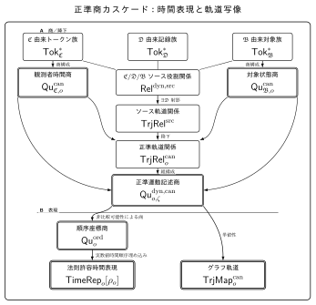


図中の数式


![\mathsf{TimeRep}_{o}[\rho_{o}]](math-S8/156f179400ddd314250cf5978828ec86506fdd1d58cc544389ffbfa525a60ac9.svg)
8.1 標準スキームと理論還元
標準的物理時間比較スキームは、理論固有の幾何、スキーム限定生操作入力、観測者世界線族、比較規則族および結合データ族から成る型付き入力である。スキーム限定生操作入力とスキーム別ソース側実現データムの順序対が、定義 3.25 と同じ型を持つ実現済み操作構成を定める。比較段階および表現段階の構造は、この実現済み操作構成とスキーム別比較規則族を定義域側入力とし、各段階条件の成立により生成される。連続近似評価入力は、定義 4.168 に従い、同じ入力対から定まる。定義 5.2 の完全評価指定を各スキームへ限定した入力を、運動記述段階、法則表現段階および微分法則形式段階の定義域側入力とする。
スキーム限定生操作入力は由来の物理実現と受容網を成分に持ち、スキーム別ソース側実現データムは由来ソーストークン、表示・記録データ、ソース側順序、比較側到着写像、比較側回復写像および由来関係を成分に持つ。スキーム限定結合データ族は、記録側保持、対象状態側の区別および観測者側結合条件を成分に持つ。物理法則の時間変数は、生成済み観測者時間商、観測者時間法則核および法則許容時間表現によって定まる。振動数、周期、Hzおよび標準振動数は、生成済み比較表現座標と由来計数差から表現段階で生成される。

8.1.1 標準スキームの一般形
定義 8.1 (標準的物理時間比較スキーム).
標準的物理時間比較スキームを

によって定める。各成分は次の型を持つ。
-
•
は、スキーム固有の幾何的担体と幾何構造である。
-
•
は、スキーム限定生操作入力である。
-
•
各 に対する は観測者世界線である。
-
•
はスキーム限定比較規則族である。
-
•
は記録結合データと対象状態結合データを含むスキーム限定結合データ族である。


定義 8.2 (スキーム限定生操作入力).

![\displaystyle\left(\mathsf{RcvCar}_{u\mathchar 44\relax\allowbreak\mathsf{Sch}%
}\mathchar 44\relax\allowbreak\mathsf{Rcv}_{\mathfrak{C}\mathchar 44\relax%
\allowbreak u\mathchar 44\relax\allowbreak\mathsf{Sch}}\mathchar 44\relax%
\allowbreak\mathsf{Rcv}_{\mathfrak{D}\mathchar 44\relax\allowbreak u\mathchar 4%
4\relax\allowbreak\mathsf{Sch}}\mathchar 44\relax\allowbreak\mathsf{Rcv}_{%
\mathfrak{B}\mathchar 44\relax\allowbreak u\mathchar 44\relax\allowbreak%
\mathsf{Sch}}\mathchar 44\relax\allowbreak\preceq_{u\mathchar 44\relax%
\allowbreak\mathsf{Sch}}^{\mathrm{rcv}}\right)_{u\in U_{\mathsf{Sch}}}\Bigr{)}](math-S8/ee12ee1c535337c72b8b0adc78d6f70b434b028d3e87581383e9e33eef745ac5.svg)
定義 8.3 (スキーム別ソース側実現データムと運動記述段階入口データ).
標準的物理時間比較スキーム に対し、ソース側トークン族を

表示・記録データを
ソース側順序を

によって定める。
比較側到着写像族、比較側回復写像族および由来関係を


によって定める。
スキーム別ソース側実現データムを

によって定める。スキーム限定実現済み操作構成を

によって定める。
各

に対し、比較側到着写像は

の型を持つ。一意回復可能受容集合を


によって定める。比較側回復写像は

の型を持つ。
各

に対し、運動記述段階直接到着写像を


とし、運動記述段階到着集合を

によって定める。
運動記述ソース役割関係と運動記述段階ソース役割関係は、それぞれ


の型を持つ。運動記述段階四者受容構造を

![\displaystyle\left(\mathcal{R}^{\mathrm{dyn\mathchar 44\relax\allowbreak arr}}%
_{\mathfrak{C}\mathchar 44\relax\allowbreak o\mathchar 44\relax\allowbreak%
\mathsf{Sch}}\mathchar 44\relax\allowbreak\mathcal{R}^{\mathrm{dyn\mathchar 44%
\relax\allowbreak arr}}_{\mathfrak{D}\mathchar 44\relax\allowbreak o\mathchar 4%
4\relax\allowbreak\mathsf{Sch}}\mathchar 44\relax\allowbreak\mathcal{R}^{%
\mathrm{dyn\mathchar 44\relax\allowbreak arr}}_{\mathfrak{B}\mathchar 44\relax%
\allowbreak o\mathchar 44\relax\allowbreak\mathsf{Sch}}\right)\mathchar 44\relax\allowbreak](math-S8/a72907854bbb08ba751babb1e057a848c2c972dfe694b774d15d2c4b997f76bb.svg)

によって定める。運動記述段階回復写像は
の型を持つ。
任意の

に対して
および
を要求する。由来対象状態側同定写像を


によって型を定め、

とする。このとき

が成立する。


命題 8.4 (標準スキームにおける時計側入力と振動数表現の生成位置).
標準的物理時間比較スキーム の時計側操作材料は、定義 2.2 のサイクル添字、位相ラベル、表示更新、カウンタ遷移および内部カウンタ増分から成る。スキーム限定結合データ族 は、記録側保持、対象状態側の区別および観測者側結合条件を成分に持つ。スキーム限定生操作入力 とスキーム別ソース側実現データム は、振動数、周期、Hzおよび標準振動数を成分に持たない。これらの量は、生成済み比較表現座標と由来計数差から表現段階で生成される。各スキームで固有振動数と呼ぶ量は、由来ソース相対振動数表現を当該スキームへ限定した値である。
8.1.2 代表スキーム
代表スキームは、各物理理論の入力を実現済み操作構成
として与える理論別入力データムである。その成分は、時計側のサイクル添字、位相ラベル、表示更新、カウンタ遷移、内部カウンタ増分、記録側保持、対象状態側の区別および観測者側結合条件を含む。時間変数は、各代表スキームの入力から生成される観測者時間商、観測者時間法則核および法則許容時間表現に基づく。振動数、周期、Hz数値、標準振動数および固有振動数は、時計側操作材料に由来するサイクル数差と生成済み表現座標の数量アフィン差から定義される。
各代表スキームは、定義 8.1 の一般形をもち、定義 8.2 のスキーム限定生操作入力と、定義 8.3 のスキーム別ソース側実現データムおよび運動記述段階入口データを成分としてもつ。これらの成分により、各代表理論を第3章と第5章の一般生成列へ還元する。
定義 8.5 (代表スキーム単一対象評価指定).
代表スキームラベルを とする。代表スキームが実現済み操作構成
型付き比較規則族 を与えるとき、比較規則依存共通入力を

によって定める。比較段階条件族評価指定を
![\mathsf{Ev}^{\mathrm{cmp}}_{\mathsf{Sch}}:=\left(\mathsf{Ev}^{\mathrm{cmp}}_{%
\mathsf{Sch}\mathchar 44\relax\allowbreak i}\right)_{i=1}^{7}\mathchar 44%
\relax\allowbreak\qquad\mathsf{Ev}^{\mathrm{cmp}}_{\mathsf{Sch}\mathchar 44%
\relax\allowbreak i}:=\begin{cases}\mathcal{X}_{\mathsf{Sch}}\mathchar 44%
\relax\allowbreak&i=1\mathchar 44\relax\allowbreak\\[3.0pt]
\mathsf{I}_{\mathsf{Sch}}\mathchar 44\relax\allowbreak&i\in\{2\mathchar 44%
\relax\allowbreak\ldots\mathchar 44\relax\allowbreak 7\}\end{cases}](math-S8/1189f1997c6aecc3ecc9900b26e0fa01f2a4eabba7cfc3c98886cc0ee7dc9d77.svg)
によって定める。
さらに、 観測者側情報結合位置 、 および単一対象指定添字 を与えるとき、スキーム限定完全評価指定を


によって定める。
比較段階の操作可能性、厳密比較閉包および運動記述操作可能性を、それぞれ
![\displaystyle\mathsf{DynOperative}\left[\mathsf{Ev}_{\mathsf{Sch}}\right]](math-S8/d97242cb1a12c7c5b4c78790c676cc3579ae96d778224367bea73b6b9758dad7.svg)
と表す。
からまでの分類番号と運動記述条件の対応は次である。

-
()
。
-
()
。
-
()
。
-
()
。
-
()
。
-
()
。
-
()
。
-
()
。


八条件の同時成立を と表す。
![\mathsf{DynCondAll}[\mathsf{Ev}_{\mathsf{Sch}}]](math-S8/7a2d682a7a77794b850fa119daba4a9312148b7ef86aba45ea82f6beea08150c.svg)
運動記述生成対象、法則出力決定性条件および法則記述生成対象は、生成段階ごとに
![\displaystyle\mathsf{DynWit}_{o\mathchar 44\relax\allowbreak\zeta_{\mathsf{Sch%
}}}\left[\mathsf{RepEmb}^{\mathrm{dyn\mathchar 44\relax\allowbreak time}}_{o}%
\right]\mathchar 44\relax\allowbreak](math-S8/fd5288cbbe540f10f016649db4d9540e5c42beb603476e5bbad2bf70edc90207.svg)
![\displaystyle K^{\mathrm{law}}_{\mathrm{CandRelRightUnique}}\left[\mathsf{%
LawEvalDat}_{o\mathchar 44\relax\allowbreak\zeta_{\mathsf{Sch}}}\right]%
\mathchar 44\relax\allowbreak](math-S8/9a48135755ebdfcdbceca0db7b7bd3b6a554ae4394d669769b82fa6fc42978d5.svg)


と表す。ここで
とする。観測者時間法則核の生成には
![\mathsf{LawOperative}\left[\mathsf{LawEvalDat}_{o\mathchar 44\relax\allowbreak%
\zeta_{\mathsf{Sch}}}\right]](math-S8/f0fdc18f2b3008761abcd12dfcbff2f6e8f01f21b160a8b2e9012e9744e6442c.svg)
を要求する。
定義 8.6 (時計側入力と振動数表現の生成規則).
![\mathsf{QtyAffReal}_{\mathfrak{C}}[\mathsf{I}_{\mathsf{Sch}}]](math-S8/79917768cb30fc0d8dda9debea6db79367e535514b0a099634bae53f5517479a.svg)


![\displaystyle=\frac{\mathsf{CntDiff}^{\mathrm{qty}}_{\mathfrak{C}}[\mathsf{win%
}]}{\mathsf{RepDiff}^{\mathrm{qty}}_{\mathfrak{C}}[\mathsf{I}_{\mathsf{Sch}};%
\mathsf{win}]}\mathchar 44\relax\allowbreak](math-S8/9d41042557bd44dd3a0c21d6dca13e8d674adf3c16341f2f9b022b3efb9f6349.svg)
![\displaystyle\nu_{\mathfrak{C}}^{\mathrm{win}}[\mathsf{I}_{\mathsf{Sch}};%
\mathsf{win}]\mathchar 44\relax\allowbreak\quad\mathsf{Per}_{\mathfrak{C}}^{%
\mathrm{win}}[\mathsf{I}_{\mathsf{Sch}};\mathsf{win}]](math-S8/4705a5bb480a7f7b35ffffb1e09f80703dc9764075df60c9366a66babc2b70fb.svg)
定義 8.7 (ニュートン力学・古典力学スキーム).
ニュートン力学・古典力学スキームを と表す。このスキームは、共有される時計側材料、安定した記録対応、対象状態の区別可能性および観測者側結合条件を理論別入力としてもつ。時計側材料は同じ順序表現へ割り当てられ、記録側材料はその順序表現に対応する記録を与え、対象状態側材料は運動記述に必要な区別を与える。
従来の古典物理は、時間変数を運動法則の入力として使用する。本スキームは、古典的な時間変数を、比較段階閉包、表現段階、由来運動記述段階、観測者時間法則核および法則許容時間表現から生成される順序表現として構成する。


ニュートン力学・古典力学スキームは次の入力成分をもつ。
-
()
共有時計に対応する時計側ソース族。
-
()
安定した記録対応を与える記録側保持。
-
()
運動記述に必要な対象状態の区別可能性。
-
()
同一局面で時計側・記録側・対象状態側を結合する観測者側結合条件。
-
()
比較側到着写像、比較側回復写像、比較規則および結合データ。
-
()
定義 8.3 の運動記述段階入口データ。
-
()
分岐負担を一価化する古典的領域の理想化条件。
-
()
観測結合を恒等的に近似する対象状態対応。
-
()
法則出力決定性を評価する軌道対応および観測量対応。


これらの入力により、古典的領域における比較段階、表現段階、連続近似段階、運動記述段階、法則表現段階および微分法則形式段階の成立条件を評価する。
定義 8.8 (時間計量スキーム).
時間計量スキームを と表す。このスキームは、基準由来ソース と正規化規約 をもち、記録側対応によってサイクル数記録を保持する。標準時構成は、サイクル数記録、計数の比較・補正、補正記録および比較商の貼り合わせから生成される表現である。
時間計量スキームは次の入力成分をもつ。
-
()
基準由来ソースと正規化規約。
-
()
サイクル数記録を保持する記録側ソース族。
-
()
計数の比較・補正、補正記録およびトレーサビリティ情報を含む比較規則。
-
()
比較側到着写像、比較側回復写像およびソース側ペア関係。
-
()
定義 8.3 の運動記述段階入口データ。


![\displaystyle\nu_{\mathfrak{C}}^{\mathrm{std}}[\mathsf{I}_{\mathsf{Sch}_{%
\mathrm{TM}}}]](math-S8/3f486bee3db8a73787fe4df0ede53a259140aa03cb104d4d0e7869223b9d9ae5.svg)
![\displaystyle=\nu_{\mathfrak{C}}^{\mathrm{src}}[\mathsf{I}_{\mathsf{Sch}_{%
\mathrm{TM}}};j_{\mathrm{std}}^{\mathrm{src}}]\mathchar 44\relax\allowbreak](math-S8/d0f545c58a9c2b27a64bfe6bae1c271272c4dc8bb5fe7fe07ab50858689a9922.svg)
![\displaystyle\nu_{\mathfrak{C}}^{\mathrm{Hz}}[\mathsf{I}_{\mathsf{Sch}_{%
\mathrm{TM}}}]](math-S8/5088aea1922cbdca530d6dcadb000a7cfa89c901d0de840fa49c634468603a36.svg)
![\displaystyle=\frac{\nu_{\mathfrak{C}}^{\mathrm{std}}[\mathsf{I}_{\mathsf{Sch}%
_{\mathrm{TM}}}]}{N_{\mathrm{std}}\cdot_{\mathfrak{C}}^{\mathrm{qty}}1_{%
\mathfrak{C}}^{\mathrm{qty}}}.](math-S8/cdfca736474d61cb7af0714fcc95b97ba7b5805a7599d4d21ab078c8dc62da92.svg)
定義 8.9 (GPSスキーム).
GPSスキームを と表す。このスキームは、複数の時計側ソース族、記録側補正記録、輸送規則および観測者側受容構造をもつ分散比較スキームである。GPSにおける時計調整と時刻補正は、計数比、輸送および貼り合わせの差を比較可能な記録へ対応づける。
衛星側と受信側の時計側材料はサイクル数ソースとして与えられる。輸送補正、相対論的補正および受信側再構成は、サイクル数記録と比較輸送データムを正準比較商へ貼り合わせる構造条件である。
GPSスキームは次の入力成分をもつ。
-
()
衛星側および受信側の時計側ソース族。
-
()
航法メッセージ、補正記録および受信記録を含む記録側ソース族。
-
()
受信側の対象状態側材料と観測者側結合条件。
-
()
伝搬補正、相対論的補正および時計補正を含む比較規則。
-
()
比較側到着写像、比較側回復写像およびソース側ペア関係。
-
()
定義 8.3 の運動記述段階入口データ。


GPSスキームにおける複数時計族の調整、同期、補正および航法時刻付けの成立範囲は、第6章の破綻位置トークン系によって判定する。
定義 8.10 (特殊相対論スキーム).
特殊相対論スキームを と表す。このスキームは、ミンコフスキー時空上の観測者世界線、局所時計側受容、記録側対応および輸送規則をもつ。従来の特殊相対論は、ミンコフスキー時空と慣性座標時を法則記述の入力として使用する。本スキームは、ミンコフスキー時空を理論別入力担体として用い、慣性座標時を、比較段階閉包、表現段階、運動記述段階、観測者時間法則核および法則許容時間表現から生成される座標表現として構成する。

特殊相対論スキームは次の入力成分をもつ。
-
()
慣性観測者網に対応する観測者集合と世界線。
-
()
各観測者の局所時計側受容、記録側受容および対象状態側受容。
-
()
同期手続、固有時比較および慣性座標変換に対応する比較規則。
-
()
比較側到着写像、比較側回復写像およびソース側ペア関係。
-
()
定義 8.3 の運動記述段階入口データ。


固有時比較、同期手続および同時性の分岐は、同じ生成列における比較、表現および貼り合わせの成立条件によって判定する。
定義 8.11 (一般相対論スキーム).
一般相対論スキームを と表す。このスキームは、ローレンツ時空上の局所観測者網、世界線依存の受容構造、輸送データおよび貼り合わせデータをもつ。従来の一般相対論は、ローレンツ時空と固有時表現を法則記述の入力として使用する。本スキームは、ローレンツ時空を理論別入力担体として用い、固有時表現を世界線局所の比較データと生成済み表現座標から生成される局所表示として構成する。
一般相対論スキームは次の入力成分をもつ。
-
()
局所観測者網と世界線依存の受容構造。
-
()
局所時計側受容、記録側受容および対象状態側受容。
-
()
局所比較、輸送および貼り合わせに関する比較規則。
-
()
比較側到着写像、比較側回復写像およびソース側ペア関係。
-
()
定義 8.3 の運動記述段階入口データ。

局所から大域への比較制限、輸送および貼り合わせの成立範囲は、第6章の破綻位置トークン系によって判定する。
定義 8.12 (量子再構成スキーム).
量子再構成スキームを と表す。このスキームは、時計側・記録側・対象状態側ソース族、分岐感受的記録構造、観測者側結合および比較貼り合わせ条件を入力とし、外部時間を原始入力から除外する。これらの入力から、各段階の成立条件に従って比較段階閉包、正準比較商、由来運動記述および法則許容時間表現を生成する。法則記述操作可能性を満たす法則評価データムに対して、観測者時間法則核を生成する。
量子再構成スキームは次の入力成分をもつ。
-
()
時計側・記録側・対象状態側ソース族。
-
()
分岐感受的記録構造と対象状態側区別可能性。
-
()
観測者側結合条件と比較貼り合わせ条件。
-
()
比較側到着写像、比較側回復写像およびソース側ペア関係。
-
()
定義 8.3 の運動記述段階入口データ。

観測結合、対象状態の区別、状態同定および法則表現の成立範囲は、運動記述段階、法則表現段階および微分法則形式段階の条件によって判定する。
命題 8.13 (代表スキームの原始振動数非依存還元).
各


について、代表スキームの理論別成分は
を構成する。観測者時間商および法則許容時間表現は、それぞれの生成条件を満たす領域で、この実現済み操作構成、型付き比較規則族、観測者側情報結合位置および単一対象指定添字から生成される。観測者時間法則核は、対応する法則評価データムが法則記述操作可能性を満たすときに生成される。振動数、周期、Hz数値、標準振動数および固有振動数は、各量の定義が要求する数量アフィン実現、許容計数窓、窓不変性および単位正規化の条件に従い、サイクル数差と生成済み表現座標の数量アフィン差から生成される。
証明.
定義 8.6 により、時計側入力はサイクル添字、位相ラベル、表示更新、カウンタ遷移および内部カウンタ増分として与えられ、振動数表現はサイクル数差と生成済み表現座標の数量アフィン差から定義される。
定義 8.7、 定義 8.8、 定義 8.9、 定義 8.10、 定義 8.11 および定義 8.12 は、それぞれの代表スキームについて、生操作入力、ソース側実現データム、型付き比較規則族および運動記述段階入口データの各成分を与える。定義 8.5 により、これらの成分から対応する完全評価指定が定まる。
定義 3.25 により実現済み操作構成が定まり、定義 5.56 により観測者時間商が定まる。定理 5.112 により運動記述対象と運動記述証拠データムが生成され、定理 5.113 と定義 5.108 により観測者時間法則核が生成される。定義 5.63 により法則許容時間表現が生成される。命題 8.4 により、生操作入力とソース側実現データムは時間変数、時間間隔、周期および振動数を成分に含まず、これらの量は後続生成段階に属する。定義 4.150 および定義 4.151 により、振動数、周期およびHz数値が生成される。定義 4.152 により、標準振動数とHz単位スカラーが生成される。したがって、六つの代表スキームは時間変数または原始振動数値を生成前の入力に要求せず、各時間表現量と振動数量を一般生成列から得る。 ∎
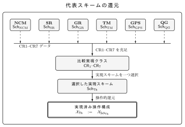


図中の数式
8.1.3 比較実現クラスと実現済み操作構成への還元
定義 8.14 (比較実現クラス).
物理理論 が比較実現クラスに属するとは、 の幾何、操作入力、世界線族、比較規則および結合データを実現する標準的物理時間比較スキームが少なくとも一つ存在し、次の七責務を満たすことをいう。本節では、そのようなスキームを一つ選んで

と書く。この表記は実現スキームの一意性を仮定しない。
定義 8.15 (理論から実現済み操作構成への還元).
比較実現クラスに属する物理理論 に対し、実現済み操作構成を


によって定める。

証明.

命題 8.17 (代表理論が比較実現クラスの入力データを与える).
に対応する代表理論は、定義 8.14 のCR1からCR7までのデータを与える。したがって、各代表理論は比較実現クラスに属する。
証明.
系 8.18 (代表理論に対する共通生成段階判定).

8.1.4 解釈経路別の多段階誤認
定義 8.19 (生成順序に対する多段階誤認).
時間参照構成では、生操作入力から、比較段階、表現段階、運動記述段階から法則表現段階、微分法則形式段階へ至る生成列と、運動記述段階から連続近似段階へ至る分岐の依存順に、各段階の対象と成立条件が生成される。定義 7.117 の解釈別証拠照合経路について、次の操作を含む説明を多段階誤認とよぶ。
-
1.
後段で生成される対象、量、構造またはその担持対象を、その生成条件より前の段階へ入力または所与として置く。
-
2.
局所段階または部分段階の成立を、追加条件を要する後続段階または大域段階の成立と同一視する。
-
3.
後段で生成される関係量または比較差を、構成前に仮定された実体の属性変化として再記述する。
-
4.
先行証拠の成立を、異なる対象、述語、証拠型、成立条件または適用域へ移し、移送先に固有の証拠または妥当な導出を備えずに直接実証として扱う。
一つの解釈別証拠照合経路において、直接依存をもって連続する上の各操作を一段階と数える。証拠効力層の個数および列挙項目の個数を、そのまま誤認段階数としない。同一言明であっても、許容解釈が異なれば誤認段階数は異なり得る。
解釈別証拠照合経路の証拠効力越境数が0である場合、その解釈に多段階誤認は成立しない。裸の時間属性表現が物理担体上の比較差を時間属性へ移す場合、その対象型移送を一段階誤認とする。未構成の時間実体を先行配置し、比較差をその実体の属性変化へ帰属する文字どおりの説明では、生成前配置と属性帰属が直接依存をもって連続する二段階誤認となる。
命題 8.20 (限定成果の無制限継承の解釈経路別適用).
各資料について、数学的一貫性、予測性能、模型適合、経験的適合および物理担体上の比較差を、それぞれの証拠効力域で保持する。解釈別証拠照合経路が、対象、述語、証拠型、成立条件または適用域を独立証拠または妥当な導出なしに移す場合、その直接依存をもつ移送を多段階誤認として判定する。
同一資料または同一言明に複数の許容解釈がある場合、解釈ごとに誤認の成立と段階数を定める。物理担体上の比較差を直接記述する解釈と、比喩性、字義どおりの時間変形を指示しないこと、および実際の参照対象を原典本文が明示する解釈に、多段階誤認は成立しない。裸の時間属性表現は、事後的に略記として解釈できる場合も一段階誤認を構成する。未構成の時間実体を先行配置する文字どおりの時間伸縮は二段階誤認を構成し、そこから別の対象域へ証拠効力を移す経路には、その直接依存に従って後続段階を加える。
誤認段階数は、分野名または資料名から一律に定まらず、各資料の形式構成、言明および許容解釈が作る直接依存経路から定まる。
証明.
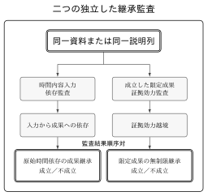
妥当性局在化、近似局在化、定義 6.10 の破綻位置トークンによる分類および構造負担対応を、代表スキームと古典時間の判定へ適用する。代表スキームでは、各理論が与える実現済み操作構成と構造負担を対応づける。古典的領域では、古典的時間表現が成立する部分クラス、連続近似妥当性が成立する尺度付き有効域およびその有効域境界を分離する。
命題 8.21 (原始時間前提による現代物理学の物理時間成立資格失効).
任意の代表スキーム に対し、定義 8.5 の完全評価指定を

とする。代表理論の物理法則時間変数が使用する時間内容と成立根拠構造が、法則演算および成果導出に先行して非時間的物理入力から生成されるとき、その時間変数は物理時間成立資格を満たす。
時間内容が、その使用に必要な成立根拠構造より前に法則演算または成果導出へ入力されるとき、その時間内容は原始時間入力であり、その時間変数は物理時間成立資格を満たさない。数学的一貫性、予測性能および経験的適合が同時に成立しても、この資格失効は補完されない。
命題 7.191 により、監査72資料のうち、原始時間入力を全依存根から排除する資料と、非時間的物理入力から完全な時間生成を与える資料は、それぞれ である。時間内容の生成以前に少なくとも一つの時間的依存根を使用する資料は である。定理 7.190 により、全72資料に原始時間根と原始時間根依存成果が存在する。定理 7.201 により、全72資料が資料内で使用する時間内容の全体について生成完成条件を満たさない。

したがって、物理法則の時間変数は原始前提では成立しない。監査72資料が担う現代物理学の理論記述は、現在の時間変数使用をそのまま保持する限り、物理時間成立資格を満たさない。すなわち、現代物理学はそのままでは成立しない。この不成立は、時間内容の生成、法則使用および成果伝播の順序に関する物理時間成立資格の失効である。数学的一貫性、予測性能および経験的適合は、各理論の評価成功として保持される。
証明.
定義 8.5 により、完全評価指定の成分は、実現済み操作構成、型付き比較規則族、観測者側情報結合位置および対象指定添字である。
時間内容と成立根拠構造が法則演算および成果導出に先行して生成される場合、定理 7.200 により、その時間内容を使用する物理法則時間変数は物理時間成立資格を満たす。
時間内容が必要な成立根拠構造より前に使用される場合、定義 7.10 により、その時間内容は原始時間入力である。定理 7.11 により、その時間内容は物理時間成立資格を満たさない。命題 7.13 により、数学的一貫性、予測性能および経験的適合の同時成立は、この資格失効を補完しない。
命題 7.191 は、原始時間入力の全依存根からの排除と完全時間生成がともに0/72であり、生成以前の時間的依存根の使用が72/72であることを与える。定理 7.190 は、全資料における原始時間根と原始時間根依存成果の存在を与える。定理 7.201 は、全資料における生成完成条件の不成立を与える。
したがって、監査72資料が担う現代物理学の理論記述には、物理時間成立資格を欠く時間内容と、その時間内容へ依存する成果が残る。系 7.15 の生成先行条件により、物理法則の時間変数は原始前提では成立しない。ゆえに、現在の時間変数使用をそのまま保持する限り、現代物理学はそのままでは成立しない。 ∎
8.2 理論別構造帰結
各代表理論に対する帰結は、一般生成定理の適用部分と、当該理論に固有の構造負担から成る。一般生成定理は、実現済み操作構成 に対する操作可能性判定、比較段階判定、表現段階判定、連続近似段階判定、運動記述段階判定、法則表現段階判定、微分法則形式段階判定および初回構造破綻判定を与える。理論固有の構造負担は、各理論の入力が各生成段階で満たすべき条件を与える。

SRでは慣性座標時刻が観測者時間法則核に基づく順序表現を与える。GRでは分岐解消付き比較負担が、比較段階の正準比較商または運動記述段階の降下条件に現れる。時間計量では、トレーサビリティに基づく商順序、由来比較表現座標および数量アフィン差から、標準振動数、周期およびHz数値が定まる。GPSでは回転由来閉路欠損が比較段階の大域貼り合わせ破綻に現れる。量子再構成では、外部時間を原始入力から除外した記録、分岐感受性、対象状態差異、観測者側結合および比較貼り合わせ条件から、法則を担う時間表現の生成条件を判定する。
| 代表 | 入力担体 | 比較負担 | 運動・法則負担 |
|---|---|---|---|
| NCM |
共有時計
安定記録 対象状態列 |
共有時計領域
単一順序化 |
分岐負担
観測結合一価化 |
| SR |
慣性観測者網
局所時計 同期規則 |
慣性間閉包
順序表現 |
法則核表現負担 |
| GR |
局所観測者網
世界線依存受容 輸送データ |
固有時表示
大域貼り合わせ |
分岐解消
輸送保存 商降下 法則単値性 |
| TM |
基準サイクル
計数規約 補正記録 |
計数比較
表現座標降下 |
振動数表現負担
周期表現負担 Hz表現負担 |
| GPS |
衛星時計
受信記録 補正規則 輸送規則 |
多時計比較
伝搬補正 閉路整合 大域貼り合わせ |
航法時刻表現
法則核表現負担 |
| QG |
外部時間を原始入力から
除外 記録 分岐感受性 観測者結合 |
比較貼り合わせ
対象状態同定 成立負担 |
運動記述
操作可能性 法則核生成負担 |
| 代表 | 生成対象 | 典型破綻 |
|---|---|---|
| NCM |
古典時間
古典的連続近似 古典的法則表示 |
|
| SR |
慣性座標時刻
生成表現 |
|
| GR |
局所固有時表示
大域法則時間表現 段階差 |
|
| TM |
由来比較表現座標
標準振動数・周期 Hz数値 |
|
| GPS |
航法時刻
回転由来閉路欠損の局在化 |
|
| QG | 外部時間を原始入力から除外した法則許容時間表現 |
|


命題 8.22 (代表スキームの型境界).
代表スキームは、既存理論がもつ入力担体、比較負担、運動記述負担および法則表現負担を、実現済み操作構成と各段階の追加入力として与える。理論別入力として与えられる理論内容と、生成段階で構成される時間比較、時間表現、連続近似妥当性、運動記述、法則許容時間表現、微分法則形式、尺度付き有効域および破綻位置トークンを型によって分離する。
証明.
表 17 および表 18 は、代表理論が理論別入力として与える担体、生成段階で判定される負担、生成対象および典型破綻を分離する。NCM、SR、GR、TM、GPSおよびQGは異なる入力担体をもつが、系 8.18 により、対応する実現済み操作構成と各段階の追加入力は、比較段階、表現段階、運動記述段階から法則表現段階、微分法則形式段階へ至る生成列と、運動記述段階から連続近似段階へ至る分岐の共通生成順序へ従う。各段階条件の失効位置は、定義 6.10 の破綻位置トークンによって分類される。したがって、代表スキームは、理論固有の入力と生成対象を混同せず、各理論の時間成立負担、法則表現負担、微分法則形式負担および尺度付き有効域を同じ生成順序で判定する入力型である。 ∎
相対論的計算は、時計読取、座標表示、固有時表示、運動記述および観測記録の間に高精度な対応関係を与える。これらの対応関係が立証する対象は、時計読取差、座標時刻差、世界線に沿う固有時間差、計量構造およびそれらの対応関係である。
これらの高精度な対応関係は、時間または時空を構成前の実体として保持した説明のもとで、時間実体または時空実体の伸縮、遅速もしくは変形として記述されてきた。
定理 7.201 により、監査72資料のいずれも、資料内で使用する時間内容の全体を非時間的物理入力から生成していない。命題 7.13 により、数学的一貫性、予測性能および経験的適合は、原始時間入力の物理時間成立資格を補完しない。したがって、相対論的計算の成功から、独立した時間実体または時空実体の伸縮、遅速もしくは変形は導かれない。
時間または時空を構成前の実体として保持し、生成後の関係量をその実体の属性変化として説明する形式は、後続の量子論、量子重力、時空創発および宇宙論にも現れる。原始時間入力を残したまま後続理論へ依存を移すと、時間参照構成、生成済み法則許容時間表現、尺度付き有効域および破綻境界として判定すべき問題が、時間、時空、観測または重力の未分離な問題として継承される。
命題 8.23 (時間伸縮説の二段階誤認).
相対論的時計差は、本稿の生成順序では、複数の観測者または世界線に対応する生成済み法則許容時間表現間の比較差として定まる。時間伸縮説は、この比較差に先立って時間を未構成の実体として仮定し、その時間実体の伸縮、遅速または変形によって相対論的時計差を説明する。したがって、この説明形式は、定義 8.19 の第1項および第3項が直接依存をもって連続する時間伸縮説の二段階誤認である。
証明.
代表スキームでは、SRおよびGRの時間使用は、実現済み操作構成から比較段階、表現段階、運動記述段階から法則表現段階、微分法則形式段階へ至る生成列と、運動記述段階から連続近似段階へ至る分岐に従う。相対論的時計差は、この生成順序で得られる複数の法則許容時間表現間の比較差である。
時間伸縮説は、この比較差に先立って、時間をその生成条件より前の段階へ未構成の実体として置く。これは、定義 8.19 の第1項を満たす。さらに、後段で生成される比較差を、その時間実体の伸縮、遅速または変形という属性変化として再記述するため、同定義の第3項を満たす。第3項の再記述は、第1項による時間実体の先行入力を前件とする。したがって、第1項と第3項は直接依存をもって連続し、この説明形式は時間伸縮説の二段階誤認である。 ∎
定理 8.24 (ニュートン力学・古典力学の構造帰結).
完全評価指定 と法則評価データム に対し、

が成立し、

とする。このとき、観測者時間法則核
が定まる。古典的時間変数は、法則許容時間表現 の値を表示する。分岐負担、観測結合負担および法則出力決定性が古典的領域で成立するとき、ニュートン力学・古典力学の法則は、この生成済み時間表現を安全な適用域内で使用できる。

証明.
定義 5.102 により、法則記述操作可能性は運動記述操作可能性と法則条件群の同時成立を含む。定義 5.108 により、表示した実数値時間順序埋め込みに相対する観測者時間法則核が定まる。定義 5.63 により、法則許容時間表現は由来正準観測者時間商を実数値時間へ対応づける。
定義 8.7 の共有時計領域は時計側材料を同じ順序表現へ対応づけ、安定記録は対象状態側材料を同じ法則担持領域へ接続し、観測者側結合条件は同一局面の四者結合を成立させる。法則出力決定性が成立する古典的領域では、古典的時間変数は生成済み法則許容時間表現の値を表示する。
物理時間成立資格との接続. ニュートン力学・古典力学の共有時計領域、単一順序化および古典的法則表示に現れる時間内容は、対応する成立根拠構造が法則演算および成果導出に先行するとき、定理 7.200 の物理時間成立資格を満たす。時間内容が成立根拠構造より前に入力される場合、定理 7.11 により、その時間内容は物理時間成立資格を満たさない。
命題 8.25 (ニュートン力学・古典力学における原始時間依存の継承).
ニュートン力学・古典力学において、古典的時間変数を、その時間内容および成立根拠構造の生成以前に、運動方程式、初期値指定、軌道のパラメータ表示または相流の発展変数へ使用すると、その時間変数は原始時間入力となる。この入力に依存して構成される軌道、速度、加速度、初期値発展、保存量の同定、保存量の時間発展判定、相流および法則成果は原始時間依存を継承し、各成果に含まれる時間内容は物理時間成立資格を満たさない。運動方程式の数学的一貫性、予測性能、操作的再現性および経験的適合は、この資格失効を補完しない。
証明.
命題 8.26 (生成時間と破綻分類によるニュートン力学・古典力学の安全な再使用).
定理 8.24 の条件が成立するとき、生成済み法則許容時間表現を用いるニュートン力学・古典力学の法則、初期値発展、軌道および保存量は、安全な適用域内で成立する。速度、加速度、相流または微分方程式による発展には、さらに定義 5.132 の微分段階操作可能性を要する。
いずれかの生成段階条件が失効するとき、定義 6.10 の破綻位置トークン系および定理 6.168 の最小破綻位置集合が、最初に修復すべき条件を定める。修復は、定義 6.17 の失効生成依存順序に従って上流から行い、修復後の入力から下流成果を再計算する。成立条件を再び満たした範囲では、対応する古典法則、初期値発展、軌道、保存量および相流を保持できる。
初期値、時間表現または微分近似に含まれる誤差原因を修復した場合、その修復が精度に与える効果は、下流成果を再計算した結果に対する精度評価によって判定する。したがって、古典法則の使用判断は、安全な適用域における保持と、最小破綻位置からの修復へ分かれる。
証明.
定理 8.24 により、法則記述操作可能性と実数値時間順序埋め込みの成立は、ニュートン力学・古典力学の法則時間入力として用いる生成済み法則許容時間表現を与える。定義 5.132 により、速度、加速度、相流および微分方程式による発展に必要な微分法則形式は、微分段階操作可能性の成立域で保持される。
定義 6.10 は各失効条件を対応する破綻位置トークンへ対応づける。定理 6.168 は失効生成依存順序に関して最小となる失効位置を定める。定義 6.17 により、この位置より下流の条件および成果は上流条件へ依存する。ゆえに、最小破綻位置に属する原因を修復し、下流成果を再計算する順序が定まる。
誤差原因が初期値、時間表現または微分近似に属する場合、その原因を修復した入力から下流成果を再計算し、再計算結果へ精度評価を適用できる。以上により、成立条件を満たす範囲での既存成果の保持、最小破綻位置からの修復順序および条件付き精度評価が成立する。 ∎
定理 8.27 (特殊相対論の構造帰結).
が成立し、
とする。このとき、観測者時間法則核

が定まる。SRの慣性座標時刻は、この法則核に含まれる法則許容時間表現の座標表示を与える。
証明.
定義 5.102 により、法則記述操作可能性は運動記述操作可能性と法則条件群の同時成立を含む。定義 5.108 により、観測者時間法則核が定まり、定義 5.63 により、法則許容時間表現が由来正準観測者時間商を実数値時間へ対応づける。
定義 8.10 により、慣性観測者網、局所時計側受容、同期手続および慣性座標変換に対応する比較規則がSRの入力を与える。これらの入力が各生成段階条件を満たす範囲で、慣性座標時刻は生成済み法則許容時間表現の座標表示である。 ∎
定理 8.28 (一般相対論の構造帰結).

が成立するとき、世界線局所の比較データと生成済み表現座標は、局所固有時表示 を与える。

さらに
が成立するとき、由来正準軌道関係 が定まる。法則記述操作可能性が成立するとき、観測者時間法則核が定まる。局所固有時表示の存在だけから、正準軌道関係の右一意性または観測者時間法則核の存在は導かれない。

証明.
定義 8.11 により、世界線局所の時計側受容、記録側受容、局所比較規則および生成済み表現座標は局所固有時表示を構成する。
運動記述段階では、定義 5.23 の由来正準軌道関係の降下に、比較段階閉包と運動記述条件群を要求する。その右一意性は定義 5.26 の運動記述段階正準軌道関数条件を要求する。法則段階では、定義 5.102 の法則記述操作可能性と、定義 5.108 の実数値時間順序埋め込みを要求する。
したがって、分岐解消、輸送保存、商降下または法則出力決定性が失効する場合、局所固有時表示が与えられても、正準軌道関係の右一意性または観測者時間法則核の存在は成立しない。 ∎
定理 8.29 (時間計量の構造帰結).
が成立し、由来条件付き数量アフィン実現
が指定されるとする。さらに、基準ソースに対する許容計数窓の非空族をとり、その族上で定義4.150の窓不変性が成立するとする。このとき、由来比較表現座標、標準振動数表現、周期表現およびHz単位スカラーは、基準サイクル数ソース族、サイクル計数規約、計数の比較・補正、補正記録、正準比較商および生成済み表現座標から定まる。
証明.
定義 4.175 により、厳密操作可能性は比較段階と表現段階の完成を含む。定義 8.6 により、基準サイクル数ソース族、サイクル計数規約、計数の比較・補正および補正記録は、正準比較商と生成済み表現座標へ接続される。
由来条件付き数量アフィン実現は、生成済み表現座標の数量アフィン差を与える。サイクル数差とこの数量アフィン差から振動数表現および周期表現が定まり、定義 4.152 により標準振動数表現とHz単位スカラーが定まる。したがって、トレーサビリティ網は、原始周波数を入力せず、生成済み比較順序と数量アフィン差に基づく標準振動数表現、周期表現およびHz数値を与える。 ∎
定理 8.30 (GPSの構造帰結).
GPSスキームの各生成段階条件が成立する領域では、航法時刻変数は生成済み法則許容時間表現の値を表示する。
同じ始点と終点を結ぶ純粋輸送語
が、閉路語 の非恒等作用証人を与えるとき、

![\neg\mathsf{G}\left[\mathsf{Ev}^{\mathrm{cmp}}_{\mathsf{Sch}_{\mathrm{GPS}}}\right]](math-S8/e97287a6fc41a20f804f5c1ade3d05e38229970a88def2815aa39f8e53c0845e.svg)
が成立し、比較段階の大域貼り合わせは失効する。
証明.
定義 8.9 により、GPSスキームは衛星側および受信側の時計側ソース族、受信記録、補正規則、輸送規則ならびに観測者側結合条件を与える。厳密操作可能性、運動記述操作可能性および法則記述操作可能性が成立する領域では、定義 5.63 の法則許容時間表現が生成され、航法時刻変数はその値を表示する。
仮定された非恒等作用証人により、全純粋輸送閉路恒等作用条件は失効する。したがって、比較段階の大域貼り合わせ条件
は成立せず、その失効位置は定義 6.10 の比較段階破綻位置トークンによって分類される。 ∎
定理 8.31 (量子再構成の構造帰結).
量子再構成スキーム は、外部時間を原始入力から除外し、時計側・記録側・対象状態側ソース族、分岐感受的記録構造、観測者側結合および比較貼り合わせ条件を入力とする。
が成立するとき、正準比較商と表現段階対象が定まる。さらに
![\mathsf{DynOperative}\left[\mathsf{Ev}_{\mathsf{Sch}_{\mathrm{QG}}}\right]](math-S8/6fd2614efc00d4580ad3d08156160d8da3fd137aac94aeac28e3b303ca3a7055.svg)
が成立するとき、由来正準観測者時間商、由来正準対象状態商、由来正準軌道関係、グラフ軌道、正準観測量関数族および法則許容時間表現が定まる。法則記述操作可能性が成立するとき、観測者時間法則核が定まる。
8.3 時間計量の具体的還元例
定義 8.8 の時間計量スキームを、定義 4.150 の由来振動数・周期表現および定義 4.152 の由来標準振動数表現へ特殊化する。基準由来ソース、サイクル数添字、記録側対応、比較閉包、由来正準比較商、由来比較表現座標、数量アフィン差、振動数・周期表現およびHz数値は、この依存順序で定まる。
時間計量で用いられる秒、振動数およびHzは、標準化された測定実装として与えられる[14]。標準化された測定実装は、数値規約、測定再現性および標準間の伝達を与える。一方、時間内容の生成以前に秒、振動数またはHzを時間間隔、較正基準、同期基準、トレーサビリティの参照基準または法則時間入力として使用すると、その使用は原始時間入力となる。時間計量スキームでは、基準サイクル、記録、比較規則および単位正規化規約を入力とし、振動数、周期およびHz数値を生成済み比較表現上の数量として定める。この生成順序が、標準化された数値を物理時間成立資格をもつ時間計量へ接続する。
8.3.1 サイクル数から振動数表現まで
定義 8.8 の時間計量スキームを考える。その基準由来ソースおよび正規化規約は、同定義によって与えられる。
各について、サイクル数添字を , とし、対応する由来ソーストークンを


とする。付随記録を含む由来記録トークンを

とし、対応を


によって与える。付随記録は、補正記録、環境記録、計数の比較・補正およびトレーサビリティに必要な記録内容を含む。対象状態側トークンは、各記録が属する比較局面を区別する。
観測者側情報結合位置に対する計数窓を

とする。
記録側保持、補正記録、計数の比較・補正および型付き比較規則族が、二つの由来ソーストークンを同一基準系列の同一比較窓で比較可能にするとする。定義 4.150 の所属条件と厳密順序条件が成立するとき、
このとき、窓端点像（）は由来正準比較商

の元であり、由来正準厳密順序を満たす。

命題 8.32 (サイクル数から振動数表現への生成).
および
が成立し、由来条件付き数量アフィン実現が指定されているとする。さらに
とする。このとき、由来計数窓振動数表現は
![\displaystyle=\frac{\mathsf{CntDiff}^{\mathrm{qty}}_{\mathfrak{C}}[\mathsf{win%
}_{\mathrm{std}}]}{\mathsf{RepDiff}^{\mathrm{qty}}_{\mathfrak{C}}[\mathsf{I}_{%
\mathsf{Sch}_{\mathrm{TM}}};\mathsf{win}_{\mathrm{std}}]}\in\mathsf{QtyVal}_{%
\mathfrak{C}}](math-S8/837f0dbbd97b2fd41aa4a44acb7854ca6dedab40331beb4a4bd21fc32b7bfc24.svg)
として定まる。由来計数窓周期表現との積はである。

基準由来ソースに対する窓不変性が成立するとき、上式の共通値が由来標準振動数表現を与える。正規化規約は由来Hz単位スカラーを定め、その単位スカラーに対するHz数値は定義 4.151 によって定まる。

証明.
許容計数窓の定義により、二つの窓端点像は由来正準比較商上で厳密順序を満たす。命題 4.153 により、由来比較表現座標における数量アフィン差は正であり、由来計数窓振動数表現および周期表現が定まる。同命題により、両表現の積は由来数量単位である。
物理時間成立資格との接続. 時間計量のサイクル数記録、由来振動数・周期表現およびHz数値は、法則時間変数の較正または法則内の数量入力に用いられる。これらを使用する物理法則時間変数について、系 7.15 の生成先行条件を要求する。命題 8.21 により、時間内容と成立根拠構造が法則演算および成果導出に先行して生成される場合、その時間変数は物理時間成立資格を満たす。時間内容が必要な成立根拠構造より前に使用される場合、その時間変数は物理時間成立資格を満たさない。
基準由来ソース、記録対応、型付き比較規則族および構造的表現段階に加え、使用する量に応じて許容計数窓、数量アフィン実現、窓不変性および単位正規化が要求される。連続近似には有限操作粒度データムと連続近似評価入力が要求される。形成済みかつ評価可能な六系列の条件が失効する場合、定義 6.10 の破綻位置トークンが各極小失効位置を分類する。数量固有条件の不成立は、命題 8.35 に従って、対応する量の定義条件として判定する。
命題 8.33 (時間計量における原始時間依存の継承).
時間計量スキームの生成条件が成立する前に、秒、振動数、周期またはHz数値を時間間隔、較正基準、同期基準、トレーサビリティの参照基準または法則時間入力として使用すると、その使用は原始時間入力となる。これらに依存する較正値、周波数比、時刻目盛、同期結果、校正の連鎖および法則成果は原始時間依存を継承し、各成果に含まれる時間内容は物理時間成立資格を満たさない。測定精度、再現性、標準間一致およびトレーサビリティの成立は、この資格失効を補完しない。
時間計量スキームの生成条件が成立すると、サイクル数記録、比較閉包、由来比較表現座標、数量アフィン差、窓不変性および単位正規化規約から、振動数、周期およびHz数値が生成される。これらの数量を法則時間入力として使用する場合、法則記述操作可能性が成立し、法則時間内容の生成が法則演算および成果導出に先行するとき、これらの数量は物理時間成立資格をもつ法則時間入力となる。
証明.
系 8.34 (時間計量における非循環性).
時間計量スキームの原始入力は、基準由来ソース、サイクル数添字、記録側対応、型付き比較規則族および正規化規約から成る。振動数、周期およびHz数値は、これらの原始入力から生成される正準比較商、由来比較表現座標、数量アフィン差ならびに窓不変性を経て定まる。
証明.
命題 8.32 により、由来計数窓振動数表現は、サイクル数差と生成済み比較表現座標の数量アフィン差の比として定まる。由来標準振動数表現は窓不変性により定まり、由来Hz単位スカラーとHz数値は単位正規化規約により定まる。したがって、原始入力から比較・表現・数量化・正規化へ進む依存順序が、時間計量の振動数、周期およびHz数値を生成する。 ∎
命題 8.35 (時間計量の具体的還元例における失効結果の局在化).
時間計量スキームにおいて振動数表現、周期表現またはHz数値の生成条件が失効するとき、その条件が六破綻系列に属する場合、各極小失効位置は定義 6.10 の破綻位置トークンによって分類される。
-
(1)
記録対応または比較規則に関する、形成済みかつ評価可能な比較系列条件が失効するとき、各極小失効位置は比較段階に属する。
-
(2)
由来正準比較商の成立後、形成済みかつ評価可能な表現系列条件が失効するとき、各極小失効位置は表現段階に属する。数量アフィン実現、許容計数窓、窓不変性および単位正規化は、それぞれを要求する量の定義条件として判定する。
-
(3)
有限操作粒度データムまたは連続近似評価入力が不足するとき、対応する近似条件は未形成または評価不能となる。形成済みかつ評価可能な連続近似九条件が失効するとき、各極小失効位置は連続近似段階に属する。
-
(4)
生成済み振動数表現、周期表現またはHz数値を運動記述、法則表現または微分法則形式へ接続する形成済みかつ評価可能な系列条件が失効するとき、各極小失効位置は対応する後続段階に属する。
証明.
定義 4.150 および命題 4.153 により、振動数・周期表現の生成は、比較段階、構造的表現段階、数量アフィン実現および許容計数窓に依存する。定義 4.152 により、標準振動数表現とHz単位スカラーは、窓不変性と単位正規化規約に依存する。
命題 8.36 (生成時間と破綻分類による時間計量成果の安全な再使用).
命題 8.32 の生成条件が成立するとき、サイクル数記録、比較閉包、由来比較表現座標、数量アフィン差、窓不変性および単位正規化規約から得られる振動数、周期およびHz数値は、対応する許容計数窓と尺度付き有効域内で使用できる。これらを法則時間入力として用いる場合は、さらに法則記述操作可能性と法則時間内容の生成先行条件を要する。
命題 8.35 が定める各極小失効位置と、使用する量の定義条件の不成立箇所は、記録対応・比較規則・許容計数窓、構造的表現・数量アフィン実現・窓不変性・単位正規化、有限操作粒度・連続近似評価入力、または後続法則接続のうち、最初に修復すべき対象を定める。修復後の入力から振動数、周期、Hz数値、較正値、周波数比、時刻目盛、同期結果および校正の連鎖を再計算し、成立条件を再び満たした範囲でこれらの成果を保持できる。
較正、周波数比、記録セル幅、窓選択、単位正規化または有限操作粒度に含まれる誤差原因を修復した場合、その修復が精度に与える効果は、下流成果を再計算した結果に対する精度評価によって判定する。したがって、時間計量成果の使用判断は、有効域内での保持と、各極小失効位置からの修復へ分かれる。
証明.
命題 8.32 により、振動数、周期およびHz数値は、サイクル数記録から単位正規化規約までの依存順序に従って生成される。命題 8.33 により、生成済み数量を法則時間入力として用いる場合には、法則記述操作可能性と生成先行条件の成立が物理時間成立資格を与える。
命題 8.35 は、生成条件の各極小失効位置を比較、表現、連続近似または後続段階へ分類する。定義 6.17 により、各極小失効位置より下流の条件および成果は上流条件へ依存する。ゆえに、各極小失効位置に属する原因を修復し、その入力から下流成果を再計算する順序が定まる。
誤差原因が較正、周波数比、記録セル幅、窓選択、単位正規化または有限操作粒度に属する場合、その原因を修復した入力から下流成果を再計算し、再計算結果へ精度評価を適用できる。以上により、成立条件を満たす範囲での時間計量成果の保持、各極小失効位置からの修復順序および条件付き精度評価が成立する。 ∎
8.4 GPS の具体的還元例
GPSスキームでは、衛星側時計ソース、受信記録、補正記録および輸送規則から比較段階対象を構成し、運動記述段階と法則記述段階を経て航法時刻表現を生成する。通常GPSで航法時刻変数と呼ばれる対象を生成以前に前提すると、衛星時計補正、伝搬補正、疑似距離、受信機時計偏差、同期結果、位置・速度の航法解およびこれらを使用する法則成果は、原始時間依存を継承する。採用した輸送規則のもとで回転由来の非恒等閉路作用が生じる場合、その欠損は全純粋輸送閉路恒等作用条件の失効として比較段階へ局在化される。GPS航法時刻の構成では、輸送規則の補正、成立領域の制限または近似成立尺度域の指定により、その失効に応じて後続成果の使用条件を定める。
8.4.1 GPS における比較閉包と貼り合わせ負担
GPSの衛星識別子集合をとする。各 に対する衛星側由来ソーストークンを とする。衛星側時計ソース族を

によって表す。
GPS受信側情報結合位置と由来記録トークンを


とする。受信側到着は

によって型付けする。
衛星側トークンはサイクル添字、航法メッセージ内の時刻付け候補および補正記録を保持する。受信側トークンは受信記録、衛星識別、受信側情報結合位置および補正記録を保持する。入力側構造は次の四成分からなる。
-
•
衛星側由来ソーストークンと受信側由来記録トークンの対応規則。
-
•
伝搬補正、時計補正および相対論的補正を含む比較規則。
-
•
複数衛星記録を同じ受信側情報結合位置へ結合する条件。
-
•
複数の比較経路を同じ航法時刻表現へ対応づける輸送規則。


GPS入力を指定領域へ制限して得られる実現済み操作構成と型付き比較規則族が、定義 4.175 の厳密操作可能性を満たすとする。定義 4.89 により、衛星側時計トークン、受信記録、補正記録、伝搬補正および相対論的補正は、同じ比較規則族のもとで由来正準比較商へ降下する。非回転領域を指定した完全評価がこの厳密操作可能性を満たす場合、複数衛星の記録は同じ正準比較商上の比較対象となる。

法則評価データムが命題 5.86 による評価指定の等式を満たし、 定義 5.102 の法則記述操作可能性が成立するとする。定義 5.108 により、この法則評価データムと選択済み実数値時間順序埋め込みから観測者時間法則核が定まる。
任意の

について、定義 5.63 の法則許容時間表現が与える時間値

をGPS航法時刻値とする。通常GPSで航法時刻変数と呼ばれる対象は、観測者時間法則核に属する法則許容時間表現が与えるこのGPS航法時刻値である。
命題 8.37 (GPSの厳密成立領域における航法時刻表現).
GPSスキームの法則評価データムが
![\displaystyle\mathsf{EvalSpec}\left[\mathsf{LawEvalDat}_{o\mathchar 44\relax%
\allowbreak\zeta_{\mathsf{Sch}_{\mathrm{GPS}}}}\right]=\mathsf{Ev}_{\mathsf{%
Sch}_{\mathrm{GPS}}}\mathchar 44\relax\allowbreak](math-S8/e3ccc77d3b404f08a976832ad7115fc9f7d5ed49a3caf93ed4793a6647c71510.svg)
![\displaystyle\mathsf{LawOperative}\left[\mathsf{LawEvalDat}_{o\mathchar 44%
\relax\allowbreak\zeta_{\mathsf{Sch}_{\mathrm{GPS}}}}\right]](math-S8/87eeb9ef171980ee64335015c1d38c5252d2812c2a20161c03c7e7ee24dbde4b.svg)
を満たし、
とする。このとき、通常GPSで航法時刻変数と呼ばれる対象は、観測者時間法則核に属する法則許容時間表現によって生成されるGPS航法時刻値である。
証明.
物理時間成立資格との接続. 系 7.15 により、GPS航法時刻値が使用する時間内容に対応する生成構造は、法則演算および成果導出に先行して成立することを要する。命題 8.21 により、時間内容と成立根拠構造が法則演算および成果導出に先行して非時間的物理入力から生成される場合、その時間変数は物理時間成立資格を満たす。
時間内容が、その使用に必要な成立根拠構造より前に法則演算または成果導出へ入力される場合、その時間内容は定義 7.10 の原始時間入力である。定理 7.11 により、その時間変数は物理時間成立資格を満たさない。命題 7.13 により、数学的一貫性、予測性能および経験的適合の同時成立は、この資格失効を補完しない。
GPS完全評価指定における比較段階、表現段階、連続近似段階、運動記述段階、法則表現段階および微分整合性・法則形式保存段階の失効は、定義 6.10 の破綻位置トークンによって分類される。全純粋輸送閉路恒等作用条件の失効は比較破綻系列に属し、尺度付き有効域外判定は連続近似破綻系列に属する。
命題 8.38 (GPSにおける原始時間依存の継承).
GPS航法時刻値の生成構造が法則演算および成果導出に先行して成立する前に、航法時刻変数を衛星時計補正、伝搬補正、疑似距離方程式、受信機時計偏差推定、同期処理または航法解へ使用すると、その使用は原始時間入力となる。衛星時計補正値、伝搬補正値、疑似距離、受信機時計偏差、同期結果、位置・速度の航法解およびこれらを使用する法則成果は原始時間依存を継承し、各成果に含まれる時間内容は物理時間成立資格を満たさない。航法方程式の数学的一貫性、測位精度、運用再現性および経験的適合は、この資格失効を補完しない。
GPSスキームが厳密操作可能性、運動記述操作可能性および法則記述操作可能性を満たすと、GPS航法時刻値が生成される。全純粋輸送閉路恒等作用条件が成立する領域では、この値を単一の厳密航法時刻表現として使用できる。同条件が失効する領域では、近似成立尺度域を明示し、その有効域内で航法時刻値、補正値、同期結果および航法解の使用資格を判定する。
8.4.2 回転由来閉路欠損と
定義 8.39 (GPS回転由来閉路作用と非恒等作用証人).
GPSの同じ始点と終点を結ぶ二つの比較経路を、各に対する純粋輸送語

によって表す。逆語と連結語から構成される
は純粋輸送閉路語である。
![\displaystyle\mathsf{LoopAct}^{\bullet}_{\mathrm{GPS}}\left[\mathbf{w}_{0}%
\mathchar 44\relax\allowbreak\mathbf{w}_{1}\right]](math-S8/50ae24bd56eefa3f51fd703dbb88bb0465f45b8eaae3fec49ce35973b64fed4d.svg)
![\displaystyle\mathsf{LoopWit}^{\bullet}_{\mathrm{GPS}}\left[x;\mathbf{w}_{0}%
\mathchar 44\relax\allowbreak\mathbf{w}_{1}\right]](math-S8/328d00e0a24765282b2e3eb8081d17e42c3eacaab68b9451caf8abd903b07bae.svg)

命題 8.40 (GPSにおける回転由来閉路欠損の局在化).
GPSスキーム限定完全評価指定について
が成立するとする。さらに、ある
およびが存在し、
![\mathsf{LoopWit}^{\bullet}_{\mathrm{GPS}}\left[x;\mathbf{w}_{0}\mathchar 44%
\relax\allowbreak\mathbf{w}_{1}\right]](math-S8/411694094d4f44a590718917badd56fe93056bed072d3163993cf935f5a1ce16.svg)
を満たすとする。このとき
![\mathsf{FC}_{8}\left[\mathsf{Ev}_{\mathsf{Sch}_{\mathrm{GPS}}}\right]](math-S8/c6caf1976a3b7dc0e221ca65113a3ec9e7c31450318c37530ebe0ebdf615dac4.svg)
が成立する。
系 8.41 (GPSの具体的還元例における段階分離).
GPS入力の各制限から構成される完全評価指定について、次が成立する。
-
1.
法則記述操作可能性が成立するとき、その制限領域の航法時刻値が生成される。
-
2.
比較段階の前七条件が成立し、非恒等閉路作用証人が存在するとき、全純粋輸送閉路恒等作用失効が成立する。
-
3.
工学的許容閾値に相対する近似運用は、近似成立尺度域によって判定される。
証明.
命題 8.42 (生成時間と破綻分類によるGPS成果の安全な再使用).
命題 8.37 の条件が成立し、全純粋輸送閉路恒等作用条件が成立する領域では、生成済みGPS航法時刻値、衛星時計補正値、伝搬補正値、疑似距離、受信機時計偏差、同期結果ならびに位置・速度の航法解を厳密成立領域内で使用できる。近似運用では、定義 6.161 の近似成立尺度域がこれらの成果の使用域を定める。
命題 8.40 および系 8.41 が分類する比較段階閉路欠損、尺度付き有効域の境界または後続段階条件の失効は、最初に修復すべきGPS構成要素を定める。修復後の入力から時計補正、伝搬補正、疑似距離、受信機時計偏差、同期結果および航法解を再計算し、厳密成立領域または近似成立尺度域でこれらの成果を保持できる。
時計補正、伝搬補正、比較経路、閉路欠損、同期処理または受信機時計偏差に含まれる誤差原因を修復した場合、その修復が精度に与える効果は、航法解を再計算した結果に対する精度評価によって判定する。したがって、GPS成果の使用判断は、成立域内での保持と、初回失効位置からの修復へ分かれる。
証明.
命題 8.37 により、法則記述操作可能性が成立する領域では、観測者時間法則核に属する法則許容時間表現がGPS航法時刻値を生成する。命題 8.38 により、生成済みGPS航法時刻値と成立条件を用いる範囲で、対応する補正値、疑似距離、受信機時計偏差、同期結果および航法解は物理時間成立資格をもつ時間入力へ接続する。
命題 8.40 は非恒等閉路作用を全純粋輸送閉路恒等作用条件の失効へ対応づける。系 8.41 は厳密な法則時間生成、比較段階閉路欠損および尺度付き近似成立域を分離する。定義 6.17 により、初回失効位置より下流の条件および成果は上流条件へ依存する。ゆえに、初回失効位置に属する原因を修復し、その入力から航法成果を再計算する順序が定まる。
誤差原因が時計補正、伝搬補正、比較経路、閉路欠損、同期処理または受信機時計偏差に属する場合、その原因を修復した入力から航法解を再計算し、再計算結果へ精度評価を適用できる。以上により、成立域内でのGPS成果の保持、初回失効位置からの修復順序および条件付き測位精度評価が成立する。 ∎
8.5 SR の具体的還元例
特殊相対論スキームでは、慣性観測者網、局所時計側受容、記録側受容、同期規則および比較規則から比較段階対象を構成し、運動記述段階と法則記述段階を経て慣性座標時刻を生成する。この生成以前に慣性座標時刻または固有時を前提すると、同期結果、ローレンツ変換結果、世界線の時間表示、固有時差、速度・加速度等の微分量、時計率差およびこれらを使用する法則成果は、原始時間依存を継承する。通常SRで慣性座標時刻と呼ばれる座標表示は、この生成順序によって得られる法則許容時間表現であり、その各値がSR慣性座標時刻値である。
8.5.1 慣性観測者網から慣性座標時刻まで
SRの具体的還元例の入力は、慣性観測者網と、各 における局所時計側受容、記録側受容および対象状態側受容である。時計側受容は固有時計トークンまたは局所時計トークン候補を含み、記録側受容は局所事象記録、信号交換記録および同期記録を含む。対象状態側受容は、対象状態または事象位置の区別材料を与える。

同期規則は、局所時計側トークンと記録側トークンの比較可能性を与える。比較規則は、異なる慣性観測者の局所記録を同じ比較商へ降下させる。慣性観測者と単一対象指定添字 に対して、定義 8.5 のSRスキーム限定完全評価指定 を用いる。


SR入力を指定領域へ制限して得られる実現済み操作構成と型付き比較規則族が、定義 4.175 の厳密操作可能性を満たすとする。定義 4.89 により、慣性観測者網の局所時計側受容、記録側受容、同期記録および比較記録は、同じ比較規則族のもとで由来正準比較商へ降下する。この段階で得られる対象は、比較条件に基づく商対象とその順序担持構造である。

法則評価データムが命題 5.86 による評価指定の等式を満たし、 定義 5.102 の法則記述操作可能性が成立するとする。定義 5.108 により、この法則評価データムと選択済み実数値時間順序埋め込みから観測者時間法則核が定まる。
任意の
について、通常SRにおける慣性座標時刻値の慣用表示を

によって定める。通常SRで慣性座標時刻と呼ばれる座標表示は、定義 5.63 の法則許容時間表現であり、はそのSR慣性座標時刻値の慣用表示である。ミンコフスキー幾何とローレンツ変換は、この時間表現および空間表示の許容変換を与える理論別入力担体である。由来正準比較商は、その表現変換が作用する前段の商対象である。
命題 8.43 (慣性座標時刻は生成済み表現である).
SRスキームの法則評価データムが
![\displaystyle\mathsf{LawOperative}\left[\mathsf{LawEvalDat}_{o\mathchar 44%
\relax\allowbreak\zeta_{\mathsf{Sch}_{\mathrm{SR}}}}\right]](math-S8/5e51c30f38601bfd0119b2ac8fdac17f97282ffd05fa718d6bd0552d0e69fa06.svg)
を満たし、
とする。このとき、通常SRで慣性座標時刻と呼ばれる座標表示は、観測者時間法則核に属する法則許容時間表現である。各時間商類に対するSR慣性座標時刻値は、この法則許容時間表現によって生成され、と慣用表示される。
8.5.2 ローレンツ変換の生成段階
定義 8.10 は、異なる慣性観測者間の慣性座標変換をSR理論別入力の比較規則として与える。異なる慣性観測者に対して法則記述操作可能性が成立すると、各観測者の観測者時間法則核と法則許容時間表現が生成される。ローレンツ変換は、SR理論別入力の慣性座標変換規則として、これらの生成済み時間表現および空間表示を対応づける。

命題 8.44 (ローレンツ変換は生成済み表現間の変換である).
SRスキームにおいて、異なる慣性観測者に対する法則記述操作可能性が成立するとする。このとき、SR理論別入力が与えるローレンツ変換は、各観測者について生成された法則許容時間表現と空間表示の間の許容表現変換である。
証明.
定義 8.10 により、慣性観測者網、局所時計側受容、記録側受容、対象状態側受容、同期手続、固有時比較および慣性座標変換に対応する比較規則がSR理論別入力を与える。
各観測者について厳密操作可能性が成立すると、局所受容と同期記録は由来正準比較商へ降下する。運動記述操作可能性が成立すると、運動記述証拠データムが生成される。法則記述操作可能性が成立すると、命題 8.43 により、各観測者の法則許容時間表現とSR慣性座標時刻値が生成される。したがって、SR理論別入力の慣性座標変換規則は、生成済み時間表現と空間表示を異なる慣性観測者間で対応づける。
さらに、各観測者の微分評価指定について微分記述操作可能性が成立する範囲では、定理 5.135 により、その観測者に属する実数値時間順序埋め込み間の微分共変性が成立する。この観測者内の微分共変性と、観測者間の慣性座標変換規則は異なる型の責務を担う。よってローレンツ変換は、各観測者について生成された時間表現と空間表示の間の許容表現変換である。 ∎
物理時間成立資格との接続. 系 7.15 により、SR慣性座標時刻値が使用する時間内容に対応する生成構造は、法則演算および成果導出に先行して成立することを要する。命題 8.21 により、時間内容と成立根拠構造が法則演算および成果導出に先行して非時間的物理入力から生成される場合、その時間変数は物理時間成立資格を満たす。
時間内容が、その使用に必要な成立根拠構造より前に法則演算または成果導出へ入力される場合、その時間内容は定義 7.10 の原始時間入力である。定理 7.11 により、その時間変数は物理時間成立資格を満たさない。命題 7.13 により、数学的一貫性、予測性能および経験的適合の同時成立は、この資格失効を補完しない。
SRスキーム限定完全評価指定における比較段階、表現段階、連続近似段階、運動記述段階、法則表現段階および微分整合性・法則形式保存段階の失効は、定義 6.10 の破綻位置トークンによって分類される。
命題 8.45 (SRにおける原始時間依存の継承).
SR慣性座標時刻値または固有時値の生成構造が法則演算および成果導出に先行して成立する前に、慣性座標時刻または固有時を同期規則、ローレンツ変換、世界線のパラメータ表示、固有時比較、時空間隔、速度・加速度等の微分量または時計率比較へ使用すると、その使用は原始時間入力となる。変換後座標、同期結果、同時性関係、世界線の時間表示、固有時差、微分量、時計率差およびこれらを使用する法則成果は原始時間依存を継承し、各成果に含まれる時間内容は物理時間成立資格を満たさない。ローレンツ共変性、時空間隔の不変性、予測性能および経験的適合は、この資格失効を補完しない。
SRスキームが厳密操作可能性、運動記述操作可能性および法則記述操作可能性を満たすと、各慣性観測者の法則許容時間表現とSR慣性座標時刻値が生成される。ローレンツ変換は、これらの生成済み時間表現と空間表示の間に適用される。時間微分を含む成果には、さらに微分記述操作可能性を要する。
証明.
系 8.46 (SR における時間伸縮説の二段階誤認).
SRにおける相対論的時計差は、複数の慣性観測者または世界線に対応する生成済み法則許容時間表現間の比較差である。時間伸縮説は、この生成済み表現差に先立って時間を未構成の実体として仮定し、その時間実体の伸縮、遅速または変形によって相対論的時計差を説明する。したがって、命題 8.23 により、この説明形式は時間伸縮説の二段階誤認である。
証明.
命題 8.43 により、SRにおける慣性座標時刻は、生成済み観測者時間法則核から得られる法則許容時間表現である。命題 8.44 により、ローレンツ変換は、生成済み法則許容時間表現と空間表示の間の許容表現変換である。したがって、異なる慣性観測者の座標時刻表示は、SR理論別入力の慣性座標変換規則によって対応づけられる。固有時計の読取差および世界線に沿う固有時差を含む相対論的時計差は、複数の慣性観測者または世界線に対応する生成済み法則許容時間表現間の比較差である。命題 8.23 により、この表現差に先立って時間を未構成の実体として置き、後段で生成される比較差をその時間実体の属性変化として再記述する説明形式では、多段階誤認の第1項と第3項が直接依存をもって連続する。したがって、この説明形式は時間伸縮説の二段階誤認である。 ∎
命題 8.47 (特殊相対論の形式構成と時間伸縮主体の分離).
特殊相対論の形式構成は、慣性座標間のローレンツ変換、時空間隔、世界線に沿う固有時の累積、時計読取、時計率およびそれらの比較関係を定める。相対運動条件は、物理担体、世界線、信号、同期、記録および生成済み時間表現の関係を規定する。

「時間そのものが伸びる、遅くなる、または変形する」という説明を文字どおりの物理機構として採る場合、その説明は、変形前後を通じて同一でありながら異なる状態を取る時間伸縮主体を主張する。この主張を物理機構として成立させるには、時間伸縮主体の型、変形前後の同一性条件、状態空間、変形量、変形則、非時間的物理入力からの生成経路、物理担体および時計過程との結合則、ならびに時計差とは独立した測定手続を要する。
命題 7.167 が確定する特殊相対論の形式成果は、時計読取、時計率、固有時および生成済み時間表現間の比較関係である。これらの形式成果は、時間伸縮主体の型、同一性条件、状態空間、変形則、生成経路、結合則および独立測定手続を供給しない。したがって、文字どおりの時間伸縮説明は、形式構成が生成した比較差に先立って未構成の変化主体を再導入し、その比較差を当該主体の属性変化へ帰属する。この帰属は、系 8.46 の二段階誤認である。
時計読取差、時計率差、固有時差または生成済み時間表現間の比較差を、その対象と関係によって直接記述する場合、その記述に誤認は成立しない。時間伸縮という語を用いる場合も、原典本文が比喩性、字義どおりの時間変形を指示しないこと、および実際の参照対象を同じ説明範囲で明示すれば、その明示的比喩に誤認は成立しない。
比喩性と実際の参照対象を示さずに時間伸縮という語を用いる場合、その語を事後的に略記として解釈しても、比較差を時間属性へ移す一段階誤認は残る。未構成の時間実体を先行配置する文字どおりの説明では、この一段階に生成前配置が加わり、系 8.46 の二段階誤認を構成する。
証明.
命題 8.43 および命題 8.44 により、慣性座標時刻は生成済み法則許容時間表現の値であり、ローレンツ変換は生成済み時間表現と空間表示の間の許容表現変換である。命題 7.167 により、特殊相対論の形式成果は時計読取、時計率、固有時およびそれらの比較関係を与え、時間伸縮主体の独立状態および発展則を与えない。
文字どおりの伸縮、遅速または変形には、変化する対象、変化前後の状態および両状態を同一対象の状態として判定する条件を要する。さらに、その変化を時計差の原因とするには、変化主体から物理担体および時計過程への結合則と、時計差とは独立した測定手続を要する。特殊相対論の形式成果にこれらの構成は含まれない。
したがって、文字どおりの時間伸縮説明は、生成済み表現間の比較差を未構成の時間伸縮主体へ帰属する。系 8.46 により、この帰属は二段階誤認である。物理担体上の比較差を直接記述する場合と、比喩性および実際の参照対象を明示する場合に誤認は成立しない。裸の時間伸縮表現は、独立した時間実体まで主張しない解釈でも、比較差を時間属性へ移す一段階誤認を構成する。 ∎
命題 8.48 (特殊相対論的時計差の生成構造).
定義 3.1 および定義 3.2 の物理担体について、命題 8.43 の条件が成立するとする。相対運動条件は、物理担体が属する世界線と、信号伝播、同期および比較の関係を規定する。物理担体から得られる時計過程、記録、対象状態差異および情報結合により、各慣性観測者の法則許容時間表現とSR慣性座標時刻値が生成される。
命題 8.44 により、ローレンツ変換は、生成済み時間表現と空間表示の間の許容表現変換として作用する。世界線に沿う固有時の累積、固有時計の読取および信号を介した比較から、固有時差、時計読取差および時計率差が定まる。これらの差の物理的成立根拠は、物理担体、世界線、信号、同期、比較および生成済み時間表現の依存列にある。
この依存列は、原始時間を物理的作用対象として含まない。相対運動に関わる生成結果を、生成以前に置かれた原始時間自身の伸縮、遅速または変形へ帰属する説明は、系 8.46 の二段階誤認を構成する。
証明.
定義 3.1 および定義 3.2 は、の各役割を物理担体実現へ対応づける。命題 8.43 により、時計過程、記録、対象状態差異、情報結合、同期および比較の成立から、各慣性観測者の法則許容時間表現とSR慣性座標時刻値が生成される。命題 8.44 により、ローレンツ変換は生成済み表示間の許容表現変換となる。したがって、世界線に沿う固有時の累積と、固有時計の読取および信号を介した比較は、固有時差、時計読取差および時計率差を生成済み時間表現上の比較結果として与える。
この生成順序では、相対運動に関わる条件は物理担体、世界線、信号、同期および比較の関係へ作用する。系 8.46 により、この比較結果に先立って原始時間を置き、比較結果を原始時間自身の属性変化へ帰属する説明は二段階誤認である。 ∎
系 8.49 (SR の具体的還元例における失効結果の局在化).
SRスキームにおいて、局所時計側受容、記録側受容、同期規則または比較規則が与えられていても、慣性座標時刻値を法則許容時間表現の値として生成する条件が失効する場合、その失効位置は破綻位置トークン系によって分類される。
証明.
命題 8.50 (生成時間と破綻分類による特殊相対論成果の安全な再使用).
命題 8.43 および命題 8.44 の条件が成立する領域では、生成済み法則許容時間表現、SR慣性座標時刻値、ローレンツ変換結果、同期結果、同時性関係および世界線の時間表示を、その成立領域内で使用できる。固有時差、時空間隔、速度・加速度等の微分量および時計率差は、それぞれが依存する時間内容の生成条件と、必要な比較段階、表現段階、連続近似段階、運動記述段階、法則表現段階および微分整合性・法則形式保存段階の条件が成立する領域で使用できる。
系 8.49 が分類する各極小失効位置は、最初に修復すべきSR構成要素を定める。比較段階の失効には局所時計側受容、記録側受容、同期規則または比較規則を修復し、表現段階または連続近似段階の失効には時間表現、比較域または近似成立尺度域を修復する。運動記述段階、法則表現段階または微分整合性・法則形式保存段階の失効には、運動記述証拠データム、法則評価データムまたは微分評価指定を修復する。修復後の入力から、時間表現、変換後座標、同期結果、同時性関係、世界線の時間表示、固有時差、微分量、時計率差および法則成果を依存順に再生成または再計算する。
系 8.46 により、生成済み表現間の比較差と、その比較差に先立って未構成の時間実体を置き、時間実体の伸縮、遅速または変形によって比較差を説明する二段階誤認とを分離できる。ローレンツ共変性、時空間隔の不変性、固有時差および時計率差の使用根拠は、生成済み時間表現、許容表現変換および各段階の成立条件によって与えられる。
同期規則、固有時比較、時計率比較、連続近似または微分評価に含まれる誤差原因を修復した場合、その修復が精度に与える効果は、下流成果を再生成または再計算した結果に対する精度評価によって判定する。したがって、特殊相対論成果の使用判断は、成立領域内での保持と、各極小失効位置からの修復へ分かれる。
証明.
命題 8.43 により、法則記述操作可能性が成立する領域では、各慣性観測者の法則許容時間表現とSR慣性座標時刻値が生成される。命題 8.44 により、ローレンツ変換は生成済み時間表現と空間表示の間の許容表現変換となる。命題 8.21 により、各成果が依存する時間内容と成立根拠構造が法則演算および成果導出に先行して生成される場合、その時間入力は物理時間成立資格を満たす。したがって、各段階の成立条件を満たす変換後座標、同期結果、同時性関係、世界線の時間表示、固有時差、微分量、時計率差および法則成果は、物理時間成立資格をもつ時間入力を使用する。
系 8.49 と定義 6.17 により、各極小失効位置より下流の条件および成果は上流条件へ依存する。したがって、各極小失効位置に属する入力または規則を修復し、その入力から下流成果を依存順に再生成または再計算する順序が定まる。
系 8.46 は、生成済み法則許容時間表現間の比較差と、未構成の時間実体の属性変化によってその比較差を説明する二段階誤認とを分離する。これにより、ローレンツ共変性、時空間隔の不変性、固有時差および時計率差の成立根拠を、生成済み時間表現、許容表現変換および各段階条件へ接続できる。
誤差原因が同期規則、固有時比較、時計率比較、連続近似または微分評価に属する場合、その原因を修復した入力から下流成果を再生成または再計算し、再計算結果へ精度評価を適用できる。以上により、成立領域内での特殊相対論成果の保持、各極小失効位置からの修復順序および条件付き精度評価が成立する。 ∎
8.6 GR の具体的還元例
一般相対論スキームでは、局所観測者網、世界線依存受容、局所比較規則、輸送規則および貼り合わせ規則から比較段階対象を構成する。世界線局所の比較データと生成済み表現座標は局所固有時表示を生成し、運動記述段階と法則記述段階の条件成立により、大域的な法則許容時間表現が生成される。局所固有時、座標時刻または大域法則時間表現をこの生成以前に前提すると、計量・接続の時間依存成分、測地線のパラメータ表示、重力的時計差、重力赤方偏移、初期値発展、宇宙論的時間表示およびこれらを使用する法則成果は、原始時間依存を継承する。局所固有時表示と大域法則時間表現は、異なる生成段階に属する。
8.6.1 局所固有時表示から大域法則時間表現まで
GRの具体的還元例の入力は、局所観測者網と、各 における世界線依存受容、局所時計側受容、記録側受容および対象状態側受容である。局所比較規則、輸送規則および貼り合わせ規則は、異なる局所観測者または世界線に属する比較材料を同じ比較商へ降下させる条件を与える。


局所観測者と単一対象指定添字 に対して、定義 8.5 のGRスキーム限定完全評価指定 を用いる。ローレンツ時空、計量、接続、局所チャート、輸送規則および貼り合わせ規則は、GRの理論別入力担体を与える。

GR入力を指定領域へ制限して得られる実現済み操作構成と型付き比較規則族が、定義 4.175 の厳密操作可能性を満たすとする。定理 8.28 により、世界線局所の時計側受容、記録側受容、局所比較規則および生成済み表現座標は、局所固有時表示を生成する。
局所固有時表示は、局所観測者の世界線に属する比較データの表現である。複数の局所観測者または世界線に属する記録を単一の比較商、正準軌道関係または法則領域へ降下させるための輸送保存、閉路整合、商降下、大域貼り合わせ、分岐解消および法則出力決定性は、後続の生成段階に属する。
定義 4.89 により、比較段階条件と表現段階条件が成立すると、局所受容、輸送記録および貼り合わせ記録は由来正準比較商へ降下する。

定義 5.59 で選択した由来実数値時間順序埋め込みを用いる。
法則評価データムが命題 5.86 による評価指定の等式を満たし、 定義 5.102 の法則記述操作可能性が成立するとする。定義 5.108 により、この法則評価データムと選択済み実数値時間順序埋め込みから観測者時間法則核が定まり、定義 5.63 により、法則許容時間表現が生成される。
命題 8.51 (局所固有時表示と大域法則時間表現の段階差).
GRスキームにおいて局所固有時表示が生成されているとする。この条件だけから、由来正準軌道関係の右一意性、観測者時間法則核

または法則許容時間表現の存在は導かれない。これらの生成は、比較段階、表現段階、運動記述段階および法則記述段階の各条件成立を要する。
証明.
定理 8.28 により、局所固有時表示は、世界線局所の比較データと生成済み表現座標から生成される。
定義 5.23 により、由来正準軌道関係の降下は比較段階閉包と運動記述条件群を要する。その右一意性は定義 5.26 の運動記述段階正準軌道関数条件を要する。定義 5.102 と定義 5.108 により、観測者時間法則核の存在は、運動記述操作可能性と法則条件群の同時成立を要する。定義 5.63 により、法則許容時間表現は観測者時間法則核の成分として生成される。
したがって、局所固有時表示が生成されても、比較段階、運動記述段階または法則記述段階の条件が失効する場合、正準軌道関係の右一意性、観測者時間法則核または法則許容時間表現は生成されない。 ∎
物理時間成立資格との接続. 系 7.15 により、GRの法則時間変数が使用する時間内容に対応する生成構造は、法則演算および成果導出に先行して成立することを要する。命題 8.21 により、時間内容と成立根拠構造が法則演算および成果導出に先行して非時間的物理入力から生成される場合、その時間変数は物理時間成立資格を満たす。
時間内容が、その使用に必要な成立根拠構造より前に法則演算または成果導出へ入力される場合、その時間内容は定義 7.10 の原始時間入力である。定理 7.11 により、その時間変数は物理時間成立資格を満たさない。命題 7.13 により、数学的一貫性、予測性能および経験的適合の同時成立は、この資格失効を補完しない。
GRスキーム限定完全評価指定における比較段階、表現段階、連続近似段階、運動記述段階、法則表現段階および微分整合性・法則形式保存段階の失効は、定義 6.10 の破綻位置トークンによって分類される。
命題 8.52 (GRにおける原始時間依存の継承).
局所固有時表示、座標時刻または大域法則時間表現の生成構造が法則演算および成果導出に先行して成立する前に、これらの時間内容を計量・接続の時間依存成分、測地線のパラメータ表示、世界線比較、重力赤方偏移、初期値発展または宇宙論的時間表示へ使用すると、その使用は原始時間入力となる。計量・接続の時間発展、測地線解、世界線の時間順序、重力的時計差、重力赤方偏移、初期値発展、宇宙論的時間関係およびこれらを使用する法則成果は原始時間依存を継承し、各成果に含まれる時間内容は物理時間成立資格を満たさない。一般共変性、場の方程式の数学的一貫性、予測性能および経験的適合は、この資格失効を補完しない。
世界線局所の比較データと生成済み表現座標は、局所固有時表示を生成する。大域的な法則時間使用には、さらに厳密操作可能性、運動記述操作可能性、法則記述操作可能性、輸送保存、閉路整合、商降下および大域貼り合わせを要する。時間微分を含む成果には、微分記述操作可能性を要する。
8.6.2 GR における破綻位置の段階分離
局所固有時表示の生成と、大域比較商、右一意な正準軌道関係、法則許容時間表現および微分法則形式の生成は、異なる段階条件を要する。局所固有時表示の生成後にいずれかの段階条件が失効する場合、定義 6.10 は、各極小失効位置を対応する破綻位置トークンへ分類する。
命題 8.53 (GR の具体的還元例における破綻局在化).
GRスキームにおいて局所固有時表示が生成され、法則許容時間表現の生成条件が失効するとする。このとき、各極小失効位置は、比較、表現、連続近似、運動記述、法則記述または微分の破綻位置トークンとして一意に分類される。
証明.
系 8.54 (GR の具体的還元例における段階分離).
GRにおいて、局所固有時表示、由来正準比較商、由来正準軌道関係、法則許容時間表現および微分法則形式は、異なる生成段階に属する。
証明.
系 8.55 (GR における時間伸縮説の二段階誤認).
GRにおける重力的時計差は、複数の局所観測者または世界線に対応する生成済み法則許容時間表現間の比較差である。時間伸縮説は、この生成済み表現差に先立って時間を未構成の実体として仮定し、その時間実体の伸縮、遅速または変形によって重力的時計差を説明する。したがって、命題 8.23 により、この説明形式は時間伸縮説の二段階誤認である。
証明.
命題 8.56 (一般相対論の形式構成と時間伸縮主体の分離).
一般相対論の形式構成は、計量、接続、世界線、局所固有時の累積、時計読取、時計率、重力赤方偏移およびそれらの比較関係を定める。重力条件は、物理担体、世界線、局所時計過程、信号、輸送、記録および生成済み時間表現の関係を規定する。
「時間そのものが伸びる、遅くなる、または歪む」という説明を文字どおりの物理機構として採る場合、その説明は、変形前後を通じて同一でありながら異なる状態を取る時間伸縮主体を主張する。この主張を物理機構として成立させるには、時間伸縮主体の型、変形前後の同一性条件、状態空間、変形量、変形則、非時間的物理入力からの生成経路、計量・接続および物理担体との結合則、ならびに時計差・重力赤方偏移とは独立した測定手続を要する。
命題 7.167 が確定する一般相対論の形式成果は、時計読取、時計率、固有時、重力赤方偏移および生成済み時間表現間の比較関係である。これらの形式成果は、時間伸縮主体の型、同一性条件、状態空間、変形則、生成経路、結合則および独立測定手続を供給しない。したがって、文字どおりの時間伸縮説明は、形式構成が生成した比較差に先立って未構成の変化主体を再導入し、その比較差を当該主体の属性変化へ帰属する。この帰属は、系 8.55 の二段階誤認である。
時計読取差、時計率差、固有時差、重力赤方偏移または生成済み時間表現間の比較差を、その対象と関係によって直接記述する場合、その記述に誤認は成立しない。時間伸縮という語を用いる場合も、原典本文が比喩性、字義どおりの時間変形を指示しないこと、および実際の参照対象を同じ説明範囲で明示すれば、その明示的比喩に誤認は成立しない。
比喩性と実際の参照対象を示さずに時間伸縮という語を用いる場合、その語を事後的に略記として解釈しても、比較差を時間属性へ移す一段階誤認は残る。未構成の時間実体を先行配置する文字どおりの説明では、この一段階に生成前配置が加わり、系 8.55 の二段階誤認を構成する。
証明.
定理 8.28 および命題 8.51 により、局所時計過程、記録、対象状態差異、情報結合および比較から局所固有時表示が生成され、大域法則時間表現には比較、輸送保存、閉路整合、商降下および大域貼り合わせの成立を要する。命題 7.167 により、一般相対論の形式成果は時計読取、時計率、固有時、重力赤方偏移およびそれらの比較関係を与え、時間伸縮主体の独立状態および発展則を与えない。
文字どおりの伸縮、遅速または歪みには、変化する対象、変化前後の状態および両状態を同一対象の状態として判定する条件を要する。さらに、その変化を時計差または重力赤方偏移の原因とするには、変化主体から計量・接続、物理担体および時計過程への結合則と、時計差・重力赤方偏移とは独立した測定手続を要する。一般相対論の形式成果にこれらの構成は含まれない。
したがって、文字どおりの時間伸縮説明は、生成済み表現間の比較差を未構成の時間伸縮主体へ帰属する。系 8.55 により、この帰属は二段階誤認である。物理担体上の比較差を直接記述する場合と、比喩性および実際の参照対象を明示する場合に誤認は成立しない。裸の時間伸縮表現は、独立した時間実体まで主張しない解釈でも、比較差を時間属性へ移す一段階誤認を構成する。 ∎
命題 8.57 (重力的時計差の生成構造).
定義 3.1 および定義 3.2 の物理担体について、定理 8.28 の条件が成立するとする。重力条件は、計量および接続として、物理担体が属する世界線、局所時計過程、信号伝播、輸送および比較の関係を規定する。物理担体から得られる時計過程、記録、対象状態差異および情報結合により、生成済み局所固有時表示が定まる。
異なる世界線または局所場面に属する時計過程の累積、時計読取および信号を介した比較から、重力的時計差、時計率差および重力赤方偏移が定まる。命題 8.51 の後続条件が成立する領域では、局所固有時表示から大域法則時間表現までの生成が成立し、これらの成果を同じ成立領域内で使用できる。これらの差の物理的成立根拠は、物理担体、世界線、計量、接続、信号、輸送、比較および生成済み時間表現の依存列にある。
この依存列は、原始時間を重力の物理的作用対象として含まない。重力条件に関わる生成結果を、生成以前に置かれた原始時間自身の伸縮、遅速または変形へ帰属する説明は、系 8.55 の二段階誤認を構成する。
証明.
定義 3.1 および定義 3.2 は、の各役割を物理担体実現へ対応づける。定理 8.28 により、世界線局所の時計過程、記録、対象状態差異、情報結合および比較の成立から局所固有時表示が生成される。命題 8.51 により、右一意な由来正準軌道関係、観測者時間法則核および法則許容時間表現の生成には、局所固有時表示に加えて比較、輸送保存、閉路整合、商降下および大域貼り合わせの条件成立を要する。
したがって、世界線、計量および接続に従う時計過程の累積と、時計読取および信号を介した輸送・比較は、重力的時計差、時計率差および重力赤方偏移を生成済み時間表現上の比較結果として与える。この生成順序では、重力条件は物理担体、世界線、計量、接続、信号、輸送および比較の関係へ作用する。系 8.55 により、この比較結果に先立って原始時間を置き、比較結果を原始時間自身の属性変化へ帰属する説明は二段階誤認である。 ∎
命題 8.58 (生成時間と破綻分類による一般相対論成果の安全な再使用).
定理 8.28 の条件が成立する領域では、生成済み局所固有時表示を世界線局所の比較に使用できる。命題 8.51 が要求する比較段階、表現段階、運動記述段階および法則記述段階の条件が成立する領域では、右一意な由来正準軌道関係、観測者時間法則核および法則許容時間表現を使用できる。計量・接続の時間発展、測地線解、世界線の時間順序、重力的時計差、重力赤方偏移、初期値発展、宇宙論的時間関係およびこれらを使用する法則成果は、それぞれの理論別成立条件と、依存する時間内容の生成条件が成立する領域で使用できる。
命題 8.53 が分類する各極小失効位置は、最初に修復すべきGR構成要素または成立域を制限すべき条件を定める。比較段階の失効には局所時計側受容、記録側受容、比較規則、輸送保存、閉路整合、商降下または大域貼り合わせを修復する。表現段階または連続近似段階の失効には時間表現、比較域または近似成立尺度域を修復する。運動記述段階、法則表現段階または微分整合性・法則形式保存段階の失効には、正準軌道関係、運動記述証拠データム、法則評価データムまたは微分評価指定を修復する。修復が成立する場合、修復後の入力から、大域法則時間表現、計量・接続の時間発展、測地線解、世界線の時間順序、重力的時計差、重力赤方偏移、初期値発展、宇宙論的時間関係および法則成果を依存順に再生成または再計算する。全領域で当該段階条件が成立しない場合、成果の使用域を当該条件が成立する領域へ制限する。
系 8.55 により、生成済み表現間の重力的時計差と、その比較差に先立って未構成の時間実体を置き、時間実体の伸縮、遅速または変形によって比較差を説明する二段階誤認とを分離できる。一般共変性、場の方程式、測地線解、重力赤方偏移および重力的時計差の使用根拠は、生成済み時間表現、理論別入力および各段階の成立条件によって与えられる。
局所時計比較、輸送規則、大域貼り合わせ、重力赤方偏移、測地線計算、初期値発展、連続近似または微分評価に含まれる誤差原因を修復した場合、その修復が精度に与える効果は、下流成果を再生成または再計算した結果に対する精度評価によって判定する。したがって、一般相対論成果の使用判断は、成立領域内での保持と、各極小失効位置からの修復または成立域の制限へ分かれる。
証明.
定理 8.28 により、世界線局所の比較データと生成済み表現座標から局所固有時表示が生成される。命題 8.51 により、右一意な由来正準軌道関係、観測者時間法則核および法則許容時間表現の生成には、局所固有時表示に加えて後続段階の条件成立を要する。命題 8.21 により、各成果が依存する時間内容と成立根拠構造が法則演算および成果導出に先行して生成される場合、その時間入力は物理時間成立資格を満たす。したがって、各段階と理論別成立条件を満たす計量・接続の時間発展、測地線解、世界線の時間順序、重力的時計差、重力赤方偏移、初期値発展、宇宙論的時間関係および法則成果は、物理時間成立資格をもつ時間入力を使用する。
命題 8.53 と定義 6.17 により、各極小失効位置より下流の条件および成果は上流条件へ依存する。各極小失効位置に属する入力または規則の修復が成立する場合、修復後の入力から下流成果を依存順に再生成または再計算する。全領域で当該段階条件が成立しない場合、当該条件が成立する領域へ使用域を制限し、その領域内で生成された成果を使用する。
系 8.55 は、生成済み法則許容時間表現間の重力的時計差と、未構成の時間実体の属性変化によってその比較差を説明する二段階誤認とを分離する。これにより、一般共変性、場の方程式、測地線解、重力赤方偏移および重力的時計差の成立根拠を、生成済み時間表現、理論別入力および各段階条件へ接続できる。
誤差原因が局所時計比較、輸送規則、大域貼り合わせ、重力赤方偏移、測地線計算、初期値発展、連続近似または微分評価に属する場合、その原因を修復した入力から下流成果を再生成または再計算し、再計算結果へ精度評価を適用できる。以上により、成立領域内での一般相対論成果の保持、各極小失効位置からの修復または成立域制限の順序および条件付き精度評価が成立する。 ∎
8.7 相対論的説明における生命適用の三段階誤認
命題 8.59 (生命適用を伴う相対論的三段階誤認).
定義 7.183 の第一段階に属する時計、振動子、電磁放射または粒子崩壊の直接測定から、物理担体上の比較差が得られる。前項の比較差を物理担体から独立した時間そのものの遅速、伸縮または作用へ帰属させる説明は第二段階に属する。さらに、その時間属性を生命過程へ適用し、第一段階の直接測定を生命過程に対する直接実証として扱う説明は第三段階に属する。
第二段階の説明が、未構成の時間実体を比較差より先に仮定し、その比較差を時間実体の属性変化として文字どおりの物理機構へ帰属させるとき、命題 8.23 の時間伸縮説二段階誤認を構成する。この二段階誤認を前件として、第一段階の直接測定を第三段階の直接実証として扱う移行は、定義 8.19 の第4項に該当する。したがって、これら三つの証拠段階をこの依存関係で連続させる説明は、生命適用を伴う相対論的三段階誤認である。
命題 7.193 により、生命適用言明を含む七資料における生命過程の直接実証数はであり、監査72資料における生命過程の直接実証数はである。命題 7.185 に記録されたFeynman–Leighton–Sands、Feynman 1995、Misner–Thorne–Wheeler、 NIST、Rindler、Taylor–WheelerおよびTongの各資料は、 時計、固有時または粒子過程に関する説明を、脈拍、思考、 癌の発生、人体の加齢、双子の年齢、人間の寿命、 生物時計または人間の心臓へ適用する言明を含む。 このうちFeynman 1995資料は、核遷移と周波数偏移から全物理過程へ一般化し、その直後に人の生活・加齢へ適用する依存列を同一資料内で明示する。 これらの生命適用言明は、系 7.194 に従って、理論的予測または説明上の適用として判定される。

生命適用に関する理論的予測の成立は、生命過程を構成する 物理担体と相対論的条件との結合則によって判定される。 生命過程の直接実証は、生命対象、相対論的条件を分離する 実験構成、生命過程の測定手続および対応する測定結果を要する。 「時間そのものが遅れるから生物の歳の取り方が変わり、 それが時計または粒子の実験によって確認された」とする説明は、 第一段階の物理担体上の比較差を第二段階の時間属性へ移し、 その時間属性を第三段階の生命現象へ移す。 この連続移送は、測定対象、物理的作用の担持対象および 証拠型を二度置換する、生命適用を伴う相対論的三段階誤認である。
証明.
この連続移送では、時計上で得られた証拠を継承したまま、語られる対象が時計から時間へ、さらに生命過程へ替わる。
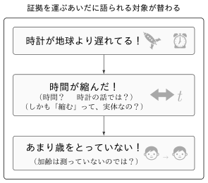
図中の数式

8.8 QG の具体的還元例
量子再構成スキームでは、記録、分岐感受性、対象状態差異、観測者側情報結合、比較貼り合わせ、運動記述操作可能性および法則記述操作可能性から、法則許容時間表現と観測者時間法則核を生成する。
外部時間を原始入力に含めない量子重力的再構成は、制約系、正準重力およびWheeler–DeWitt型の記述を背景にもつ[21, 5, 20]。量子重力における時間問題、内部時計および関係的観測量は、時間表現の生成条件と法則内使用資格を問う代表的研究対象である[42, 39, 53, 62]。
外部時間を除去しても、時間内容、記録順序、比較順序、観測者側情報結合および法則内使用資格は生成されない。内部自由度を時計として選択しても、その自由度の差異、記録、比較および観測者側情報結合から時間内容を生成しない限り、原始時間入力は内部時計へ置換されたまま残る。原始時間入力を制約式、関係的変化、観測量、初期境界、時間の矢、測定記録またはブラックホール情報の成果導出へ使用すると、その成果は物理時間成立資格を欠く時間内容への依存を継承する。数学的一貫性、予測性能および経験的適合は、この資格失効を補完しない。
QGスキームは、時計候補側材料、記録側保持、対象状態側差異、観測者側情報結合、比較閉包、正準観測者時間商、正準軌道関係、法則許容時間表現および法則出力決定性を同じ依存列上で生成し、量子重力の各成果が使用する時間内容の成立資格を判定する。
8.8.1 QG入力から観測者時間法則核まで
量子再構成スキームの入力は、時計側または時計候補側のトークン、記録側保持、分岐感受的記録構造、対象状態側差異、観測者側情報結合位置、比較貼り合わせ条件および運動記述段階のソース側三項関係から構成される。
この入力を

によって定める。生操作入力は外部時間を含まず、QG側ソース実現データム は、比較側到着写像、回復写像、記録保持、比較貼り合わせ、直接運動記述到着写像、ソース側ペア関係およびソース側三項関係を成分にもつ。

観測者側情報結合位置をとし、単一対象指定添字を とする。定義 8.5 のQGスキーム限定完全評価指定 を用いる。


QGの具体的還元例の生成列は次である。


![\displaystyle\longmapsto\mathsf{DynWit}_{o\mathchar 44\relax\allowbreak\zeta_{%
\mathsf{Sch}_{\mathrm{QG}}}}\left[\mathsf{RepEmb}^{\mathrm{dyn\mathchar 44%
\relax\allowbreak time}}_{o}\right]](math-S8/603d1b0ad70da6a358e38603d2c005a2d3c8bd1e1c18f8ed0538a724ff35b2c1.svg)


比較段階の対象は厳密操作可能性、運動記述対象と法則許容時間表現は運動記述操作可能性、観測者時間法則核と法則内使用資格は法則記述操作可能性を要する。
命題 8.60 (QGの具体的還元例における法則許容性).
QGスキーム限定完全評価指定について
が成立するとする。このとき、法則許容時間表現と観測者時間法則核

が生成される。任意の
に対する法則時間値は
である。
証明.
命題 8.61 (QG再構成の時間表現生成条件).
QGスキーム限定完全評価指定について、定理 8.31 の運動記述操作可能性条件が成立すると、法則許容時間表現が生成される。さらに
が成立すると、この時間表現は法則内使用資格を満たし、観測者時間法則核が生成される。
証明.
法則時間使用監査との接続. 量子重力的再構成における法則時間使用は、第7章の物理時間成立資格監査に従う。法則時間使用が用いる時間内容に必要なすべての生成構造が非時間的物理入力から生成され、法則演算および成果導出に先行して成立する場合、その時間内容は物理時間成立資格を満たす。評価指定に対するいずれかの生成段階が失効する場合、当該完全評価指定に対する全段階の同時成立は得られない。時間内容がその生成構造より前に法則演算または成果導出へ使用される場合、その時間内容は定義 7.10 の原始時間入力である。定理 7.11 により、この時間使用は物理時間成立資格を満たさない。命題 7.13 により、数学的一貫性、予測性能および経験的適合の成立は、この資格失効を補完しない。

8.8.2 外部時間なしの法則許容性
量子重力における時間問題は、外部時間を用いる法則記述と、背景時空を原始前提に置かない理論構成との緊張に加え、外部時間を除去した後も時間内容の生成を欠いたまま制約式、内部時計または関係的観測量へ時間的役割を負わせることで生じる。外部時間の除去は原始時間入力の一形態を消去するが、時計候補側差異、記録保持、比較順序、観測者側情報結合、正準観測者時間商および法則許容時間表現を生成しない。内部自由度を時計として選択する場合も、同じ生成列を満たさなければ、その内部時計は未生成時間内容を担う。
未生成時間内容が制約式または法則演算に入力されると、その時間変数は物理時間成立資格を満たさない。未生成時間内容から導かれる関係的変化、観測量、初期境界、時間の矢、測定記録およびブラックホール情報の各成果は、この資格失効を継承する。したがって、量子重力の時間問題は、外部時間の有無または時計変数の選択だけでは解消されず、時間内容の生成、法則内使用資格および成果への依存継承を同時に判定することを要する。
QGスキームでは、時計候補側材料、記録側保持、対象状態側差異、観測者側情報結合、比較閉包、正準観測者時間商、正準軌道関係、法則許容時間表現および法則出力決定性が同じ依存列上で成立することを要する。この依存列が時間変数を生成し、法則内使用資格を与え、原始時間依存の成果継承を排除する。
命題 8.62 (相対性・関係性・非原始性は不存在を含意しない).
ある対象が基準、観測者、状態、局所領域または他の対象との関係に依存することは、その対象の成立条件を与える。優先される代表が存在しないことは選択の非一意性を表し、絶対的でないことは基準独立な単独実体性の不成立を表し、原始的でないことは他の物理入力から生成される依存位置を表す。これらの各条件は、当該対象が関係的対象または生成対象として成立する可能性を保存し、当該対象の不存在を含意しない。
時間の不存在を主張する場合、否定対象となる時間内容の型と適用領域を特定し、その型に属して時間的役割を果たす対象が理論内に存在しないことを示す必要がある。瞬間、配置間関係、変化順序、履歴、発展または時計比較が時間的役割を果たす場合、独立した絶対時間実体の不採用と、時間構造全体の不存在は異なる命題である。
証明.
関係依存性、非一意性、非絶対性および生成依存性は、対象の成立条件または他の対象との関係を規定する。存在否定は、指定された型および適用領域に、その型に属する対象が存在しないことを述べる。したがって、前者から後者は導かれない。
定義 7.10 は、時間内容が生成以前に使用される場合を原始時間入力として判定する。系 7.15 は、時間内容を非時間的物理入力から生成した後に法則内で使用する順序を要求する。この生成順序では、時間内容は原始入力ではなく生成対象として成立する。したがって、非原始性は時間構造の不存在を含意しない。
複数の観測者、状態または局所領域に依存する時間表現も、比較規則、貼り合わせ条件および成立域が与えられる場合、関係的または局所的な時間構造として成立する。優先代表または大域表現の不成立は、局所的・関係的時間構造の不存在を含意しない。 ∎
命題 8.63 (時間創出・時間非存在言明に課される形式責務).
時間の創出を文字どおりに主張する理論は、非時間的物理入力から、時間順序を前提としない対象状態差異、差異を保持する記録、記録間の比較規則、観測者側情報結合、時間順序、時間表現および法則内使用資格へ至る生成経路を示し、使用する全時間内容から原始時間根を排除することを要する。
時間の非存在を文字どおりに主張する理論は、命題 8.62 に従い、相対性、関係性、非優先性、非絶対性または非原始性の主張と存在否定を分離する。そのうえで、否定する時間内容、時間順序、時間表現および法則時間の範囲を示し、それらに代わる形式構成を与え、代替構成に時間的依存根が残らず、後続成果も時間的依存根へ依存しないことを要する。「瞬間」「変化」「履歴」「前後」または「発展」を代替構成に用いる場合、それぞれの成立根拠を非時間的物理入力から生成することを要する。
この形式責務は、時間の創出、創発、回復または非存在を掲げる各理論に適用され、本稿の時間生成にも同じ強さで適用される。
証明.
系 7.15 により、時間内容の生成は法則演算および成果導出に先行する。定義 7.10 により、成立根拠構造より先に使用される時間内容は原始時間入力である。定理 7.11 により、原始時間入力は物理時間成立資格を満たさない。系 7.12 により、その依存は後続成果へ継承される。
したがって、時間創出の主張には、非時間的物理入力から使用時間内容までの生成経路と原始時間根排除を要する。時間非存在の主張には、否定対象の範囲、代替構成および代替構成からの時間的依存根排除を要する。名称の変更、変数の消去、関係への置換または時間的語彙の省略は、この形式責務を満たさない。 ∎
命題 8.64 (時間創出・時間非存在言明の解釈経路別判定).
第 7.3.14 小節に示したBarbour 1994 I資料には、次の言明がある。
原文（英語）：
change creates time
日本語訳：
変化が時間を創る。
原文（英語）：
It is argued that time as such does not exist but that instants, defined as complete relative configurations of the universe, do.
日本語訳：
時間そのものは存在しないが、宇宙の完全な相対配置として定義される瞬間は存在すると論じられる。
Barbour 1994 II資料には、次の言明がある。
原文（英語）：
time is truly non-existent in the kinematic foundations of both theories
日本語訳：
時間は両理論の運動学的基礎において真に存在しない。
三言明は、定義 7.117 の解釈別証拠照合経路に従い、言明と許容解釈ごとに判定する。
「変化が時間を創る」を、明示適用域におけるconfiguration差、順序、尺度、時計対応またはephemeris型parameterの構成として解釈する場合、対応する形式構成を直接記述するため、証拠効力越境数は0であり、多段階誤認は成立しない。この解釈は、資料内で使用される全時間内容の物理的生成を主張しない。
同じ言明を物理時間の完全生成として解釈する場合、realized history、path parameterまたは既存時間内容をその生成より前に用いる操作が、定義 8.19 の第1項に該当する。さらに、限定されたconfiguration構成を、全時間内容の生成、原始時間根排除および法則内使用資格を備えた物理時間と同一視する操作が第2項に該当する。両操作を直接依存で接続する解釈経路は二段階誤認を構成する。
「時間そのものは存在しない」および「時間は運動学的基礎において真に存在しない」を、absolute external timeの不採用またはrelative configurationの運動学的優先性に限定して解釈する場合、証拠効力越境数は0であり、多段階誤認は成立しない。これらを物理時間一般の不存在へ拡張する解釈は、限定された対象と適用域から異なる対象と適用域へ存在否定の効力を移すため、同定義の第4項に該当する一段階誤認を構成する。Barbour 1994 I・II資料に存在する計39時間内容と時間依存移送は、この拡張解釈と両立しない。
証明.
第 7.3.11 小節および備考 7.159 により、三言明の原文、資料帰属および文脈が確定する。命題 7.190 により、Barbour 1994 I資料の18時間内容とII資料の21時間内容はすべて原始時間根である。個別命題 S.305および S.316により、Barbour 1994 I資料の25成果は証拠到達のみの9成果と原始時間根依存の16成果に分かれ、II資料の26成果は証拠到達のみの8成果と原始時間根依存の18成果に分かれる。両資料とも生成成果と根追加後未到達成果は空集合であり、証拠到達のみの成果の成立も時間内容の生成を含意しない。
限定されたconfiguration構成を指す解釈は形式成果の効力域に留まり、証拠効力境界を越えない。完全な物理時間生成を指す解釈は、原始時間根の生成前使用と、部分構成から完全生成への同一視を直接接続する。物理時間一般の不存在を指す解釈は、absolute external timeまたは運動学的基礎の限定域から、物理時間一般へ存在否定を移す。したがって、各経路の段階数はそれぞれ0、2、1である。 ∎
命題 8.65 (熱時間言明の解釈経路別生成責務判定).
第 7.3.14 小節に示したConnes–Rovelli 1994資料には、次の言明がある。
原文（英語）：
there is no preferred time flow
日本語訳：
優先される時間流は存在しない。
原文（英語）：
thermal time … defines the physical time
日本語訳：
熱時間は物理的時間を定義する。
「優先される時間流は存在しない」を、外部から指定されたstate-independent preferred flowの不在に限定して解釈する場合、証拠効力越境数は0であり、多段階誤認は成立しない。同じ言明を全てのphysical time flowの不在へ拡張する解釈は、限定された流の不在を異なる対象と適用域へ移すため、定義 8.19 の第4項に該当する一段階誤認を構成する。
「熱時間は物理的時間を定義する」を、thermal stateがmodular automorphism flowを選ぶ数学的構成、またはそのflowへphysical-time interpretationを付与する公準に限定して解釈する場合、証拠効力越境数は0であり、多段階誤認は成立しない。この解釈は、物理時間成立資格の定理的導出を主張しない。
選択された状態依存flowを、全生成条件と法則内使用資格を備えた物理時間と同一視する解釈は、部分構成を後続段階の成立へ移すため、同定義の第2項に該当する一段階誤認を構成する。さらに、real parameter、known Hamilton time、proper time、geometric timeまたはFRW timeを生成前入力として用いた構成から、非時間的物理入力による物理時間の完全生成を主張する解釈は、第1項と第2項を直接依存で接続する二段階誤認を構成する。
証明.
第 7.3.11 小節および備考 7.159 により、二言明の原文、資料帰属および文脈が確定する。命題 7.171 は、該当資料の時間内容全体が原始時間根であることを与える。定理 7.190 により、監査生成時間内容は空である。また、個別命題 S.328により、同資料の37成果は、証拠到達のみの16成果と原始時間根依存の21成果に分かれる。
命題 7.137 および系 7.138 により、状態から時間流を選択することは、入力時間内容の生成履歴、比較構造および成立条件を供給しない。命題 7.172 により、熱時間の形式成果と完全時間生成の範囲は一致しない。
限定されたflow選択および解釈公準は、その形式成果の効力域に留まる。部分flowを完全な物理時間成立へ移す経路は第2項の一段階、生成前時間根を用いた構成を非時間的入力による完全生成として扱う経路は第1項と第2項の二段階となる。全てのphysical time flowの不在へ拡張する経路は第4項の一段階となる。したがって、許容解釈に応じて段階数は0、1または2となる。 ∎
命題 8.66 (二部分系分離による時間創発言明の解釈経路別判定).
第 7.3.14 小節に示したKiefer 2009資料には、次の言明がある。
原文（英語）：
Time is absolute in standard quantum theory and dynamical in general relativity.
日本語訳：
標準量子論では時間は絶対的であり、一般相対論では動的である。
原文（英語）：
Time emerges from the separation into two different subsystems
日本語訳：
時間は二つの異なる部分系への分離から現れる。
第二の言明が、二部分系への分離により、物理法則が使用できる時間内容の生成が成立することを指示する場合、命題 8.63 の時間創発に関する形式責務が生じる。

![\displaystyle\varnothing\mathchar 44\relax\allowbreak[35];\varnothing\mathchar
4%
4\relax\allowbreak\{5\mathchar 44\relax\allowbreak 6\mathchar 44\relax%
\allowbreak 7\mathchar 44\relax\allowbreak 8\mathchar 44\relax\allowbreak 13\}%
\mathchar 44\relax\allowbreak](math-S8/865e1ee39565910328f14c10b5004da9c15edd6dfe45b27450a3cafb03aacc8f.svg)
第一の言明を、標準量子論の外部背景parameterと一般相対論の力学的時空変数との形式的役割差に限定して解釈する場合、証拠効力越境数は0であり、多段階誤認は成立しない。
第二の言明を、二部分系への分離による半古典的時間parameterまたは内部時計候補の構成に限定して解釈する場合も、資料固有の近似構成を直接記述するため、証拠効力越境数は0である。同じ言明を物理時間の完全生成として解釈し、部分系parameterを全時間内容の生成、法則内使用資格および原始時間根排除と同一視する場合、定義 8.19 の第2項に該当する一段階誤認を構成する。さらに、生成前の時間根を用いる半古典構成を非時間的物理入力による完全生成として扱う解釈は、第1項と第2項を直接依存で接続する二段階誤認を構成する。
基本方程式に外部時間が現れないことを物理時間一般の不存在へ移す解釈は、対象と適用域を移すため、同定義の第4項に該当する一段階誤認を構成する。
証明.
命題 7.169 は、二言明の原文、日本語訳、資料帰属および原典位置を確定し、標準量子論と一般相対論における時間役割の対比、二部分系時間、完全時間生成、原始時間根排除および法則内使用資格を相異なる証拠効力域へ分離する。定理 7.190 により、監査生成時間内容は空集合であり、資料内の全時間内容が原始時間根である。また、Kiefer 2009資料に固有の命題 S.539により、15成果は証拠到達のみの5成果と原始時間根依存の10成果に分かれる。命題 7.49の四類分割から、監査生成成果集合は空であり、全15成果が生成初期集合からの到達域外に属する。
命題 8.63 は、時間創発を文字どおりに主張する場合、非時間的物理入力から時間内容、時間順序、時間表現および法則内使用資格までの生成経路と、全時間内容からの原始時間根排除を要求する。同資料では監査生成時間内容が存在せず、全成果が原始時間根へ依存するため、この形式責務は充足されない。
半古典的時間parameterまたは内部時計候補への限定解釈は、部分的形式成果の効力域に留まる。部分構成を完全な物理時間成立へ移す経路は第2項の一段階、生成前時間根の使用と完全生成への同一視を接続する経路は第1項と第2項の二段階、外部時間の不在を物理時間一般の不存在へ移す経路は第4項の一段階となる。したがって、許容解釈に応じて段階数は0、1または2となる。 ∎
命題 8.67 (時間の基礎性言明の解釈経路別生成資格判定).
第 7.3.14 小節に示したSmolin 2018/2020資料には、次の言明がある。
原文（英語）：
I take the opposite view, that time is fundamental.
日本語訳：
私は、時間は基礎的であるという反対の見解を採る。
この言明が、時間内容を生成以前から物理法則の成立根拠または法則入力として使用できることを指示する場合、その時間内容は定義 7.10 の原始時間入力となる。定理 7.11 により、その時間内容は物理時間成立資格を満たさない。


「時間は基礎的である」を、時間の理論上の優先性または還元不能性を述べる分類に限定して解釈する場合、証拠効力越境数は0であり、多段階誤認は成立しない。この分類は、時間内容の生成先行資格を主張しない。
同じ言明を、生成以前の時間内容を物理法則の成立根拠または法則入力として使用できるという承認として解釈する場合、その時間内容は原始時間入力となる。この解釈は、定義 8.19 の第1項に該当する一段階誤認を構成する。局所到達判定と完全判定のいずれにも生成時間内容は存在せず、資料固有の27時間内容はすべて原始時間根として残り、28成果中21成果が原始時間根へ依存する。
証明.
命題 7.169 は、時間の基礎性、資料固有時間内容全体の生成、原始時間根排除および法則内使用資格を相異なる証拠効力域へ分離する。命題 7.171 により、言明の原文、日本語訳、資料帰属および原典位置が確定し、厳密生成時間内容集合は空であり、資料固有の27時間内容すべてが原始時間根である。局所到達判定でも到達する時間内容はなく、27時間内容が残存原始時間根となる。命題 7.136 により、責務原子は127件であり、28成果中21成果が原始時間根依存である。命題 S.626の資料別成果分類と命題 7.49の四類分割により、監査生成成果集合は空であり、証拠到達のみの7成果と原始時間根依存の21成果を合わせた全28成果が生成初期集合からの到達域外に属する。
系 7.15 により、時間内容の生成は法則演算および成果導出に先行する。同資料では、局所到達判定でも完全判定でも生成時間内容は存在しない。したがって、27時間内容はいずれも生成済み時間内容にはならず、28成果中21成果の原始時間根依存が残る。
理論上の優先性または還元不能性へ限定する解釈は分類の効力域に留まり、段階数は0である。生成以前からの法則使用資格を指示する解釈は原始時間入力を法則入力へ置くため、第1項の一段階誤認となる。いずれの経路でも、物理法則に使用する時間内容の成立資格は、非時間的物理入力からの生成経路によって判定される。 ∎
命題 8.68 (法則許容性としての時間問題).
QGスキーム限定完全評価指定について、外部時間が生操作入力に含まれない場合も、法則記述段階の成立条件は
である。当該時間内容の使用に必要な生成構造の成立前に時間内容を制約式、法則演算または成果導出へ使用すると、その時間内容は原始時間入力となり、その時間内容へ依存する成果は資格失効を継承する。
証明.
外部時間の入力除外は、生操作入力の成分条件である。定義 5.102 による法則記述操作可能性は、運動記述操作可能性と法則条件群の同時成立を要する。外部時間を除去しても、法則記述操作可能性を構成する生成条件は補われない。
命題 8.69 (QGの具体的還元例における破綻局在化).
QGスキーム限定完全評価指定の生成条件が失効する場合、各極小失効位置は、比較、表現、連続近似、運動記述、法則記述または微分の六破綻系列へ分類される。QG固有の対応は次である。
-
(1)
記録系列、対象状態同定および比較貼り合わせに関わる比較段階または表現段階の条件が形成済みかつ評価可能であるとき、その失効は対応する段階の破綻位置トークンへ分類される。
-
(2)
第3条件の評価準備が成立する領域では、記録セル幅超過は
によって判定される。
-
(3)
運動記述段階の失効の有無は
によって判定される。
-
(4)
法則記述段階の失効の有無は
によって判定される。
-
(5)
微分段階の失効の有無は
によって判定される。
![\bigvee_{i\in I_{\mathsf{law}}^{\mathrm{fail}}}\mathsf{FL}_{i}\left[\mathsf{Ev%
}_{\mathsf{Sch}_{\mathrm{QG}}}\right]](math-S8/cd77933b6406471874f754e0c0ee83f18bba0b59d517b27a7505c53505b2c2ad.svg)
8.8.3 宇宙論的初期境界と時間生成条件
宇宙論的初期境界を時間変数で指定するとき、その時間変数の生成が初期境界の法則記述に先行しなければ、宇宙の始点、始点以前、始点以後および時間の向きは、成立根拠を欠く時間順序によって記述される。時間の起源を記述する理論が、起源の記述に未生成時間を使用すると、説明対象である時間順序を、その生成に先立って説明入力として用いることになり、初期境界から導かれる成果は原始時間依存を継承する。
量子宇宙論と初期条件の問題は、宇宙論的初期境界と時間の向きづけを対象とする[34, 56]。QGスキームは、局所表示、記録、対象状態差異および観測者側情報結合から、比較閉包、正準観測者時間商、法則許容時間表現および観測者時間法則核を生成する。生成成立前に初期境界へ時間変数を適用した場合は原始時間入力として資格失効を判定し、生成成立後に適用した場合は生成済み時間表現上の境界として判定する。
命題 8.70 (宇宙論的初期境界における時間生成条件).
QGスキーム限定完全評価指定が宇宙論的初期境界を対象とするとする。運動記述操作可能性が成立すると、初期境界の記述に用いる法則許容時間表現が生成される。法則記述操作可能性が成立すると、この時間表現は法則内使用資格を満たし、観測者時間法則核が生成される。
証明.
命題 8.61 は、QGスキーム限定完全評価指定に対し、運動記述操作可能性による法則許容時間表現の生成と、法則記述操作可能性による法則内使用資格および観測者時間法則核の生成を与える。宇宙論的初期境界は対象指定によって同じ評価指定へ属する。したがって、同命題の生成条件が初期境界の記述に適用される。 ∎
命題 8.71 (宇宙論的初期境界における時間失効の局在化).
命題 8.70 のいずれかの生成条件が失効する場合、各極小失効位置は六破綻系列の対応する破綻位置トークンへ分類される。
証明.
命題 8.69 は、QGスキーム限定完全評価指定の各極小失効位置を六破綻系列へ分類する。宇宙論的初期境界は同じ評価指定の対象指定に属するため、同命題の分類が適用される。 ∎
8.8.4 極限重力領域・観測量・時間の矢への帰結
ブラックホール情報問題では、情報の保存、放射、記録、外部観測者および内部領域の記述が、放射前後、蒸発過程および情報回復を同じ時間発展上で比較する。ブラックホールエントロピー、ホーキング放射、予測可能性および放射中の情報復元は、その代表的研究である[10, 35, 36, 54]。この時間発展が未生成時間内容を使用する場合、情報保存、情報損失または情報回復という成果は原始時間依存を継承する。QGスキームでは、記録、比較、観測者側情報結合、法則許容時間表現、尺度付き有効域および失効位置を生成し、情報問題に用いる時間発展の物理時間成立資格を判定する。
観測量問題では、内部自由度を時計として選び、他の量との関係を記述しても、その時計自由度の差異、記録、比較および観測者側情報結合から時間内容が生成されたことにはならない。未生成の内部時計に対して定義された関係的変化および観測量値は、原始時間依存を継承する。対象状態差異、観測者側情報結合、正準観測者時間商、正準観測量関数族および法則許容時間表現の同時成立が、観測量値へ法則内使用資格を与える。制約系、正準量子重力および関係的観測量は、その代表的研究である[21, 20, 62]。
時間の矢は、生成済み時間表現に対する追加の向きづけ条件である。未生成時間上に低エントロピー初期条件または粗視化履歴の向きを置くと、向きづけが依存する前後関係の物理時間成立資格は未成立のまま残る。記録保持、比較閉包、観測者側情報結合および粗視化履歴が生成済み時間表現上で成立するとき、熱力学的向きづけ、宇宙論的向きづけおよび記録の向きづけが評価される。宇宙論的初期条件、特異性および量子宇宙論の境界条件は、その代表的研究である[56, 34]。
量子測定記録に測定前後、記録時点またはデコヒーレンス過程を割り当てるとき、その順序を担う時間内容が未生成であれば、測定記録とデコヒーレンス成果は原始時間依存を継承する。対象状態差異、記録側保持、観測者側情報結合および法則許容時間表現の同時成立が、測定記録を時間づける。測定過程の数学的定式化とデコヒーレンスは、その代表的研究である[71, 74]。
命題 8.23 は、相対論的時計差を未構成の時間実体の伸縮、遅速または変形として説明する形式を時間伸縮説の二段階誤認として分類する。原子時計差、分子振動周期差、共有結合振動系列、電子状態遷移、散乱事象および崩壊事象は、由来系列、由来記録、由来差異および由来結合が時間表現を生成する物理的担体を与える。

重力条件、幾何条件および媒体条件は、原子時計、分子振動、共有結合振動、電子状態遷移、散乱検出および崩壊検出が与える物理的担体を変調する。この変調は、役割担体実現、記録保持、比較貼り合わせ、対象状態識別、観測者側情報結合、軌道関係および法則出力決定性に対する変化として分類される。
通常物理で固有時差として表される重力条件下の原子時計差および周期差は、生成済み法則許容時間表現間の比較差である。命題 8.32 により、時計差と周期差は、由来サイクル数差と生成済み表現座標差から得られる周波数表現の差へ帰着する。時間実体の伸縮は、この比較差の生成機構ではない。
電子状態遷移、散乱事象および崩壊事象を時間変数上の事象列として使用するには、その時間変数の生成が事象列の法則記述に先行することを要する。電子状態遷移は対象状態差異と軌道関係の成立に寄与し、散乱事象と崩壊事象は検出記録、対象状態差異および観測者側情報結合の成立に寄与する。
極限重力領域では、由来系列の識別、由来記録と対象状態差異の対応保持、由来正準軌道関係または法則出力決定性が失効し得る。命題 8.69 により、各極小失効位置は六破綻系列へ分類される。
時空創発の諸理論に対して、QGスキームは、創発後の時空的記述で用いる時間表現の生成条件、尺度付き有効域および失効位置を要求する。光と自由落下からの時空構成、因果集合、ホログラフィーならびにエンタングルメントと幾何の接続は、その代表的研究である[22, 11, 45, 64]。
宇宙定数およびダークエネルギーに関わる記述では、膨張史、観測記録、距離尺度、時間値および法則表現が同じ生成済み時間表現の上で結合される。真空エネルギー値、物質成分および場の内容は理論別入力に属し、その入力から時間比較、運動記述および法則許容時間表現を生成する条件が監査対象となる。宇宙定数問題とダークエネルギー観測は、その代表的研究である[72, 60, 57]。
命題 8.72 (生成時間と破綻分類による量子重力成果の安全な再使用).
命題 8.61 および命題 8.60 の条件が成立する領域では、生成済み法則許容時間表現、観測者時間法則核、法則時間値、正準観測者時間商、正準対象状態商、正準軌道関係、グラフ軌道および正準観測量関数族を使用できる。制約式、内部時計、関係的観測量、宇宙論的初期境界、時間の矢、量子測定記録、デコヒーレンス、ブラックホール情報、時空創発、宇宙定数およびダークエネルギーに関する成果は、それぞれの理論別成立条件と、依存する時間内容の生成条件が成立する領域で使用できる。
命題 8.69 が分類する各極小失効位置は、最初に修復すべきQG構成要素または成立域を制限すべき条件を定める。比較段階の失効には時計候補側材料、記録側保持、対象状態側差異、観測者側情報結合、比較規則または比較貼り合わせを修復する。表現段階または連続近似段階の失効には正準観測者時間商、法則許容時間表現、記録セル幅、比較域または近似成立尺度域を修復する。運動記述段階、法則表現段階または微分段階の失効には、正準軌道関係、正準観測量関数族、法則評価データム、法則出力決定性または微分評価指定を修復する。修復が成立する場合、修復後の入力から、関係的変化、観測量、初期境界、時間の矢、測定記録、デコヒーレンス、ブラックホール情報、創発後時空記述および宇宙論的法則成果を依存順に再生成または再計算する。全領域で当該段階条件が成立しない場合、成果の使用域を当該条件が成立する領域へ制限する。
命題 8.68 により、外部時間の除去後も時間内容の生成条件と法則記述操作可能性を要する。破綻分類は、外部時間入力、内部時計の生成不足、比較貼り合わせ、時間表現、運動記述、法則出力決定性および微分整合性の失効を対応する各極小失効位置へ分類する。これにより、量子重力における時間問題を、修復対象または成立域制限を伴う段階別問題へ分解できる。
記録保持、対象状態同定、比較貼り合わせ、記録セル幅、関係的観測量、初期境界、測定記録、連続近似または微分評価に含まれる誤差原因を修復した場合、その修復が精度に与える効果は、下流成果を再生成または再計算した結果に対する精度評価によって判定する。したがって、量子重力成果の使用判断は、成立領域内での保持と、各極小失効位置からの修復または成立域の制限へ分かれる。
証明.
命題 8.61 により、運動記述操作可能性は法則許容時間表現を生成し、法則記述操作可能性は時間表現へ法則内使用資格を与えて観測者時間法則核を生成する。命題 8.60 および定理 8.31 により、正準観測者時間商、正準対象状態商、正準軌道関係、グラフ軌道、正準観測量関数族、法則許容時間表現および法則時間値が生成される。命題 8.21 により、各成果が依存する時間内容と成立根拠構造が法則演算および成果導出に先行して生成される場合、その時間入力は物理時間成立資格を満たす。
命題 8.69 と定義 6.17 により、各極小失効位置より下流の条件および成果は上流条件へ依存する。各極小失効位置に属する入力または規則の修復が成立する場合、修復後の入力から下流成果を依存順に再生成または再計算する。全領域で当該段階条件が成立しない場合、当該条件が成立する領域へ使用域を制限し、その領域内で生成された成果を使用する。
命題 8.68 は、外部時間の除去と時間内容の生成を分離し、法則記述操作可能性によって法則内使用資格を判定する。命題 8.70 および命題 8.71 は、宇宙論的初期境界についても同じ生成条件と失効分類を与える。したがって、外部時間入力、内部時計、比較貼り合わせ、時間表現、運動記述、法則出力決定性および微分整合性の各問題を、各極小失効位置に従って分離できる。
誤差原因が記録保持、対象状態同定、比較貼り合わせ、記録セル幅、関係的観測量、初期境界、測定記録、連続近似または微分評価に属する場合、その原因を修復した入力から下流成果を再生成または再計算し、再計算結果へ精度評価を適用できる。以上により、成立領域内での量子重力成果の保持、各極小失効位置からの修復または成立域制限の順序および条件付き精度評価が成立する。 ∎
8.9 時間担持量の生成順序と分野横断帰結
命題 8.73 (時間担持量の生成後使用資格).
第 7.3.16 項の十二対象について、時間担持量の次元、単位、定数性、不変性または代数関係は、その量が使用する時間内容の物理的生成を与えない。各時間担持量の物理法則内使用は、必要な時間内容と物理時間成立資格が法則演算および成果導出より先に生成され、理論固有の成立条件が満たされる領域で成立する。
対象名と時間次元の有無を抽出条件とし、原典の形式関係に現れる生成依存順序を監査判定の根拠とする。発光、伝播、受光、記録、原子遷移、振動子、粒子崩壊、電磁場、重力場、共鳴線および測定装置の物理関係は、LCTRの生成・監査構成における理論別入力として保持される。時間内容の生成後、各量の定数性、不変性、率、寿命、線幅または周波数に関する述語は、生成済み時間表現、許容変換、測定手続および理論固有の成立域に対して適用される。
証明.
命題 7.178 により、時間担持量の次元、単位または代数関係から、その量が必要とする時間内容の生成は導かれない。定理 7.203 により、物理法則時間変数の物理的成立には、時間内容と成立根拠構造の生成が法則演算および成果導出より先に必要である。
注意 7.179 により、時間内容と物理時間成立資格が生成され、理論固有の成立条件が満たされる場合、十二対象を含む既存の形式関係は生成後の適用域で用いられる。したがって、物理関係の理論別入力としての保持と、時間担持量の生成後使用資格が同時に成立する。 ∎
命題 8.74 (光速度不変性の物理的成立域).
光の発光、伝播、受光および記録の物理関係は理論別入力として保持される。光速度の数値表現は空間差と時間差を使用するため、その時間差を与える時間内容と物理時間成立資格を必要とする。
特殊相対論における光速度不変性の量化域は、生成済み法則許容時間表現、空間表現、慣性観測者間の許容表現変換、時計・長さ標準、測定手続および光伝播関係が成立する領域である。局所慣性系で測定される真空光速度の一定性と、物質、信号または因果的影響の局所伝播上限は、この領域で保持される。この成立から、任意の座標光速度、宇宙論的後退速度、位相速度または情報を運ばない表示量に対する無条件の全称命題は導かれない。物理担体と比較構成が異なり、異なる生成済み時間表現が得られる場合、それらの表現間で同一の数値的不変性が成立することは自動的には導かれない。座標変換、計量、時計・長さ標準および適用域を揃えて判定する。これらの条件が成立する領域では、光速度の数値表現と不変性を特殊相対論の成果として使用できる。光速度を時間内容の生成より先に時間尺度または同期規則の成立根拠として使用する依存は、生成前配置および派生量逆向き前提化として判定される。

証明.
命題 7.182 により、光速度の形式軌には、生成前配置、生成段階省略および派生量逆向き前提化が成立する。命題 7.180 は、光の物理的伝播、速度表現が使用する時間内容の生成順序、局所慣性系の真空光速度の一定性および異なる速度型・基準系・適用域を分離する。命題 8.44 により、ローレンツ変換は生成済み時間表現と空間表示の間の許容表現変換として成立する。命題 8.50 により、各成果が依存する時間内容と各段階条件が成立する領域では、特殊相対論の変換結果および微分量を使用できる。
以上により、光の物理的伝播関係を理論別入力として保持したまま、光速度の数値表現と不変性の量化域を、生成済み時間表現、許容変換および理論固有の成立条件によって定める。 ∎
系 8.75 (時間担持十二対象の分野横断帰結).
時間担持十二対象に対する二軌四判定の96判定欄では、形式軌の21欄で監査判定が成立し、言明軌の成立欄は0欄である。残る75欄では、補遺収録証拠から当該判定の成立が得られない。
形式軌で成立する21欄は、生成前配置9欄、生成段階省略7欄および派生量逆向き前提化5欄から成る。時間属性再帰属の成立欄は0欄である。この分布により、各対象の原典形式が持つ依存順序ごとに失効位置が分離される。
8.10 生成時間と破綻分類による代表理論成果の横断総合
命題 8.76 (限定成果の無制限継承の分野横断証拠照合).
命題 8.20 の一般適用を、熱力学、宇宙論、量子測定、量子重力、相対論、生命適用および時間担持量の形式証拠と言明証拠によって照合する。
第 7.3.18 項は、監査72資料すべての形式証拠と言明証拠を、第7章の監査方法または代表論証へ対応づける。本命題はその全資料接続から分野横断的な直接依存経路を取り出し、同型・近縁資料を含む証拠境界を代表経路ごとに総合する。
巨視的非対称性、赤方偏移と模型適合、デコヒーレンス、外部時間の消去と内部時計、時計指示差・周波数差・粒子寿命差ならびに時間担持量の関係式が成立する場合、その成立は各成果固有の証拠効力域に属する。
これらの限定成果だけから、時間内容の物理的生成、法則時間の物理的成立資格、物理担体から独立した時間属性、生命過程または主観的経験についての直接実証、時間そのものの始点・不存在・創発、あるいは時間担持量が依存する時間根の生成は成立しない。これらの主張は、各主張固有の独立証拠または妥当な導出を要する。
相対論的時計差を未構成の時間実体の属性変化へ移す文字どおりの解釈は二段階誤認を構成し、そこから生命過程の直接実証へ移す解釈は三段階誤認を構成する。原典本文が比喩性、字義どおりの時間変形を指示しないこと、および実際の参照対象を同じ説明範囲で明示する言明には誤認が成立せず、裸の時間属性表現として読む解釈は一段階誤認、字義どおりの時間属性として読む解釈は二段階誤認を構成する。熱力学、宇宙論、量子測定、量子重力および時間担持量についても、分野に一つの段階数を与えず、実在する原典言明の許容解釈ごとに、証拠効力境界を越える直接依存だけを数える。
時間反転対称性、低エントロピー境界条件および宇宙論的時間方向に関する時間の矢の言明は、それぞれが記述する非対称性または向きづけの証拠効力域で保持される。時間の矢は、生成済み時間表現への後続の向きづけ条件であり、この依存順序の範囲にある解釈経路が通過する証拠効力境界の数は0である。
Feynmanによる「宇宙の少なくともわれわれの部分」の始まりに関する言明を、宇宙論模型または領域の始端として読む解釈経路が通過する証拠効力境界の数は0である。同じ言明を、物理時間一般の始点、不存在または無意味性へ移す解釈経路は、模型または領域の境界から時間一般の存在域へ一つの証拠効力境界を通過し、一段階誤認を構成する。原典の「より以前の時間は意味を持つか」という疑問文は、物理時間一般の不存在または無意味性を結論していない。
Heisenberg 1958資料が紹介するAugustineの議論は、時間が世界とともに創造され宇宙以前には存在しなかったと述べる。Heisenberg自身は、時間の創造を述べるcreatedが前後関係を先取りするため、「時間が創造された」という句を合理的に定義できないと分析する。この分析は、時間の始点または創造を述べる言明が、その言明操作自体に時間関係を用いる自己依存を直接指摘する。時間創造言明の成立には、創造前後を時間に依存せず識別する生成関係が必要である。
Riessらが導いた遠方超新星の距離超過と、Perlmutterらが導いた超新星標本と平坦な物質のみの宇宙模型との不適合は、それぞれの観測、補正、較正、推定および模型適合の証拠効力域で保持される。これらの成果を宇宙史全体、時間内容の生成または物理時間一般の存在域の直接実証へ移す解釈は、実在する言明または説明がその移行を行う場合に、その解釈経路上の証拠効力境界を構成する。この移行はRiessらまたはPerlmutterらの当該原典からは導かれない。
Bunn–Hogg、LewisらおよびPeacockによる宇宙膨張語彙の訂正は、観測される赤方偏移を、膨張空間という独立した物理担体の作用へ帰属せず、測地線、局所的な相対運動または時空幾何の関係として記述する。分野横断監査におけるこれらの役割は、限定成果から時間存在論または独立担体へ移る経路との対照を与える訂正証拠である。
Bailey et al. 1977資料のミューオン寿命測定と相対論的予測との一致は、粒子寿命、測定条件および採用した理論前件の証拠効力域で保持される。特殊相対論を前件として負ミューオン静止寿命を推定する経路では、同じ推定値を特殊相対論の独立検証とCPT不変性の無条件検証へ同時に継承しない。
Feynman 1995資料では、核遷移と周波数偏移の説明から、全物理過程への一般化、人の生活・加齢への適用、および時間流属性への記述が同一資料内で連続する。Narlikar 2010資料では、崩壊天体からの信号、赤方偏移および受信待時間の説明から、二主体に対する時間流率差へ記述が移る。前者は物理過程の形式的一般化と生命過程の直接実証の境界を、後者は信号・波長関係と物理担体から独立した時間流属性の境界を具体化する。時計、信号、周波数または粒子寿命の限定成果は、各境界後の主張に固有の証拠を追加しない。
von Neumann 1932資料は、非定常波動関数と量子発展の入力として時間を明示する。この時間入力を用いる量子形式の数学的一貫性、予測性能または経験的適合は、時間を非時間的物理入力から生成しない。同資料は、観測者が主観的知覚を得たという型の経験言明と、物理量が値をもつという型の言明を区別する。この言明は主観的知覚を対象に含むが、主観的時間経験の変化の直接測定を与えない。Zurek 2003資料の系環境相互作用、環境相関、干渉抑制およびポインター構造は、デコヒーレンスの証拠効力域で保持される。Adler 2003資料は、限定されたデコヒーレンス成果と量子測定問題全体の解決を分離する訂正証拠であり、Schlosshauer 2005資料は、両者の含意が確定済みであると扱わない留保証拠である。当該四資料が与える証拠経路は、外部時間入力、デコヒーレンス成果、単一結果選択、量子測定問題全体の解決および時間内容生成を相異なる効力域へ分離する。別の実在言明がこれらの効力域間を移行する場合、その直接依存ごとに証拠効力境界を数える。
量子重力では、外部時間パラメータの消去、内部時計の選択、状態依存流、二部分系時間、関係的再記述および物理時間の完全生成を相異なる成果として扱う。Barbour 1994 I・II、Connes–Rovelli 1994、Kiefer 2009およびSmolin 2018/2020の言明は、限定された形式成果または理論上の分類として読む解釈経路では、その証拠効力域で保持される。同じ言明を物理時間一般の創出・不存在、全時間内容の完全生成、原始時間根の全排除または生成以前からの法則使用資格へ移す解釈経路では、既存の解釈経路別判定に従って一段階または二段階の誤認を構成する。DeWitt、Isham、Kuchař、Page–WoottersおよびRovelliによる時間問題の記述、候補構成および関係的成果は、問題の所在と部分的形式成果を与える証拠として保持される。とりわけRovelli 2002資料の関係形式は、力学予測を部分可観測量間の関係として表し、特定の部分変数を時間として選ばず、発展語彙を基本構造に置かない。この成果は、関係を物理的に実現する時計、記録、比較、順序、尺度および法則内使用資格を非時間的物理入力から生成しない。外部時間を形式から除く責務と、物理時間を生成する責務は、異なる証拠効力域に属する。
操作的構成では、Bridgman 1927が時間測定の基礎操作と時計構成仕様の不足を明示する。Ehlers–Pirani–Schild 1972は、自身の光線・自由落下粒子による構成で時計を基本道具から除き、測定操作を派生させる。先行するSyngeの手法での計時公理の原子時計解釈と、EPS再構成後の重力時間・原子時間等値の追加経験公準は区別される。これらの効力は、構成不足の指摘、構成順序の変更および条件付きの構造成果にある。問題の明示、原始道具の除去または派生的操作への移行を、全時間内容の生成完成または法則時間の成立資格へ拡張する仮定的解釈は、局所・部分段階から後続段階への証拠効力越境を構成する。
ブラックホール熱力学・放射・情報では、Bekenstein 1973の形式的類比と予想、Hawking 1975の放射成果と半古典近似境界、Hawking 1976の古典時空背景および時間Fourier成分、Page 1993の模型依存の第一推測を、それぞれ原典が与える効力域で保持する。面積増大、放射スペクトル、蒸発時間または情報出現の計算成功は、それらが先行使用する時間内容の生成、背景時空の物理的成立またはブラックホール情報問題全体の解決を補完しない。限定された計算成果をこれらの後続主張へ移す解釈経路には、移送先ごとの独立証拠または妥当な導出を要する。
双対性・もつれ・時空創発では、Maldacena 1998の双対性予想、Ryu–Takayanagi 2006の面積則提案と定量比較上の限定、Van Raamsdonk 2010のもつれと空間連結性の関係を、それぞれの形式成果として保持する。境界・バルク対応、極小曲面対応または空間連結性の説明を、時間変数の物理的成立資格、時空生成機構の完成または物理時間一般の生成完成へ移す解釈は、形式対応の成立域から生成責務への証拠効力越境を構成する。
各分野で成立した数学的一貫性、予測性能、模型適合および経験的適合は、それぞれの証拠効力域内で保持される。時間内容を非時間的物理入力から生成し、成立域と失効位置を監査すると、既存成果の安全な再使用域が定まる。
証明.
命題 7.142、 命題 7.143 および系 7.144 は、時間方向の成立と時間内容の生成を分離する。命題 7.154 は、宇宙論模型または領域の始端と物理時間一般の存在域を分離し、原典の疑問文を結論へ変換せずに解釈経路ごとの境界通過数を定める。命題 7.155 は、観測、推定、模型適合および直接実証の証拠型を分離する。命題 7.176 および系 7.177 は、宇宙膨張語彙の訂正が明示する形式的効力域と時間生成監査を分離する。命題 7.133、 命題 7.134、 系 7.135 および命題 7.132 は、外部時間入力、主観的知覚に関する経験言明、主観的時間経験の直接測定、デコヒーレンスの成立域、単一結果選択、量子測定問題全体の解決および法則時間の生成を分離し、訂正証拠と留保証拠の役割を定める。
命題 7.172、 命題 7.170 および命題 7.169 は、隣接時間プログラムの限定成果、関係形式からの特権時間除去、外部時間除去と物理時間生成の責務差、時間の基礎性および完全時間生成の証拠効力域を分離する。命題 8.64、 命題 8.65、 命題 8.66 および命題 8.67 は、各実在言明の許容解釈ごとに証拠効力境界の直接依存数を定める。
第 7.3.18 項は、以上の代表経路だけでなく、監査72資料すべてについて言明要点、解釈可能性、形式証拠との条件付き照合および証拠効力境界を第7章の監査方法または代表論証へ接続する。小節 7.3.1、 7.3.8 および 7.3.9 は、操作的構成、ブラックホールおよび時空創発の形式証拠に残る原始時間根と成果依存を与える。
命題 7.178 および命題 8.73 は、時間担持量の関係式と、その時間根の生成後使用資格を分離する。命題 7.185、 命題 7.184、 命題 7.193 および命題 8.59 は、物理担体の直接測定、時間属性への帰属および生命適用の直接実証を分離する。
定理 7.190 により、監査72資料のすべてに原始時間根と原始時間根依存成果が存在する。以上から、各限定成果の証拠効力域と、時間内容の生成、時間資格、時間属性、生命適用、時間存在論および時間担持量の時間根との間に証拠効力境界が成立する。各資料の形式構成、言明および許容解釈が作る経路において、この境界を越える直接依存は限定成果の無制限継承を構成する。生成時間と破綻分類は、その経路ごとに既存成果の安全な再使用域を定める。 ∎
命題 8.77 (時間非存在言明と時間属性付与の対象整合性).
同一の理論記述もしくは資料に時間非存在言明と時間属性言明が併存する場合、または複数資料の言明を共通の説明語彙のもとで分野横断的に総合する場合、命題 8.63 および備考 7.175 に従い、両言明が対象とする時間内容の型と適用域を一致させて判定する。
両言明が同一の時間内容型および同一の適用域を対象とする場合、時間の不存在と、その時間を担持対象とする伸縮、遅速、流動または変形の成立は両立しない。時間への属性付与は、その属性を担う対象を同じ適用域に要求するためである。
両言明が異なる時間内容型または異なる適用域を対象とする場合、存在否定と属性付与は直接には矛盾しない。この場合、存在否定の対象と属性付与の対象を分離し、対象型または適用域の切替を明示することを要する。
属性付与の対象が時計指示差、時計率差、固有時差、座標差または生成済み法則許容時間表現間の比較差である場合、その属性は当該物理担体または関係量に属する。この対象型または適用域の切替から、物理担体と独立した「時間そのもの」の伸縮、遅速、流動または変形は導かれない。
証明.
命題 8.47 および命題 8.56 により、伸縮、遅速または変形を文字どおりの物理属性として時間へ帰属する言明は、変化前後を通じて同一である属性担持対象、その状態空間、変形則および測定対応を要する。流動の文字どおりの属性付与も、流動する対象と、その対象の状態または位置の変化を同定する条件を要する。
したがって、存在否定と属性付与が同一の時間内容型および同一の適用域を対象とする場合、一方は当該対象が存在しないことを要求し、他方は属性を担う対象として当該対象を要求するため、両者は同時に成立しない。
時間内容型または適用域が異なる場合、存在否定と属性付与は異なる対象または異なる領域に属する。この場合に直接的な矛盾は成立しないが、両言明を同じ「時間」という語で接続する説明は、対象型または適用域の切替を明示しなければ、属性の担持対象を確定しない。
命題 7.174 により、相対論の形式成果が直接与える対象は、時計指示差、時計率差、寿命差、固有時差、時空間隔または座標関係であり、物理担体から独立した時間伸縮主体の状態空間、変形則および独立測定手続ではない。したがって、属性付与の対象をこれらの物理担体または関係量へ切り替えることは、物理担体から独立した「時間そのもの」の属性変化を導かない。
以上により、同一対象型および同一適用域の場合には両立不能が成立し、異なる対象型または適用域の場合には対象切替の明示責務と「時間そのもの」への属性帰属の不導出が成立する。 ∎
図23は、時間非存在言明と時間属性言明を、言明が対象とする時間内容型と適用域の二軸で照合する。時間内容型は、物理担体から独立した時間、時計指示差・時計率差、固有時差・座標差または生成済み時間表現間の比較差を区別する。適用域は、当該言明が成立するとされる理論領域、近似領域および物理条件を区別する。
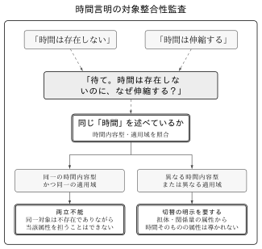
監査72資料には、時間の不存在を述べる言明と、時間そのものに伸縮、遅速、流動または変形を帰属する言明の双方が存在する。Misner–Thorne–Wheeler 1973資料には両系列の言明が同一資料内に存在するが、明示された適用域が異なるため、同一条件下の直接的矛盾とは判定しない。Heisenberg 1958資料は宇宙以前の時間不存在と言明操作の時間先取りを記録し、Feynman 1995資料とNarlikar 2010資料は時計・信号関係から時間流属性へ移る言明を記録する。これらの事例は、同一資料内だけでなく異なる理論領域で同じ「時間」という語を用いる場合にも、存在否定の対象と属性付与の対象を型および適用域によって分離する必要があることを示す。
複数資料を物理学の共通説明語彙として総合する場合にも同じ判定を適用する。時間非存在言明と時間属性言明を同じ説明体系に併置する物理学上の総合が、両者の対象同一性を維持するのか、異なる対象または適用域へ切り替えるのかを判定対象とする。
命題 8.78 (生成時間と破綻分類による代表理論成果の安全な再使用).
命題 8.26、 命題 8.36、 命題 8.42、 命題 8.50、 命題 8.58 および命題 8.72 の各成立条件のもとで、ニュートン力学・古典力学、時間計量、GPS、特殊相対論、一般相対論および量子重力の時間依存成果は、時間内容とその成立根拠構造が法則内使用に先行して生成される領域で使用資格をもつ。
生成段階条件が失効する場合、定義 6.10 の破綻位置トークン系と定理 6.168 の最小破綻位置集合が、最初に修復すべき条件または成立域を制限すべき条件を定める。修復が成立する場合、定義 6.17 の失効生成依存順序に従い、修復後の入力から下流成果を再生成または再計算する。全領域で当該条件が成立しない場合、成果の使用域を当該条件が成立する領域へ制限する。これにより、各理論の数学的成果、予測成果、測定成果および工学的成果は、物理時間成立資格を満たす領域で安全に再使用できる。
数値精度への接続強度は分野ごとに異なる。時間計量とGPSでは、較正、周波数比、記録セル幅、窓選択、時計補正、伝搬補正、閉路欠損および受信機時計偏差に属する誤差原因の修復が、下流成果の再計算と精度評価へ直接接続する。ニュートン力学・古典力学、特殊相対論および一般相対論では、初期値、時間表現、同期、時計率比較、局所・大域時間条件、輸送、近似域または微分評価に属する誤差原因が最小破綻位置に含まれる場合に、修復後の再計算と精度評価へ接続する。量子重力では、時間生成条件、失効位置、修復対象および既存成果の適用資格の確定が主要な帰結であり、具体的な近似誤差または推定誤差が失効位置へ局在化される場合に、修復後の精度評価へ接続する。
したがって、原始時間前提に依存していた問題は、未成立の時間内容を用いた謎または理論的停滞から、時間生成条件、最小破綻位置、修復順序および成立域を特定する問題へ移る。生成時間と破綻分類は、既存理論の成果を成立条件のもとで安全に使用し、失効時には修復対象を上流から特定する根拠を与える。
証明.
六つの局所命題は、それぞれの代表理論について、生成済み時間表現を使用できる成立域、各極小失効位置、修復または成立域制限、修復後の再生成もしくは再計算、および条件付き精度評価を与える。
定義 6.10 は、失効した生成段階条件を対応する破綻位置トークンへ分類する。定理 6.168 は、失効生成依存順序に関して最小となる失効位置を定める。定義 6.17 により、最小破綻位置より下流の条件と成果は上流条件へ依存する。ゆえに、最小破綻位置に属する条件を修復し、修復後の入力から下流成果を依存順に再生成または再計算する。修復が全領域で成立しない場合は、当該条件の成立域が成果の使用域を定める。
各局所命題が指定する誤差原因と精度評価の接続条件を比較すると、時間計量とGPSでは測定・補正入力へ直接接続し、ニュートン力学・古典力学、特殊相対論および一般相対論では対象となる初期値、時間表現、同期、輸送、近似または微分評価が失効位置に含まれる場合に接続し、量子重力では具体的な近似誤差または推定誤差が失効位置へ局在化される場合に接続する。
以上により、六分野の既存成果について、時間生成依存の明示、安全な適用域の確定、初回失効診断、修復順序、成立域制限、安全な再使用および分野別の条件付き精度評価が成立する。 ∎
命題 8.79 (原始時間入力の資格失効と下流計算成果の条件付き失効).
代表スキームが使用する時間内容 と、その時間内容が直接または時間内容移送列を介して導出へ参与する下流成果 について、次の二つの判定が成立する。

第一は物理時間成立資格判定である。 が原始時間入力であるとき、 は物理時間成立資格を満たさず、 は物理時間成立資格を満たさない時間内容へ依存する。数学的一貫性、予測性能および経験的適合が成立する場合にも、この資格失効は残る。
第二は下流計算成果判定である。尺度付き完全評価指定 において、時間内容 の生成もしくは使用資格、または成果 の入力値、比較、表現、同期、輸送、近似もしくは微分評価を規定する条件 をとる。原始時間入力 が定義 7.120 の意味で の成立責務を背景化し、独立証拠が同じ の実失効を確定し、その失効位置から の導出段階まで下流依存が成立するとき、 は当該評価領域において物理的計算成果としての使用資格を失う。失効条件を修復できる場合には、修復後の入力から下流成果を再生成または再計算する。当該条件を全領域で修復できない場合には、成果の使用域をその条件が成立する領域へ制限する。再計算値が従前値に一致するか変化するかは、修復後の再計算によって確定する。


第一判定の成立条件は原始時間入力の存在および成果導出への参与である。第二判定の成立条件は、原始時間入力による成立責務の背景化、同じ条件の実失効を確定する独立証拠、およびその失効位置から成果導出までの下流依存である。したがって、評価成功、物理時間成立資格の失効および下流計算成果の使用資格失効は、同一の事例において論理的に両立する。
証明.
定理 7.11 により、原始時間入力 は物理時間成立資格を満たさない。命題 7.6 および系 7.12 により、 が直接または時間内容移送列を介して成果 の導出へ参与するとき、 は物理時間成立資格を満たさない時間内容へ依存する。命題 7.13 により、数学的一貫性、予測性能および経験的適合の成立は、この資格失効を補完しない。これにより第一判定が成立する。
命題 7.121 は、原始時間入力による成立責務の背景化、同じ条件の実失効を確定する独立証拠、下流成果への依存到達、および修復後の再生成または再計算を一つの監査因果列へ接続する。命題 8.78 により、代表六分野では、生成条件または成立条件の実失効を極小失効位置へ局在化し、失効生成依存順序に従って修復後の入力から下流成果を再生成または再計算する。定義 6.4 により、失効した条件を必要とする評価指定は対応する妥当性域に属さない。定義 6.17 および定理 6.168 により、極小失効位置とその下流依存が定まり、命題 6.171 により、その失効位置が及ぼす構造負担が定まる。成果 の導出段階がこの下流依存に属するとき、 は当該評価領域において物理的計算成果としての使用資格を失う。修復が成立する場合には修復後の入力から再生成または再計算し、全領域で修復が成立しない場合には成立域が成果の使用域を定める。これにより第二判定が成立する。
第一判定は原始時間入力と成果導出への参与から定まる。第二判定は、原始時間入力が背景化した条件と、独立証拠が実失効を確定する条件と、下流依存の始点となる条件が同一であることから定まる。両判定は異なる成立条件をもち、数学的一貫性、予測性能および経験的適合の成立は、いずれの失効条件も補完しない。 ∎
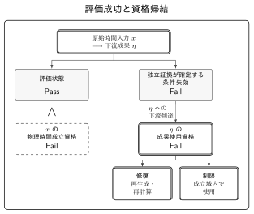
図中の数式


8.11 生成表現としての古典時間
本節では、生成時間理論の条件を満たす部分クラスとして古典的領域を構成する。この領域に属する時間変数は、厳密比較閉包、運動記述操作可能性、法則記述操作可能性および微分記述操作可能性の成立順序に従って生成される。この領域の連続時間表現は、定義 6.86 の連続近似尺度有効域に属する尺度において成立する。
定義8.5の代表スキーム単一対象評価指定は各理論を実現済み操作構成へ接続し、命題8.22は理論別入力と生成対象の型境界を与える。古典的領域を与える特殊化条件が成立する場合には、定理5.112、定理5.113および定義5.133を適用する。
8.11.1 古典時間の最小操作模型
古典時間の最小操作模型は、単一の観測者側情報結合位置、単一の対象指定添字、由来時計側ソース、由来記録側ソースおよび由来対象状態側ソースをもつ。各生成対象は、対応する段階条件の成立から得られる。
定義 8.80 (古典時間の最小操作模型).
最小古典スキーム個体をとする。完全評価指定を


とする。実現済み操作構成を
とする。
最小古典模型の単一由来ソース添字を とする。各 について、由来時計側ソーストークンを


とする。由来記録側ソーストークンおよび由来対象状態側ソーストークンを


とする。由来記録側ソーストークンは
を満たす。
由来の結合は

を満たし、その成分は
を満たす。
比較段階の到着写像として
を用い、運動記述段階の由来到着写像として
を用いる。
命題 8.81 (最小古典模型における由来観測者時間商).

![\mathsf{DynOperative}\left[\mathsf{Ev}_{\mathsf{Sch}_{\mathrm{ClMin}}}\right]](math-S8/3ec904301983f1d67bf914efbe9ea3542918f8e14f8b6668b80713d245618b67.svg)
各 について


とする。さらに、次の三条件を仮定する。
第一に、任意の

に対し、あるが存在して を満たす。

第二に、任意のについて


を満たす。
第三に、任意のについて

を満たす。
このとき

が順序同型として成立する。
任意の
に対して、各の時間値を
とする。
証明.

仮定した被覆性と単射性により、対応 は自然数集合から由来観測者時間商への全単射である。順序一致により、この全単射は自然数順序と観測者時間正準厳密順序を保存し、その逆対応も順序を保存する。したがって由来観測者時間商は自然数集合と順序同型である。
](math-S8/6114665c42d2a6675531d542f115fb3215ecdb81ef40cbb28ecafc06c7afa217.svg)
系 8.82 (最小古典模型の連続近似).
任意の
![\lambda\in\mathcal{I}^{\max}\left[\mathsf{Ev}_{\mathsf{Sch}_{\mathrm{ClMin}}}\right]](math-S8/e7961275fbb908b106ee2614f963caae5eb70c66c84b475c121947eac7565924.svg)
について

が成立する。この尺度において、連続拡張条件、順序安定性条件および関係安定性条件を含む連続近似九条件が成立する。
証明.
物理時間成立資格との接続. 完全評価指定の成分は、実現済み操作構成、比較規則族、観測者側情報結合位置および対象指定添字である。安定記録、対象状態列、時計側有限粒度、連続近似条件および法則担持単値性は、各生成段階の成立証拠として法則時間使用監査に用いられる。
命題 7.199 は、実現済み操作構成から表現段階、運動記述段階、法則記述段階および微分段階へ至る生成依存を与える。本模型において、時間内容に対応する成立根拠構造が法則演算および成果導出に先行するとき、定理 7.200 により、その時間内容を使用する物理法則時間変数は物理時間成立資格を満たす。各生成段階の失効は、定義 6.10 および定義 6.21 により破綻位置トークンとして局在化される。破綻位置トークンは古典近似の成立境界を局在化し、物理時間成立資格は系 7.15 の生成先行条件によって判定される。
定義 8.83 (古典的領域).
完全評価指定を

とする。この完全評価指定を第一成分に持つ法則評価データムを
とし、この法則評価データムを第一成分に持つ微分評価データムを


とする。
、 および が古典的領域をなすとは、次の六条件が成立することをいう。


-
()
単一共有由来時計領域が成立し、比較段階で使用される由来時計側データは、同一の共有比較時計族に属する。
-
()
比較段階の分岐構造は、由来正準比較商の生成に関して一価である。
-
()
由来対象状態側同定写像は を満たし、任意の許容由来対象状態側トークンに対して
が成立する。
- ()
-
()
定義 5.67 の運動記述条件全成立束 が成立する。この束の八連言成分は、同定義の記載順にからまでの運動記述条件に対応する。
- ()


![\mathsf{LawOperative}\left[\mathsf{LawEvalDat}_{o\mathchar 44\relax\allowbreak%
\zeta}\right]](math-S8/a8300650e150bde40958d84da465d87dddf926a14cc653677a687edda9fdf2c2.svg)
![\mathsf{DiffOperative}\left[\mathsf{DiffEvalDat}_{o\mathchar 44\relax%
\allowbreak\zeta}\right]](math-S8/a706b149295702a4e69f8602eb9ec2694516fbc7a4815d930caf20efb5a6d9f7.svg)
備考 8.84 (古典的部分クラス).
定義 8.83 の古典的領域は、単一の観測者側情報結合位置と単一対象を持つ局所古典配置、および複数対象または複数の観測者側情報結合位置が同一の由来時計領域を共有する古典的多体系配置を含む。後者では、共有比較時計族、由来対象状態側同定写像および直接受容条件が、すべての対象と観測者側情報結合位置に対して成立する。
定理 8.85 (古典時間成立定理).


任意の
に対して、法則許容時間表現
![\displaystyle\mathsf{TimeRep}^{\mathrm{dyn}}_{o}[\rho_{o}]](math-S8/4b868c3a7a0acc8cada6dfb0c7fda4b5975baead6cb3b13aefb7fc1ce1c55c5e.svg)

が定まる。任意の
に対する既存古典物理の慣用表示を
![\displaystyle:=\mathsf{TimeRep}^{\mathrm{dyn}}_{o}[\rho_{o}]\left(T_{0}\right)](math-S8/bdfa76b51e8105d392eafe174aedfa403f6032c49aaf987769f78c8f0f4120f6.svg)
とする。
同じ実数値時間順序埋め込みに対して、観測者時間法則核
およびチャート両立的微分法則

が定まる。
証明.

![\mathsf{DynOperative}[\mathsf{Ev}]](math-S8/e4c2a3896ff904df5d9720d2c1ef947fee9ccee470bef2893e044d88c7baba97.svg)
系 8.86 (古典時間は生成表現である).
古典的領域の時間変数は、厳密比較閉包、運動記述条件全成立束、由来観測者時間商、時間順序座標射影および実数値時間順序埋め込みの合成から得られる。
8.12 古典時間の有効域と破綻境界
定義 8.87 (古典的連続近似領域).
定義 8.83 の古典的領域をなす完全評価指定 、これを第一成分に持つ法則評価データム 、およびこの法則評価データムを第一成分に持つ微分評価データム をとる。
定義 6.93 の最大近似有効区間が を満たすとき、この最大近似有効区間を、完全評価指定 の古典的連続近似領域と呼ぶ。
![\mathcal{I}^{\max}[\mathsf{Ev}]\neq\varnothing](math-S8/f067b64d1ab0565a20d870f205620ae6201328eec87cf9743f245d334dacaed6.svg)
この区間の各 について、定義 6.86 の連続近似尺度有効域への所属 が成立する。

単一の観測者側情報結合位置と単一対象に付随する古典的連続近似領域を、局所古典連続近似領域と呼ぶ。
複数の観測者側情報結合位置または複数対象について、各組に付随する完全評価指定、法則評価データムおよび微分評価データムが定義8.83の六条件を満たし、各最大近似有効区間が空でなく、同定義のの由来時計族がすべての組に共通するとする。このとき、各最大近似有効区間からなる族を共有古典連続近似領域と呼ぶ。
定理 8.88 (古典的連続近似妥当性定理).
、 および が古典的領域をなし、定義8.87の古典的連続近似領域が定まるとする。このとき、任意の について が成立する。
完全評価指定から生成される

は、この尺度における連続拡張条件、順序安定性条件および関係安定性条件を共通に満たす。
証明.

系 8.89 (古典的連続近似の生成と成立域保証).
古典的連続近似領域の連続時間、微小時間区間、滑らかな軌道表現および微分法則記述は、完全評価指定 から生成される。これらの表現の成立は、最大近似有効区間 の各尺度において保証され、この区間が古典的連続近似の最大初期成立域を与える。
![\mathcal{I}^{\max}[\mathsf{Ev}]](math-S8/5eee70e6b2b67dd80c9c73a4d80a718ade9bdfdbcd0b2d39bcc2c72748184ded.svg)
証明.
定理 8.88 により、完全評価指定から由来観測者時間商、軌道関係、観測量系および法則許容時間表現が生成される。連続時間、微小時間区間、滑らかな軌道表現および微分法則記述は、これらの生成対象に基づく表現である。
命題 8.90 (共有古典連続近似領域の生成と成立域保証).
共有由来時計を使用する各対象および観測者側情報結合位置について、定義 8.87 の古典的連続近似領域が定まるとき、各完全評価指定から古典的連続近似時間表現が生成される。その成立は各最大近似有効区間の全尺度で保証され、これらの区間からなる族が共有古典連続近似領域を与える。
証明.
定理 8.91 (古典時間の初回失効境界).
古典的領域の完全評価指定を とし、定義 8.87 の古典的連続近似領域が定まるとする。古典的連続近似時間表現は から生成され、その成立は の各尺度において保証される。


![\mathsf{FailedTok}\left[\mathsf{Ev};\lambda\right]\neq\varnothing](math-S8/f9aefee13f8ed69ca8b6e6f6e109d763302457a61353402123a5c1d737aac513.svg)
![\displaystyle=\mathsf{FailedTok}\left[\mathsf{Ev};\lambda\right].](math-S8/98f18bfb52c5e5beb0d877b718642894a56240b46d64d26e855062421f267803.svg)
![\displaystyle\mathcal{I}^{\max}\left[\mathsf{Ev}\right]](math-S8/58b52c23cd3bf8072dc04a66c084b4989c208db97f98b4826c2b512ac9fdfb8e.svg)
![I_{\mathsf{approx}}^{\mathrm{exc}}\left[\mathsf{Ev};\lambda_{\mathsf{bdry}}^{%
\mathrm{approx}}\left[\mathsf{Ev}\right]\right]\neq\varnothing.](math-S8/f00f3a7994d4d86c716f27d7fc4d05264072e353f94de7f735e9e7c754d676f6.svg)
![\left\{\left(\lambda_{\mathsf{bdry}}^{\mathrm{approx}}\left[\mathsf{Ev}\right]%
\mathchar 44\relax\allowbreak\Sigma_{\mathsf{approx}}^{\mathrm{bdry}}\left[%
\mathsf{Ev};\lambda_{\mathsf{bdry}}^{\mathrm{approx}}\left[\mathsf{Ev}\right]%
\right]\right)\right\}](math-S8/ae8ebdf1023e46b3ce11576013f37d3687db2edb78d03e0fc031438f9f48609e.svg)

![\mathsf{FailedTok}\left[\mathsf{Ev}_{0};\lambda_{0}\right]\neq\mathsf{%
FailedTok}\left[\mathsf{Ev}_{1};\lambda_{1}\right]](math-S8/c00ef80d539dbaecee574baf17d50fa4fb5466a01b558d86ea12cfb49cd96be8.svg)
証明.
定義 6.21 により、当該尺度で失効するトークン全体が定まる。命題 6.26 により、この集合は破綻生成依存順序に関する極小元集合と一致する。定義 6.10 により、各失効トークンは、比較、表現、連続近似、運動記述、法則記述または微分整合性のいずれかの破綻系列に属する。
定理 6.163 により、近似成立尺度域の補集合に最小元が存在するとき、最初の近似失効尺度が存在し、最大近似有効区間はこの尺度より小さい尺度全体である。同じ定理により、最初の近似失効尺度における近似超過成分集合は空でない。定理 6.164 により、この尺度と近似境界署名からなる順序対が近似尺度境界データの唯一の元である。
局所古典配置と共有古典配置の各失効トークン集合は、それぞれ対応する極小失効トークン集合と一致する。したがって、両失効トークン集合が相異なる場合、集合の外延性により両極小失効トークン集合も相異なる。 ∎
以下の連続近似表現の生成と成立保証では、定義 8.87 の古典的連続近似領域を取る。
物理時間成立資格との接続. 命題 7.199 の生成列は、非時間的物理入力から表現段階、運動記述段階、法則記述段階および微分段階へ至る生成順序を与える。古典的領域では、系 8.89 により、完全評価指定から古典的連続近似時間表現が生成される。
系 7.15 により、物理法則時間変数が使用する時間内容に対応する生成構造は、法則演算および成果導出に先行して成立する。この生成先行条件が成立するとき、定理 7.200 により、その時間内容を使用する物理法則時間変数は物理時間成立資格を満たす。
定理 8.91 の仮定を満たす完全評価指定と尺度について、定理 8.88 により、生成された古典的連続近似時間表現の成立は対応する最大近似有効区間の各尺度で保証される。同じ初回失効境界定理により、非空な失効トークン集合は破綻生成依存順序に関する極小元集合と一致し、各元は六破綻系列のいずれかに属する。
したがって、古典物理法則が使用する時間内容の物理時間成立資格と、生成された古典的連続近似時間表現の尺度別成立保証は、それぞれ生成先行条件と最大近似有効区間によって与えられ、失効は六破綻系列へ局在化される。
系 8.92 (古典時間連続近似の成立境界).
証明.
定理 8.85 により、古典的時間変数の慣用表示は、生成された由来観測者時間商の元に法則許容時間表現を適用して定まる。
命題 8.93 (古典的領域における生成・成立保証・失効局在化).
証明.
8.13 既存理論との差分
時計同期、相対論的時間伸縮表現、GR固有時、関係的時間、量子論的時間再構成、時間計量、操作主義が対象とする構造を、代表スキームと生成線の各段階へ対応づける。七対象が担う部分対象と生成階層の差は、物理時間の生成、尺度付き有効域、六系列破綻局在化へ至る生成線上の階層差として表される。
時計同期、相対論的時間伸縮表現、GR固有時、関係的時間、量子論的時間再構成、時間計量、操作主義は、時間の測定、同期、幾何化、関係化、標準化、観測との接続をそれぞれ対象化する。物理担体上の時計読取差、時計率差、固有時差および周波数差は、それぞれの対象と関係に属する相対論的成果である。Bailey et al. 1977資料およびPössel 2021資料の言明は、この物理担体関係を直接記述する[7, 58]。未生成時間を比較差より前に置き、物理担体上の比較差をその時間の属性変化へ再帰属する操作がその配置に直接依存する解釈経路は、命題 8.23 の意味で二段階誤認である。七対象との差分は、これらの部分対象を、局所表示、記録、対象状態差異、観測者側情報結合位置から、比較閉包、正準比較商、表現段階、運動記述段階、法則許容時間表現、尺度付き有効域、六系列破綻局在化へ至る同一生成線へ対応づける点にある。
時計同期、GR固有時、関係的時間、観測量、時間計量、操作的測定は、それぞれの対象として発展してきた[23, 24, 53, 62, 14, 12]。本章の生成線は、これらが対象とする構造を、時間参照、観測者時間商、法則許容時間表現、尺度付き有効域および六系列破綻局在化の各段階へ対応づける。
| 対象 | 部分対象 | 生成線上の対応 | 階層差 |
|---|---|---|---|
| 時計同期 |
時計間比較
信号交換 同時性規約 |
比較段階
表現段階の一部 |
・から運動記述へ接続
・観測者時間法則核へ接続
・尺度付き有効域と
六系列破綻局在化へ接続 |
|
相対論的時間
伸縮表現 |
時計差
座標時刻差 固有時差の 時間属性への再帰属 |
SR・GRの具体的還元例
生成済み時間表現間の 比較差 |
・物理担体関係の
直接記述を保持 ・時間伸縮表現を 解釈経路ごとに判定 |
|
GR
固有時 |
世界線上の
局所時刻表示 |
GRの具体的還元例
における入力担体 局所生成表現 |
・局所固有時表示を分離 ・大域法則許容時間表現を分離 |
| 関係的時間 |
変数間関係
内部変数による順序化 |
表現段階
運動記述段階の一部 |
・記録・比較・観測者結合を段階化
・商降下から
法則表現までを段階化 |
|
量子論的時間
再構成 |
外部時間を用いない
時間記述 |
QGの具体的還元例
における入力監査対象 |
・観測者時間法則核の
生成条件を要求 ・法則許容時間表現の 生成条件を要求 |
| 時間計量 |
標準周波数
時系 単位規約 |
時間計量の
具体的還元例 |
・計数差から振動数表現を生成
・生成済み座標差を
数量アフィン差へ使用 |
| 操作主義 |
操作的測定
手続き 観測可能量 |
入力形成
比較段階 運動記述段階の材料 |
・六系列破綻局在化へ接続
・尺度付き有効域へ接続
・法則表現段階と
微分法則形式段階へ接続 |
命題 8.95 (七対象との差分は階層差である).
時計同期、相対論的時間伸縮表現、GR固有時、関係的時間、量子論的時間再構成、時間計量、操作主義が対象とする構造は、生成線の比較段階、表現段階、運動記述段階、法則表現段階、微分法則形式段階、尺度付き有効域判定または六系列破綻局在化へ対応する。七対象との差分は、これらの構造を同一生成線の各段階へ対応づけ、物理時間の生成、尺度付き有効域および六系列破綻局在化まで到達させる階層差である。
証明.
表 19 の各行は、七対象が対象とする構造と生成線上の対応を示す。時計同期は時計間比較と信号交換を対象とするため、比較段階と表現段階に対応する。Bailey et al. 1977資料およびPössel 2021資料の言明は、運動する時計または光時計を遅速の担持対象とする物理担体関係を直接記述する。時計差、座標時刻差または固有時差より前に未生成時間を置く解釈経路で、後段で得られる比較差をその時間の属性変化へ再帰属する操作が、その配置に直接依存するとする。定理 7.190 は監査72資料のすべてに原始時間根が残ることを与える。生成前配置と属性再帰属を直接依存で含む採録言明の解釈経路は、命題 8.23 の意味ですべて二段階誤認に属する。GR固有時は世界線上の局所表示であり、第8.6節の入力担体または局所生成表現に対応する。関係的時間は変数間関係を対象とするため、表現段階または運動記述段階に対応する。量子論的時間再構成は、外部時間を用いない形式における時間記述を対象とするため、第8.8節の入力監査対象となる。時間計量は、計数、標準周波数、時系および単位規約を対象とするため、第8.3節で、計数差と生成済み座標差から振動数・周期表現を生成する。操作主義は、操作的測定と観測可能量を対象とするため、入力形成、比較段階および運動記述段階の材料を供給する。
これら七対象が対象とする構造は、生成線の各段階へ対応する。この対応は、局所受容、記録、対象状態差異および観測者側情報結合位置から、正準比較商、表現座標、観測者時間法則核、法則許容時間表現、尺度付き有効域および六系列破綻局在化へ至る生成階層を与える。ゆえに差分は、生成階層と射程の差である。 ∎
時計同期、相対論的時間伸縮表現、GR固有時、関係的時間、量子論的時間再構成、時間計量、操作主義が対象とする構造は、比較閉包、正準比較商、時間表現、運動記述、法則許容時間表現、尺度付き有効域および六系列破綻局在化へ至る生成線上の各段階へ対応する。
系 8.96 (七対象の生成線内再構成).
時計同期、相対論的時間伸縮表現、GR固有時、関係的時間、量子論的時間再構成、時間計量、操作主義が対象とする構造は、生成線の部分段階または代表スキーム入力へ対応する。この対応により、各構造は、物理時間の生成、尺度付き有効域および六系列破綻局在化へ至る生成線の成分となる。
証明.
命題 8.95 により、七対象が対象とする構造は、生成線の部分段階または代表スキーム入力へ対応する。したがって、各構造は、物理時間の生成、尺度付き有効域および六系列破綻局在化へ至る生成線の成分となる。 ∎
8.14 理論別入力として保持する理論構造
定義 8.14 の比較実現クラスに属する理論では、運動方程式、相互作用項、場の方程式、量子化手続、補正規則および工学的実装を、定理 8.16 の実現済み操作構成に対する理論別入力として保持する。この理論別入力から、時間比較、時間表現、運動記述、法則許容時間表現、尺度付き有効域および六系列破綻局在化の成立条件を生成する。
理論別入力として保持する理論内容と、生成線上で構成または判定する対象との対応を次表に示す。
| 保持対象 | 入力上の位置 | 生成線上の対応対象 |
|---|---|---|
| 運動方程式 | 理論別入力 | 法則許容時間表現 |
| 場の方程式 | ||
| 相互作用項 | 正準観測量族、軌道関係、観測者時間法則核 | |
| 量子化手続 | QG理論別入力 | 観測者時間法則核の生成判定 |
| 補正規則 |
比較規則・
記録側入力 |
比較商、表現座標、航法時刻表現 |
| 工学的実装 | 実現材料 |
正準商、表現座標、
尺度付き有効域、 六系列破綻局在化 |
運動方程式は、法則許容時間表現上で担われる運動内容を与える。相互作用項は、正準観測量族、軌道関係および観測者時間法則核上で評価される運動内容を与える。場の方程式は場の法則内容を与え、それを担う時間表現の生成入力となる。量子化手続はQGの理論別入力であり、外部時間を原始前提に置かずに観測者時間法則核を生成できるかを判定する入力となる。補正規則は比較商、表現座標および航法時刻表現の生成入力となる。工学的実装は、正準商、表現座標、尺度付き有効域および六系列破綻局在化を判定する実現材料を与える。
命題 8.97 (理論別入力と生成対象の分離).
定義 8.14 の比較実現クラスに属する代表スキームでは、運動方程式、相互作用項、場の方程式、量子化手続、補正規則および工学的実装は、対応する実現済み操作構成に対する理論別入力として保持される。生成線上で構成または判定する対象は、比較閉包、正準比較商、表現座標、観測者時間法則核、法則許容時間表現、尺度付き有効域および六系列破綻局在化である。したがって、既存理論の運動内容は理論別入力として保持され、その運動内容に用いる時間変数の成立条件と有効域が生成され、失効位置が六系列上で分類される。
証明.
定義 8.14 のCR1からCR7までにより、代表理論の担体、比較規則、記録側材料、対象状態側材料および運動記述側材料が理論別入力として与えられる。定理 8.16 により、これらの入力から対応する実現済み操作構成が定まる。
系 8.18 により、操作可能性判定、比較段階判定、表現段階判定、連続近似段階判定、運動記述段階判定、法則表現段階判定および微分法則形式段階判定は、この実現済み操作構成を定義域側入力とする。定理 4.90 と定理 4.147 は比較閉包から表現座標までを構成し、定義 5.108 と定義 5.63 は観測者時間法則核と法則許容時間表現を定める。定義 6.4 は成立域を定め、定義 6.10 は失効位置を六系列へ分類する。
したがって、既存理論内容は実現済み操作構成に対する理論別入力として保持され、時間変数の成立条件、有効域および失効位置が生成線上で構成または判定される。 ∎
理論別入力と生成対象の分離により、運動方程式、相互作用項、場の方程式、量子化手続、補正規則および工学的実装は理論別入力として保持される。生成線は、これらの理論内容を理論別入力として保持したまま、時間比較、時間表現、運動記述、法則許容時間表現、尺度付き有効域および六系列破綻局在化を構成する。
系 8.98 (既存理論内容を保持する時間変数成立条件の生成).
命題 8.97 の既存理論内容に対して、時間変数を法則に用いるための成立条件、尺度付き有効域および六系列破綻局在化が生成される。既存理論内容は、生成済み法則許容時間表現と尺度付き有効域のもとで法則内容として成立し、失効時には六系列上の失効位置と構造負担が定まる。
証明.
定義 8.99 (成果保存的再基礎化).
既存理論内容をLCTRの生成・監査構成における理論別入力として保持し、既存成果を成果固有の証拠効力域内に保持し、原始時間前提の物理時間成立資格を失効させ、必要な時間内容と成立根拠構造を非時間的物理入力から生成し、その成立域と失効位置を監査し、失効時に修復、再生成、再計算または使用域制限を行い、証拠効力域と有効域の共通部分で既存成果を再使用する構成を、成果保存的再基礎化と呼ぶ。
既存理論内容の保持経路、時間資格の生成・監査経路および失効後の再生成経路を図 25に示す。
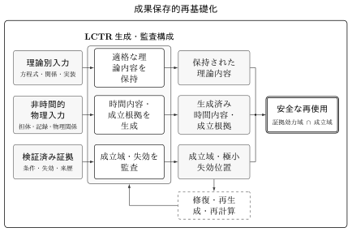
図中の数式

8.15 LCTRの型付き生成・監査アーキテクチャ
LCTRは、型分離、入力・作用・出力境界、段階的生成、依存順序、使用資格、監査状態、失効局在化、証拠来歴および再生成範囲を、物理理論の成立条件として統合する。計算機科学（CS）の設計方法論が用いるこれらの原理は、LCTRにおいて、型、写像、生成閉包、半順序、有効域、状態集合および証拠対応として数学的に定義される。
このCS的構成の階層性は、下位構成の内部を上位段で再展開せず、封入済みの型付き出力を一つの入力項として再利用し、追加成分または追加条件とともに一つの上位構成へ閉じる点にある。第2–3章では役割インスタンスから役割インスタンス束族、生操作入力、実現済み操作構成へ封入が進み、第4章では表現段階生成構造束が先頭保持拡張によって再帰的に累積する。第5章では運動記述、法則記述、微分記述の成立資格が上流資格を保持して累積し、第6章では監査計算核と証拠来歴証明書が操作的監査データへ、さらに状態報告と診断報告を伴う五値監査報告対象へ封入される。
定義 8.100 (LCTR型付き生成・監査アーキテクチャ).
LCTR型付き生成・監査アーキテクチャを、次の六構造とそれらの依存辺からなる構造とする。
- 1.
- 2.
- 3.
- 4.
- 5.
- 6.
各構造の出力は、依存辺によって指定された後段構造の入力となる。
命題 8.101 (型付き生成・監査アーキテクチャの一体性).
定義 8.100 のもとで、次が成り立つ。
-
1.
各生成対象について、入力型、形成条件、出力型および後段使用条件が定まる。
-
2.
時間表現、運動記述、法則時間、連続近似および微分形式の物理的使用資格が、上流条件と尺度条件から定まる。
-
3.
各監査状態は、通過、失効、阻止、未形成または未確定のいずれかに定まり、失効時には極小失効位置が定まる。
-
4.
失効位置の上方依存集合が、影響を受ける後段対象、構造負担および再生成範囲を定める。
-
5.
理論条件と工学測定量は異なる型を保持し、検証済み証拠が対応する失効位置トークンの状態を定める。
-
6.
原典の形式証拠と言明証拠は資料固有の来歴を保持し、正準有限監査実現が共通監査判定を定める。
したがって、LCTRは、物理理論の入力形成、対象生成、法則使用資格、尺度付き成立域、失効状態、証拠来歴、修復対象および下流再生成範囲を、一つの型付き依存構造として与える。
証明.
第1項は、役割、役割インスタンスおよび物理担体実現の型分離と、型付き生成閉包の入力・出力指定から従う。第2項は、比較、時間表現、運動記述、法則記述および微分形式の生成順序と、法則許容時間表現および尺度付き成立域の定義から従う。
第3項は五値監査状態と最初の破綻の定理から従う。第4項は失効依存順序、失効位置トークンおよび構造負担完全性から従う。第5項は工学評価仕様、工学監査パラメータベクトルおよび形式条件証拠局在化から従う。第6項は型付き有限監査入力、正準有限監査実現および全資料原始時間根結果から従う。
型、生成、使用資格、失効、証拠および再生成の依存関係が、LCTRにおけるCS設計方法論の理論構造をなす。物理理論の数式、CSの設計規律が指定する型・依存・状態・変更影響、および工学証拠は、この型付き生成・監査アーキテクチャを共同で構成する。 ∎
8.16 古典多体監査例と古典的な世界表現の背景条件
命題 8.102 (古典的な世界表現による時間参照成立条件の背景化).
古典的な世界表現は、質点、重心、形状、慣性モーメントおよび剛体制約を法則式の変数または関係として明示する。その一方で、時間参照を成立させる役割インスタンス、物理担体実現、記録到達条件、観測者側情報結合および共同法則領域を、法則式の変数、関係、生成条件または失効条件として記述せず、同じ時間変数による多対象記述の成立前提として使用する。この扱いを時間参照成立条件の背景化と呼ぶ。
証明.
古典的な世界表現は、これらの構造が非時間的物理入力から生成される経路と、これらの構造が失効したときに法則使用を停止する条件を法則記述へ含めない。それにもかかわらず、同じ時間変数による多対象記述を成立させる前提としてこれらの構造を使用する。したがって、古典的な世界表現は時間参照成立条件を式の外側の背景条件として先行投入する。 ∎
命題 8.103 (古典物理の成功による背景条件の非補完と尺度付き有効域).
古典物理の数学的一貫性、予測性能および経験的適合は、背景化された時間参照成立条件の物理的生成を補完しない。同一の時間変数で多対象関係が物理的に成立する領域は、役割インスタンスの物理担体実現、由来記録視野、記録安定性、観測者側情報結合、通信、多対象関係および尺度付き欠損量が各成立条件を満たす尺度付き有効域に属する。
証明.
命題 7.13 により、数学的一貫性、予測性能および経験的適合は、時間入力の生成依存を追加しない。
定義 6.194 は、由来記録視野、記録侵襲、通信グラフ、多対象関係欠損および共通法則領域欠損を工学監査入力として与える。定義 6.161 は、近似欠損量が許容値以下である近似成立尺度域を与える。定義 6.191 および定義 6.205 は、二対象の記録構成と、その工学証拠に相対する構造負担を与える。
各工学監査結果は、検証済み工学形式条件証拠を介して対応する理論条件の成立判定に接続される。六系列すべての成立が確認された評価指定と尺度は全評価成立域に属し、同一の時間変数による多対象関係の物理的成立域を与える。したがって、古典物理の成功は、時間参照成立条件を式の外側へ置いたままその物理的生成を補完する根拠にはならず、当該成功領域は各成立条件を満たす尺度付き有効域として確定される。 ∎
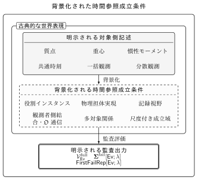
図中の数式
![\mathcal{V}_{\mathsf{Ev}}^{\mathrm{full}}\quad\boldsymbol{\Sigma}^{\mathrm{%
fail}}[\mathsf{Ev};\lambda]](math-S8/c5dc9c19fbd37f50645d5578828ac663a61d18bb48d3f797e9c2ca91323228e7.svg)
![\mathsf{FirstFailRep}[\mathsf{Ev};\lambda]](math-S8/3405097f5f71b60c5f75e3df71c0dac517001b3b5cdce5ffb1ae5cec9d59df2d.svg)
| 古典的入力 | 背景化される成立責務 | LCTR生成対象 |
|---|---|---|
| 質点近似 | 対象同一性と対象間関係 | 役割インスタンス族、多対象関係 |
| 重心 | 複合対象状態 | 物理担体実現、対象状態商 |
| 慣性モーメント | 観測量の比較可能性 | 正準観測量族、数量アフィン実現 |
| 共通時刻 | 比較・記録・結合 | 比較閉包、順序座標構造、観測者側結合 |
| 一括観測 | 記録視野・セル幅・安定性 | 一括記録条件、記録構造負担 |
| 分散観測 | 通信・比較閉路整合 | 追随記録条件、記録構造負担 |
定義 8.104 (古典多体監査例).
異なる二つの対象指定添字と有限対象指定添字族を
とし、関係添字を とする。

各およびについて、完全評価指定を


とし、

を仮定する。追随記録型の完全評価指定について

を仮定する。
二つの記録構成は
および
![\mathsf{FollowingRecord}_{\mathfrak{D}}\left[\left(\mathsf{Ev}^{(1)}_{k}\right%
)_{k=1}^{2};\lambda\right]=\top](math-S8/341247e5074490cc720922ddf21ccd6c8c9ee9c8d9d54a39db6eeb0dc3ddd2b4.svg)
を満たす。


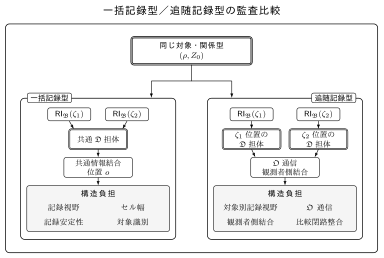
図中の数式


| 記録構成 | 担体条件 | 追加監査入力 |
|---|---|---|
| 一括記録条件 | 単一担体 | 記録視野、セル幅、記録安定性、対象識別性 |
| 追随記録条件 | 分離担体 | 対象別記録視野、通信、観測者側結合、比較閉路整合 |
命題 8.105 (一括記録条件の古典多体監査).
古典多体監査例の一括記録条件に対する失効位置集合は であり、その工学証拠相対構造負担は である。

証明.
命題 8.106 (追随記録条件の古典多体監査).
古典多体監査例の追随記録条件に対する失効位置集合は であり、その工学証拠相対構造負担は である。


証明.
命題 8.107 (一括記録条件と追随記録条件の構造負担差).
古典多体監査例の二つの工学証拠相対構造負担は の部分集合であり、

二つの集合差

および

がともに非空であるとき、二つの構造負担は包含関係に関して比較不能である。
法則時間使用監査との接続. 古典多体監査例の二つの記録構成は、第 7 節の物理時間成立資格監査へ完全評価指定を与える。二つの記録構成に対応する完全評価指定について、命題 7.199 の生成依存と操作可能性条件が法則演算および成果導出に先行して成立するとき、定理 7.200 により、そこで使用される時間内容を担う物理法則時間変数は物理時間成立資格を満たす。
時間内容の使用に必要な生成構造が成立するより前に、その時間内容が法則演算または成果導出へ入力されるとき、その時間内容は定義 7.10 の原始時間入力である。定理 7.203 により、その時間内容を担う物理法則時間変数は物理時間成立資格を満たさない。各記録構成における工学証拠の失効は、定義 6.205 の記録構成別失効位置集合、定義 6.159 の六系列失効署名および命題 8.107 の構造負担差として局在化される。
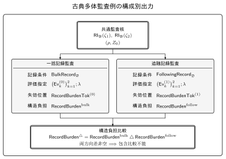
図中の数式


| 監査成分 | 一括記録条件 | 追随記録条件 |
|---|---|---|
| 役割インスタンス | ||
| 完全評価指定 | ||
| 担体 | 共通物理担体 | 相異なる物理担体 |
| 記録証拠 | 共有記録視野と共有符号関係 | 対象別記録視野と対象別符号関係 |
| 側証拠 | 共通情報結合位置 | 通信データムと観測者側結合 |
| 多対象関係 | ||
| 破綻出力 | 一括記録構造負担 | 追随記録構造負担 |


8.17 最終総合
最終総合定理は、比較段階から微分記述段階までの生成、連続近似段階の尺度付き成立域、六破綻系列の失効局在化、五値監査報告、監査72資料の横断結果、代表理論の具体的還元、古典多体監査、既存理論との差分、成果保存的再基礎化および型付き生成・監査アーキテクチャを、一つの依存順序として統合する。次表は、各総合項の直接根拠と出力を対応づける。
| 総合項 | 直接根拠 | 出力 |
|---|---|---|
|
総合(1)：
比較閉包 |
定理 4.90 | 、、由来正準比較商 |
|
総合(2)：
表現生成 |
定理 4.147、定理 4.177、定理 4.179、定理 4.187 | 、厳密操作的時間構造、局所・大域順序座標構造、比較順序アトラス |
|
総合(3)：
運動記述生成 |
定理 5.112、定理 5.138 | 、観測者時間商、軌道関係、グラフ軌道、正準観測量族、法則許容時間表現 |
|
総合(4)：
法則・微分生成 |
定理 5.113、定理 5.135、定理 7.203 | 観測者時間法則核、法則評価時間の生成表現性、チャート両立的微分法則、時間表現変更に対する微分共変性 |
|
総合(5)：
六破綻系列 |
定義 6.10、定理 6.168 | 比較・表現・運動記述・連続近似・法則記述・微分の六系列、失効位置、六系列失効署名 |
|
総合(6)：
尺度境界・監査 |
命題 6.162、命題 6.154、定理 6.163、定理 6.164、定理 6.183、命題 6.199 | 全評価妥当性域、連続近似・微分形式の二重資格、最大近似有効区間、近似失効尺度、近似境界署名、五値監査報告対象、構造負担監査成分、失敗原因の型分離 |
|
総合(7)：
監査72資料・ 代表理論 |
定理 7.190、命題 7.191、命題 8.73、命題 8.74、系 8.75、命題 8.59、命題 8.77、定理 8.16、各具体的還元例 | 原始時間根の全称残存、時間生成責務計数、時間非存在言明と時間属性言明の対象整合性、代表理論の生成条件・成立域・失効位置 |
|
総合(8)：
理論差分・ 成果保存的再基礎化 |
命題 8.95、命題 8.97、定義 8.99、命題 8.102、命題 7.121、命題 8.78、命題 8.79、定義 3.2、定義 6.188、命題 6.204 | 成果保存的再基礎化、既存理論の保持対象、時間参照条件の生成責務、同一時間変数による多対象関係の尺度付き成立域、成立責務の背景化から実失効・下流到達までの因果接続、物理時間成立資格の失効と下流計算成果の条件付き使用失効の分離、修復後の再生成・再計算範囲、生成条件下の安全な再使用範囲、工学実装への型付き適用条件 |
|
総合(9)：
型付き生成・ 監査構造 |
定義 8.100、命題 8.101 | 物理理論の型付き依存構造、使用資格、監査状態、失効局在化、証拠来歴、影響範囲、修復・再生成範囲 |
|
総合(10)：
最終帰結 |
総合(1)–総合(9) | 物理時間の構成的定義、時間的同一性・前後関係の生成、線形順序・実数値時間の条件付き表現、時間座標自由度の一意な再表現、同一時間変数による多対象関係の成立責務、時間順序と因果順序の責務分離、古典的連続時間の生成と最大成立域、時間創出・創発・非存在言明の形式責務、量子重力の時間問題の法則時間使用資格問題への変更、分野別時間責務の変更、原始時間前提の資格失効、六系列失効局在化、監査報告 |
![\mathsf{L}_{\leq 7}[\mathsf{Ev}^{\mathrm{cmp}}]](math-S8/be338487e099e3c06abdccd109aa1ac0bf3593e10acb9ffadee1237f6f199184.svg)
![\mathsf{G}[\mathsf{Ev}^{\mathrm{cmp}}]](math-S8/676b47912a2e5bf981a8717f7d7f94fd817c229f2ea45f197d07c37a9b061455.svg)

したがって、次の最終総合定理は、表 24 の直接根拠から、時間変数の生成、成立、失効および監査を同じ依存順序上に与える。
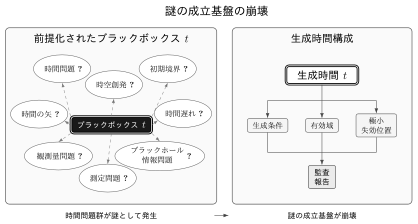
図中の数式
定義 8.108 (時間問題接続領域).
時間問題接続領域とは、未生成の時間変数、時間順序または時間表現を法則演算もしくは成果導出へ先行入力することで、独立した謎として現れる問題記述群であって、対応する時間内容と成立根拠構造の生成条件、尺度付き有効域、六破綻系列または監査報告へ接続されるものをいう。
定義 1.1 の時間定義困難は、定理 7.203 により、物理法則時間変数の物理的成立根拠要求として具体化される。比較閉包、由来正準比較商、由来観測者時間商、由来軌道関係、観測者時間法則核および法則許容時間表現が同じ生成依存上に成立するとき、時間変数は生成済み法則許容時間表現として成立する。
比較閉包と正準比較商は、二つの物理的材料を同じ時間内容に属するものとして同定できる条件を与える。正準部分順序は前後関係と比較不能性を保持し、非比較可能性による商は、その推移性条件が成立する場合に厳密線形順序を与える。実数値時間は、その順序商から実数への順序埋め込みが存在する場合に得られる表現である。したがって、LCTRは、実数直線と線形順序を、生成条件を満たした時間構造の後続表現とする。許容順序表現の選択自由度は、表現像間の一意な厳密順序同型による再表現として定まる。これは、Feynmanが時間に満足な定義を与えることの困難として提示した問題[27]に対するLCTRの回答である。LCTRは、物理時間の定義を語義の指定から成立条件の生成へ変更し、時間の同一性、前後関係、比較可能性、線形化、実数表示、法則内使用および失効の各条件を非時間的物理入力から生成する。
連続近似を用いる主張では、その成立範囲が尺度付き有効域として定まり、失効は六破綻系列、近似境界署名および五値監査報告によって局在化される。
次図の横軸は、時間使用が担う構造的射程を局所、複数記録、複数観測者、貼合／境界の順に示し、縦軸は、成立責任が現れる段階を比較、表現、連続近似、運動記述、法則記述、微分の順に示す。大黒丸は主要局在負担、小黒丸は追加の直接負担、菱形は尺度条件、中空点は派生または後続適用、灰色横線は構造範囲、細線は同一対象が負う複数の負担の接続、四角は工学証拠を表す。帯内の位置差は配置上の識別に用いられる。下端の工学証拠帯は、理論上の六段階へ接続される検証済み工学入力を表す。
各略号は、本文で構成または監査した次の箇所に対応する。C.Min. は古典時間の最小操作模型（8.11.1）、T.Met. は時間計量の具体的還元（8.3）、SR は特殊相対論の具体的還元（8.5）、C.Dom. は古典時間の有効域と破綻境界（8.12）、GPS は GPS の具体的還元（8.4）、GR は一般相対論の具体的還元（8.6）、QG は量子重力の具体的還元（8.8）を指す。QG に接続された I.Bd. は宇宙論的初期境界（8.8.3）、B.H. はブラックホール情報問題を含む極限重力領域（8.8.4）への後続適用を示す。G/F と C.Multi. は、一括記録・追随記録および古典多体監査例（8.16）に対応する。
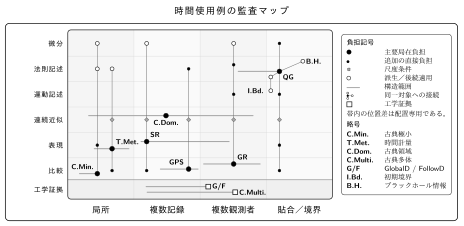
定理 8.109 (最終総合定理).
実現済み操作構成、型付き比較規則族 、観測者側情報結合位置 、対象指定添字、 完全評価指定


および近似尺度に対して、次が成立する。
総合(1)：比較閉包 比較段階の操作可能性は

によって与えられる。この条件のもとで、拡張比較到達同値関係、比較商集合、正準射影、商上由来関係および由来正準比較商が依存順に一意に定まる。
総合(2)：表現生成 厳密操作可能性は
によって与えられる。この条件のもとで、正準部分順序、厳密操作的時間構造、局所・大域順序座標商、局所・大域厳密線形順序、正準順序座標射影、局所大域順序座標埋め込みおよび比較順序アトラスが依存順に生成される。選択表現値域と表現値域順序埋め込みを指定すると、由来表現座標が正準大域順序座標射影を通じて因子化する。
総合(3)：運動記述生成 運動記述操作可能性は
![\displaystyle\mathsf{DynOperative}\left[\mathsf{Ev}\right]](math-S8/5d51127eb745216f5aaade79314397a50df562dc9e99ee3971c3b16ea7941915.svg)
![\displaystyle\Longleftrightarrow\mathsf{ExactOperable}\left(\mathcal{X};%
\mathcal{J}_{\mathrm{cmp}}\right)\wedge\mathsf{DynCondAll}\left[\mathsf{Ev}\right]](math-S8/72468acdeefa664e55ce69fc827afb63de739cf29f1d1d00d09fbe4b734e96e0.svg)
によって与えられる。この条件のもとで、由来観測者時間商、由来対象状態商、由来軌道関係、グラフ軌道、正準観測量族、観測者時間順序座標商、実数値時間表現、スカラー時間軌道および実数値観測量曲線族が生成される。
総合(4)：法則・微分生成と時間変数の物理的成立 法則記述操作可能性と微分段階操作可能性は
![\displaystyle\mathsf{LawOperative}\left[\mathsf{LawEvalDat}_{o\mathchar 44%
\relax\allowbreak\zeta}\right]](math-S8/cbbb95edad4e03b9b90882a69c2af79bf98f039d7cf00a5e617a2a94181525df.svg)
![\displaystyle\Longleftrightarrow\mathsf{DynOperative}\left[\mathsf{Ev}\right]%
\wedge\mathsf{LawCondAll}\left[\mathsf{LawEvalDat}_{o\mathchar 44\relax%
\allowbreak\zeta}\right]\mathchar 44\relax\allowbreak](math-S8/f4db8b754bc6a21e7d366af9390758b124ba05f43d0a8a046d90114e09456ec1.svg)
![\displaystyle\Longleftrightarrow\mathsf{LawOperative}\left[\mathsf{LawEvalDat}%
_{o\mathchar 44\relax\allowbreak\zeta}\right]\wedge\mathsf{DiffCondAll}\left[%
\mathsf{EvalStrFam}^{\mathrm{diff}}_{o\mathchar 44\relax\allowbreak\zeta}\right]](math-S8/3d7fa554d907be2d98b1c824e70d107483e26e246a03ce6b16d8cb28981424dd.svg)
によって与えられる。前者の成立により観測者時間法則核と法則評価時間の生成表現性が成立し、後者の成立によりチャート両立的微分法則、値jet関係共変性および時間表現変更jet関係共変性が成立する。
法則許容時間表現は

として生成される。定理 7.203 により、物理法則の時間変数は原始前提では成立しない。時間内容と成立根拠構造が法則演算および成果導出に先行して非時間的物理入力から生成される場合、その時間変数は物理時間成立資格を満たす。
総合(5)：六破綻系列の失効局在化 比較、表現、運動記述、連続近似、法則記述および微分の六系列は
によって区別される。形成済みかつ評価可能な条件の失効は、対応する失効位置トークン集合 へ局在化され、六系列失効署名 を与える。同一評価で複数の失効位置が成立し得るため、六系列の失効は排他的選言を要求しない。未形成および評価不能は失効へ置換されず、それぞれの監査状態として保持される。
![\boldsymbol{\Sigma}^{\mathrm{fail}}[\mathsf{Ev};\lambda]](math-S8/4f392302cb95205b7ce8c82305b3c0d5f6572edf6630e2c23a0e33eacdcda26f.svg)
総合(6)：尺度付き成立域・境界・五値監査 定理6.163の全尺度での近似入力許容性と欠損量単調性のもとで、近似成立尺度域 は尺度全順序の初期部分集合をなし、最大近似有効区間 と一致する。補集合が最小元をもつ場合、近似失効尺度 および近似境界署名

が一意に定まる。
操作的監査データから五値監査報告対象
が一意に定まり、系列別監査群状態、条件別監査状態、失効位置、六系列失効署名、評価不能トークン、評価不能署名、近似境界、構造負担および監査未定義理由を与える。
連続近似を用いる微分方程式を物理記述として使用する場合、その使用資格は、比較・表現・運動記述・法則記述・微分の厳密五系列と、連続近似系列の双方が成立する全評価妥当性域として与えられる。連続近似系列は有限な物理実現から連続拡張、順序安定性および関係安定性までを評価し、微分系列は微分アトラス、生成軌道jet、局所jet関係およびjet関係共変性を評価する。両系列の入力型は区別され、全評価妥当性域において同時に資格を満たす。
五値監査状態は、成立、条件失効、先行条件による阻止、未形成および評価不能を分離する。工学実装補助監査フラグは、検証済み補助監査効果証拠を介して形成入力、評価入力、入力許容性、境界処理または条件証拠の問題へ接続される。数値ソルバー障害およびデータ欠損は工学補助監査原因として保持され、対象失効位置トークンの条件失効とは別の型をもつ。
総合(7)：監査72資料と代表理論 監査72資料について

が成立し、各資料に原始時間根と原始時間根依存成果が存在する。完全判定では、72資料すべての生成時間内容集合が空であり、資料内で使用する時間内容の全体を非時間的物理入力から生成した資料は0件である。局所到達判定では、10資料で合計57件の時間内容へ到達する。72資料すべての厳密生成時間内容集合は空であり、資料固有時間内容の全体が原始時間根である。残る62資料では、局所到達判定による到達時間内容も存在しない。外部・独立時間の不在、時間の基礎性、時間概念の定義困難、または内在・関係的時間の構成を明示する資料は18/72、内在時間、関係的時間、熱時間または半古典的時間を力学的に構成・回復する方式を掲げる資料は13/72であり、後者のうち完全時間生成責務を充足する資料は0/13である。
ニュートン力学・古典力学、時間計量、GPS、特殊相対論、一般相対論および量子重力的再構成は、同じ生成依存、成立条件、尺度付き有効域および六破綻系列へ配置される。古典最小模型と古典多体監査例は、この配置を具体的な構成および監査として与える。相対論的時計差はの物理担体における生成済み法則許容時間表現間の比較差として成立する。物理担体上の比較差を直接記述する言明は、その成果の効力域内にある相対論的成果として保持される。未生成時間の先行配置に、物理担体上の比較差を時間自身の属性変化へ再帰属する操作が直接依存する解釈経路は、定義 8.19 により二段階誤認を構成する。命題 8.77 により、時間の不存在を述べる言明と、時間そのものに伸縮、遅速、流動または変形を帰属する言明が同一の時間内容型および同一の適用域を対象とする場合、両言明は両立しない。異なる時間内容型または適用域を対象とする場合にはその分離と切替の明示を要し、時計指示差、時計率差、固有時差、座標差または生成済み時間表現間の比較差への対象切替から、物理担体と独立した「時間そのもの」の属性変化は導かれない。相対性、関係性、非優先性、非絶対性または非原始性は時間の不存在を含意しないことを、命題 8.62 が示す。時間の創出・創発・回復または非存在を掲げる理論は、命題 8.63 の一般形式責務を負う。Barbour 1994 I・IIについて、命題 8.64 は、限定されたconfiguration構成、absolute external timeの不採用およびrelative configurationの運動学的優先性に留まる解釈を形式成果として保持する。時間創出を物理時間の完全生成へ移す解釈は、原始時間根の生成前使用と部分構成から完全生成への同一視からなる二段階誤認を構成し、限定された時間非存在を物理時間一般の不存在へ移す解釈は一段階誤認を構成する。Connes–Rovelli 1994について、命題 8.65 は、状態依存flowの選択およびそのflowへのphysical-time interpretationの付与を限定成果として保持する。部分flowを完全な物理時間成立へ移す解釈は一段階誤認を構成し、生成前時間根を用いる構成を非時間的入力による完全生成として扱う解釈は二段階誤認を構成する。Kiefer 2009について、命題 8.66 は、半古典的時間parameterおよび内部時計候補の構成を限定成果として保持する。部分構成を完全な物理時間成立へ移す解釈は一段階誤認を構成し、生成前時間根を用いる半古典構成を非時間的入力による完全生成として扱う解釈は二段階誤認を構成する。Smolin 2018/2020について、命題 8.67 は、時間の理論上の優先性または還元不能性に留まる解釈を分類として保持する。生成以前の時間内容を物理法則の成立根拠または法則入力として使用できるとする解釈は一段階誤認を構成する。同資料では局所到達判定でも完全判定でも生成時間内容は存在せず、27時間内容すべてが原始時間根であり、28成果中21成果が原始時間根へ依存する。
命題 8.73 により、光速度、セシウム133遷移周波数、Planck定数、換算Planck定数、重力定数、真空誘電率、真空透磁率、Hubble率、崩壊定数・寿命、線幅・崩壊幅、Planck時間およびCompton角周波数の物理法則内使用は、必要な時間内容と物理時間成立資格の生成後に成立する。各量が担う物理関係は、LCTRの生成・監査構成における理論別入力として保持され、その定数性、不変性、率、寿命、線幅または周波数に関する述語は、生成済み時間表現と理論固有の成立域へ適用される。
命題 8.74 により、光速度不変性の量化域は、生成済み法則許容時間表現、空間表現、慣性観測者間の許容表現変換、時計・長さ標準、測定手続および光伝播関係が成立する領域として定まる。この量化域は、局所慣性系で測定される真空光速度の一定性と、物質、信号または因果的影響の局所伝播上限を保持し、任意の座標光速度、宇宙論的後退速度、位相速度または情報を運ばない表示量を同じ不変性の量化域に含めない。系 8.75 により、時間担持十二対象の二軌四判定では、形式軌の21欄で生成順序に関する判定が成立し、各対象の依存順序ごとに失効位置が分離される。
命題 8.59 により、物理担体の直接測定、時間そのものへの属性帰属および生命過程への適用は、異なる証拠段階として分離される。未構成の時間実体を先行仮定して物理担体上の比較差をその属性変化へ帰属させ、さらに物理担体について成立した直接測定を生命過程の直接実証として扱う説明は、測定対象、物理的作用の担持対象および証拠型を二度置換する。この説明は、生命適用を伴う相対論的三段階誤認を構成する。相対論的計算の成功ならびに時計、振動子、電磁放射および粒子崩壊に関する実験結果の証拠効力は、生命過程の直接実証へ継承されない。生命適用言明を含む7資料および監査72資料における生命過程の直接実証数は、それぞれおよびである。Feynman 1995資料は、周波数偏移、全物理過程への一般化および人の生活・加齢への適用を同一資料内で接続するため、この証拠段階差を一つの依存列として示す。
Feynman 1995資料とNarlikar 2010資料は、時計・信号・周波数関係から時間尺度または時間流属性へ述語が移る事例を加える。Heisenberg 1958資料は、宇宙以前の時間不存在言明と、時間創造語彙が時間関係を先取りするという概念分析を加える。これにより、時間属性付与、生命適用、時間非存在および時間創造の自己依存は、別々の資料群に散在する語彙だけでなく、資料内で直接追跡できる依存列として72資料監査へ接続される。
量子重力における時間問題、宇宙論的初期境界、ブラックホール情報問題、観測量問題、時間の矢、量子測定記録および時空創発に関わる時間記述は、定義 8.108 の時間問題接続領域として、各時間内容の生成条件、尺度付き有効域、六破綻系列および監査報告へ接続される。命題 7.170 により、関係形式から特権時間を除く成果と、時計、記録、比較、順序、尺度および法則内使用資格を非時間的物理入力から生成する責務は、異なる証拠効力域に属する。
命題 8.76 は、第 7 章で定義された限定成果の無制限継承を、熱力学、宇宙論、量子測定、量子重力、相対論、生命適用および時間担持量へ適用する。各分野の数学的一貫性、予測性能、模型適合および経験的適合は証拠効力域内で保持される一方、その効力は、時間内容の物理的生成、法則時間の物理的成立資格、物理担体から独立した時間属性、未測定対象の直接実証または時間存在論へ自動的に継承されない。 第 7.3.18 項は、この分野横断照合の証拠根を監査72資料すべての形式証拠と言明証拠へ接続する。
総合(8)：既存理論差分・成果保存的再基礎化 既存理論の運動方程式、相互作用項、場の方程式、量子化手続、補正規則および工学的実装は、LCTRの生成・監査構成における理論別入力として保持される。時間変数が使用する時間内容と成立根拠構造を生成し、成立域と失効位置を監査することで、既存理論は生成条件が成立する範囲において安全に再使用される。以上が定義 8.99 の成果保存的再基礎化を与える。
命題 8.79 により、原始時間入力監査は、物理時間成立資格の判定と、生成条件または成立条件の実失効が下流成果へ到達する場合の物理的計算成果としての使用資格の判定を分離する。原始時間入力の存在および成果導出への参与は前者を確定し、数学的一貫性、予測性能および経験的適合の成立後も資格失効は残る。後者は、原始時間入力が成立責務を背景化した条件、独立証拠が実失効を確定する条件、および下流依存の始点となる条件が同一であることを成立条件とする。この因果接続が成立する場合、当該成果はその評価領域で物理的計算成果としての使用資格を失い、修復後の入力から再生成または再計算される。再計算値と従前値の一致または差異は、修復後の再計算結果によって定まる。
既存物理学が時間参照役割、物理担体、記録配置、情報結合および共同法則成立条件を法則式の変数・関係・生成条件・破綻条件として明示せず、式の外側の背景条件として用いる場合、その理論の数学的一貫性、予測性能および経験的適合は、背景化された時間参照条件の物理的生成を補完しない。古典多体監査は、これらの背景条件を監査入力として明示し、記録配置ごとの構造負担と失効署名を分離する。
各工学実装について、役割型付き物理担体実現、工学評価指定、型付き工学測定値、証拠来歴証明書および検証済み工学形式条件証拠が与えられるならば、その実装における時間依存法則の使用は、同じ六系列・五値監査によって評価される。適用可否は分野名によらず、理論条件と工学測定値を接続する型付き対応および検証済み証拠の成立によって定まる。
総合(9)：型付き生成・監査アーキテクチャ 定義 8.100 および命題 8.101 により、型構造、生成構造、使用資格構造、失効監査構造、理論・工学証拠構造および資料横断監査構造は、一つの型付き依存構造を構成する。各生成対象の入力型、形成条件、出力型および後段使用条件が定まり、失効時には極小失効位置、影響範囲、修復対象および下流再生成範囲が定まる。CSの設計方法論は、型、依存順序、監査状態、証拠来歴および変更影響を規定するLCTRの数理・論理構造として実現される。
総合(10)：最終帰結 総合(1)–総合(9)により、時間比較、時間順序、時間表現、運動記述、法則時間および微分法則形式は、非時間的物理入力から始まる一つの生成依存の異なる段階として与えられる。全段階が成立する物理的ケースでは、時間変数の物理的成立根拠と安全な使用範囲が得られる。連続近似を用いる微分方程式については、全評価妥当性域、最大近似有効区間および近似境界が、その物理的使用資格と尺度限界を与える。古典連続領域の仮定のもとで、LCTRは、古典的連続時間の成立上の位置を、法則記述の原始前提から、完全評価指定によって生成され、最大近似有効区間の各尺度で成立する古典的連続近似時間表現へ変更する。失効するケースでは、六破綻系列、尺度境界、失効署名および五値監査報告が、極小失効位置、原因型、未確定範囲、修復対象および下流成果の再生成順序を分離する。これらの出力は、連続近似および微分形式について、使用可能域と失効原因を返す条件付き操作的動作保証をなす。
LCTRは、物理法則が用いる時間的同一性、前後関係および実数時間変数の成立上の位置を変更する。二つの物理的材料を同じ時間内容に属するものとして扱えるか、どちらを前または後として扱えるか、比較不能な材料をいつ一つの線形順序へ降下できるか、そしてその順序をいつ実数値の時間変数で表示できるかは、法則記述に先立つ生成条件の成立によって定まる。したがって、時刻同一性、同期手続に基づく同時性、初期条件および軌道発展に用いる順序、単一時間軸ならびに実数値時間変数は、理論が無条件に使用できる記述資源ではなく、対応する生成条件が成立する領域で使用資格を得る。許容時間座標の選択自由度は、生成済み時間構造の表現像間の一意な厳密順序同型として定まり、座標選択の自由と時間構造の成立は別の責務となる。
複数対象を同一の時間変数上へ載せること自体にも独立した成立責務がある。共通時間表現、同期、同時刻判定および共同法則時間域を使用するには、使用する対象と構成に応じて、各対象の物理担体実現、記録視野と記録安定性、観測者側情報結合、通信、多対象関係および尺度付き欠損量について対応する成立条件を満たすことを要する。輸送または貼り合わせを伴う遠隔・大域構成では、輸送整合性、閉路整合、商降下および貼り合わせの成立をさらに要する。
時間の成立を生成条件に基づかせるLCTRの枠組みは、各分野で時間に負わせてきた責務を再配置する。時間計量では、周期、振動数、標準振動数およびHz表現を時間生成の前提に置かず、サイクル数、記録対応、比較規則、生成済み時間差および正規化から得られる計量成果とする。この生成順序は、振動数を時間生成の前提として先取りし、その定義に未生成の時間差を用いる循環を遮断する。特殊相対論では、ローレンツ変換をLCTRから再導出せず、保持されたSR理論別入力として、生成済み法則許容時間表現と空間表示を対応づける。一般相対論では、局所固有時表示の成立は大域法則時間表現の成立を含意せず、後者は輸送、閉路整合、商降下および貼り合わせを含む後続条件を要する。因果順序の構成と時間順序の生成も同じ責務ではない。因果順序を原始的部分順序または既定の時空構造として与えることは、時計尺度、時間間隔および法則時間の生成を含意しない。量子重力では、外部時間の除去または内部時計の選択と、物理時間の生成および法則内使用資格の成立は別の責務となる。LCTRは、量子重力の時間問題を、外部時間の除去または内部時計の選択の問題から、使用する時間内容が非時間的物理入力から生成され、法則記述操作可能性を満たし、物理法則へ投入する資格を得たかという法則時間使用資格の問題へ変更する。時間の矢は時間を生成する根拠ではなく、生成済み時間表現に対する後続の向きづけ条件となる。
時間の創出、創発、回復または非存在を文字どおりに主張する理論に対して、LCTRは、対象とする時間内容型と適用域、非時間的物理入力からの生成経路または代替構造、全時間内容からの原始時間根排除、および後続成果の時間的依存根排除を形式責務として課す。これにより、時間創出、時間創発および時間非存在を、語句による主張から、形式証拠と言明証拠によって成立を監査できる物理学上の主張へ変更する。
原始時間入力の帰結は、物理時間成立資格の失効と、背景化された成立責務の実失効が依存到達する下流計算成果の使用資格失効へ分離される。前者は数学的一貫性、予測性能および経験的適合と両立する。後者は、原始時間入力による成立責務の背景化、同じ条件の実失効を確定する独立証拠、およびその失効位置から成果導出までの下流依存によって成立する。後者が成立する場合、修復後の入力から下流成果を再生成または再計算し、再計算値を改めて評価する。既存成果を安全に保持できる領域は、成果固有の証拠効力域と、生成条件および成立条件が与える有効域との共通部分である。
監査72資料の分野横断照合により、限定された計算成功、予測成功、模型適合または実験成功の効力が、数式全体の物理的成立、未生成時間変数の物理時間成立資格、物理担体から独立した時間属性、未測定対象への適用または時間存在論へ継承される記述が、古代から現代に及ぶ複数分野で反復する。限定成果の効力を成果固有の証拠効力境界から、数式全体の物理的成立、未生成時間変数の物理時間成立資格、物理担体から独立した時間属性、未測定対象への適用または時間存在論へ順次移すこの反復は、物理学に分野横断的に現れる共通の誤認である。これは定義 7.116 の限定成果の無制限継承である。命題 8.76 により、この継承は分野ごとの証拠効力境界へ局在化される。各成果を証拠効力域内で保持し、時間内容を非時間的物理入力から生成し、その成立域と失効位置を監査することにより、既存成果の安全な再使用域が定まる。
物理法則の時間変数は原始前提では成立しない。監査72資料は、数学的一貫性、予測性能または経験的適合が原始時間根を除去しないことを示す。古代から現代に及ぶ監査資料の全件で、少なくとも一つの時間内容が、その使用に必要な物理的成立根拠構造を非時間的物理入力から生成するより前に、法則演算または成果導出へ投入されていた。この全件一致は、物理時間内容の成立根拠責務の未充足が、物理学の時間使用に歴史的に反復して現れたことを示す。生成済み時間表現へ置き換えると、未生成時間を前提として成立した謎の基盤は失われ、各問題は生成条件、成立域、破綻分類および次に取得すべき監査証拠へ移される。
証明.
総合(1)は定理 4.90 から従う。同定理は と の同時成立を比較段階の操作可能性と同値にし、拡張比較到達同値関係、比較商集合、正準射影、商上由来関係および由来正準比較商を依存順に与える。
総合(2)は定理 4.147、 定理 4.177、 定理 4.179 および定理 4.187 から従う。これらは の成立から、正準部分順序、厳密操作的時間構造、局所・大域順序座標構造、正準順序座標射影、局所大域順序座標埋め込みおよび比較順序アトラスを依存順に与える。選択表現値域と表現値域順序埋め込みを指定した場合、由来表現座標は正準大域順序座標射影を通じて因子化する。
総合(3)は定理 5.112 および定理 5.138 から従う。両定理は、運動記述操作可能性を厳密操作可能性と全運動記述条件の同時成立に同値とし、由来観測者時間商、由来対象状態商、由来軌道関係、グラフ軌道、正準観測量族、観測者時間順序座標商、実数値時間表現、スカラー時間軌道および実数値観測量曲線族を生成する。
総合(4)は定理 5.113、 定理 5.135 および定理 7.203 から従う。第一の定理は観測者時間法則核と法則評価時間の生成表現性を与え、第二の定理はチャート両立的微分法則、値jet関係共変性および時間表現変更jet関係共変性を与える。第三の定理により、時間内容と成立根拠構造が法則演算および成果導出に先行して非時間的物理入力から生成されることは、物理法則時間変数の物理的成立資格に必要である。したがって、物理法則の時間変数は原始前提では成立しない。
総合(5)は定義 6.10 および定理 6.168 から従う。比較、表現、運動記述、連続近似、法則記述および微分の各系列について、形成済みかつ評価可能な条件の失効は対応する失効位置トークンへ局在化され、六系列失効署名を与える。同一評価で複数の失効位置が成立し得るため、六系列は排他的選言を要求しない。未形成と評価不能は失効へ置換されず、各監査状態として保存される。
総合(6)は命題 6.162、 命題 6.154、 定理 6.163、 定理 6.164 および定理 6.183 から従う。第一の命題は、全評価妥当性域を厳密妥当性域と近似妥当性域の交差として与える。第二の命題は、連続近似系列と微分系列の判定対象および入力型を分離する。定理 5.138 により、微分段階操作可能性は法則記述段階操作可能性と五つの普遍微分条件の同時成立を含む。したがって、連続近似を用いる微分方程式の物理的使用資格は、厳密五系列と連続近似系列が同時に成立する全評価妥当性域として与えられる。
定理 6.163 と定理 6.164 は、近似成立尺度域、最大近似有効区間、近似失効尺度、近似境界署名および初回失効報告を与える。定理 6.183 は、系列別監査群状態、条件別監査状態、失効位置、六系列失効署名、評価不能トークン、評価不能署名、近似境界、構造負担および監査未定義理由を成分とする五値監査報告対象を与える。定義 6.179 は、成立、条件失効、先行条件による阻止、未形成および評価不能を異なる状態値として与える。
由来記録セル幅は、定義 6.194 の工学監査入力データムに属する。命題 6.204 により、その工学測定参照子を含む検証済み工学形式条件証拠の監査状態が失効である場合、その証拠の対象成分が示す理論条件の失効位置は六系列内に局在する。命題 6.199 は、工学補助監査原因を検証済み効果証拠によって既存六系列の形成入力、評価入力、入力許容性、境界処理または条件証拠へ接続し、理論条件の失効と工学補助監査原因の型を分離する。
総合(7)は定理 7.190、 命題 7.191、 定理 8.16 および表 24 に列挙した各具体的還元例から従う。監査72資料のすべてに原始時間根と少なくとも一つの原始時間根依存成果が存在する。これは、各資料の全成果が原始時間根依存成果であることを意味しない。命題 7.188により、生成到達域外成果集合は、証拠環境到達非生成成果集合と原始時間根依存成果集合の直和である。完全判定では、72資料すべての生成時間内容集合が空であり、資料内で使用する時間内容の全体を非時間的物理入力から生成した資料は0件である。命題 7.189 により、局所到達判定では、10資料で合計57件の時間内容へ到達する。72資料すべての厳密生成時間内容集合は空であり、資料固有時間内容の全体が原始時間根である。残る62資料では、局所到達判定による到達時間内容も存在しない。外部・独立時間の不在、時間の基礎性、時間概念の定義困難、または内在・関係的時間の構成を明示する資料は18/72、内在時間、関係的時間、熱時間または半古典的時間を力学的に構成・回復する方式を掲げる資料は13/72であり、後者のうち完全時間生成責務を充足する資料は0/13である。
定義 7.10 により、原始時間根の全称残存は、各資料で少なくとも一つの時間内容が、その使用に必要な物理的成立根拠構造を非時間的物理入力から生成するより前に、法則演算または成果導出へ投入されたことを表す。監査資料集合は古代の時間定義から現代の理論、実験、計量標準および工学資料までを含む。したがって、この全件一致は、物理時間内容の成立根拠責務の未充足が、物理学の時間使用に歴史的に反復して現れたことを示す。
定理 8.16 と各具体的還元例は、ニュートン力学・古典力学、時間計量、GPS、特殊相対論、一般相対論および量子重力的再構成を、時間内容の生成条件、成立域および失効位置へ接続する。定義 8.19 は、物理担体上の比較差を直接記述する経路を相対論的成果として保持し、未生成時間の先行配置に時間属性への再帰属が直接依存する経路を二段階誤認と判定する。定理 7.190 は、72資料すべてに原始時間根が残ることを示す。命題 7.167 は、形式成果と言明対象を区別する。命題 8.77 は、時間非存在言明と時間属性言明を時間内容の型と適用域を揃えて照合し、同一の時間内容型および同一の適用域では両立不能、異なる場合には対象型または適用域の切替の明示責務を与える。
命題 8.73 は、命題 7.178 と注意 7.179 から、時間担持量の生成後使用資格と物理関係の理論別入力としての保持を与える。命題 8.74 は、光速度の形式軌に対する三判定と、特殊相対論における生成済み時間表現間の許容変換を接続し、局所慣性系の真空光速度と局所伝播上限から、座標光速度、宇宙論的後退速度、位相速度および情報を運ばない表示量を分離した光速度不変性の量化域を与える。系 8.75 は、命題 7.182 の96判定欄を第8章の分野横断帰結へ接続する。
命題 8.59 は、第 7.3.17 項の証拠段階分離と、第 7.4 節の直接実証範囲を、相対論的説明における三段階誤認へ接続する。これにより、物理担体の直接測定、時間そのものへの属性帰属および生命過程への適用が分離され、第一段階の直接測定を第三段階の直接実証として扱う証拠範囲の圧縮が局在化される。生命適用言明を含む7資料と監査72資料のいずれにも生命過程の直接実証はなく、件数はそれぞれ0/7および0/72である。Feynman 1995資料は、周波数偏移、全物理過程への一般化および人の生活・加齢への適用を同一資料内で接続する。
Feynman 1995資料とNarlikar 2010資料は、時計・信号・周波数関係から時間尺度または時間流属性への述語移動を示す。Heisenberg 1958資料は、宇宙以前の時間不存在言明と、時間創造語彙による時間関係の先取りを区別する。Bombelli–Lee–Meyer–Sorkin 1987資料は、原始因果順序を巨視的な過去・未来関係へ対応づける構成と、時計尺度、時間間隔および法則時間の完全生成を区別する。これらの言明証拠は、時間属性付与、生命適用、時間非存在、時間創造の自己依存および因果順序と完全時間生成の責務分離を、資料内で追跡可能な依存列として72資料監査へ加える。
定義 8.108 は、量子重力における時間問題、宇宙論的初期境界、ブラックホール情報問題、観測量問題、時間の矢、量子測定記録および時空創発に関わる時間記述を、各時間内容の生成条件、尺度付き有効域、六破綻系列および監査報告へ接続する。命題 7.170 は、関係形式から特権時間を除く成果と、物理時間を非時間的物理入力から生成する責務を分離する。命題 8.72 は、原子時計差、分子振動周期差、共有結合振動系列、電子状態遷移、散乱事象、崩壊事象、宇宙定数およびダークエネルギーに関わる成果を、依存する時間内容の生成条件、成立域、各極小失効位置ならびに修復後の再生成または再計算へ接続する。
命題 8.63 は、時間の創出、創発、回復または非存在を文字どおりに主張する理論に、生成経路または代替構造、原始時間根排除および後続成果の時間的依存根排除を要求する。したがって、これらの言明は、同命題が定める形式責務の充足によって成立を判定する物理学上の主張となる。
命題 8.68 は、外部時間を生操作入力から除外した後も、法則記述段階には法則記述操作可能性を要し、個々の時間内容の法則内使用には、その使用に必要な生成構造の先行成立を要することを示す。したがって、量子重力の時間問題は、外部時間の除去または内部時計の選択だけではなく、時間内容の生成と法則時間使用資格の成立を判定する問題となる。
定義 7.115、 定義 7.116、 命題 7.118 および系 7.119 は、限定成果の証拠効力域、境界外主張の非成立および原始時間依存継承との監査軸の差を与える。命題 8.76 はこれらを第8章の各物理分野へ適用する。したがって、各分野の限定成果を保持することと、その成果を未生成時間の資格、時間属性、未測定対象または時間存在論へ継承することは分離される。 第 7.3.18 項により、この分離を判定する言明証拠と解釈可能性は、代表資料だけでなく監査72資料すべてについて第7章の監査方法または代表論証へ接続されている。
総合(8)は命題 8.95、 命題 8.97、 命題 8.102 および命題 8.103 から従う。時計同期、相対論的時間伸縮表現、GR固有時、関係的時間、量子論的時間再構成、時間計量および操作主義が対象とする構造は、生成依存の各段階または代表スキーム入力へ対応づけられる。既存理論の運動方程式、相互作用項、場の方程式、量子化手続、補正規則および工学的実装は、LCTRの生成・監査構成における理論別入力として保持される。時間内容と成立根拠構造を生成し、成立域と失効位置を監査することで、既存理論は生成条件が成立する範囲において安全に再使用される。
古典的な世界表現は、時間参照役割、物理担体、記録配置、情報結合および共同法則成立条件を法則式の変数、関係、生成条件または失効条件として記述せず、式の外側の背景条件として先行投入する。命題 8.103 により、数学的一貫性、予測性能および経験的適合は、背景化された時間参照成立条件の物理的生成を補完しない。
定義 3.2 は役割型付き物理担体実現を与え、定義 6.188 と定義 6.194 は工学評価指定および型付き工学測定値を与える。命題 6.204 は、検証済み工学形式条件証拠の対象成分を六系列の失効位置へ局在させる。したがって、これらの型付き対応と証拠が与えられる各工学実装について、その時間依存法則の使用を同じ六系列・五値監査へ接続できる。
命題 7.121 は、原始時間入力が背景化した成立責務、独立証拠が実失効を確定する条件、および成果導出へ下流到達する依存の始点が同じ条件である場合に、背景化から実失効、下流到達、修復および再計算までを一つの因果列として接続する。この同一条件接続がない場合、原始時間入力と条件失効は別々の監査結果として保持される。命題 8.79 は、原始時間入力の存在および成果導出への参与によって確定する物理時間成立資格の失効と、この因果列によって確定する下流計算成果の使用資格失効を分離する。命題 8.78 は、時間計量とGPSでは修復後の再計算および精度評価へ直接接続し、ニュートン力学・古典力学、特殊相対論および一般相対論では対応する誤差原因が極小失効位置に含まれる場合に接続し、量子重力では具体的な近似誤差または推定誤差が失効位置へ局在化される場合に接続することを与える。したがって、成果保存的再基礎化における既存成果の安全な再使用域は、成果固有の証拠効力域と、生成条件および成立条件が与える有効域との共通部分として定まる。
総合(9)は定義 8.100 および命題 8.101 から従う。型、生成、使用資格、失効監査、理論・工学証拠および資料横断監査の各構造は、入力型、形成条件、出力型、後段使用条件、監査状態、証拠来歴および再生成範囲を依存辺によって接続する。
総合(10)は総合(1)から総合(9)の論理的合成である。総合(1)から総合(4)は、非時間的物理入力から時間比較、時間順序、時間表現、運動記述、法則時間および微分法則形式へ至る生成依存を与える。総合(5)と総合(6)は、その成立域、失効位置および未確定範囲を六破綻系列、尺度境界、失効署名および五値監査報告によって分離する。総合(7)は監査72資料に原始時間根が残る事実と代表理論の具体的接続を与え、総合(8)は既存理論の保持対象、物理時間成立資格の失効と下流計算成果の条件付き使用失効の分離、および安全な再使用条件を与える。総合(9)は、これらを型、生成、使用資格、監査状態、証拠来歴、影響範囲および再生成範囲が接続された一つの数理・論理構造として与える。
古典的連続近似領域では、系 8.89 は、古典的連続近似時間表現が完全評価指定から生成されることを与える。定理 8.88 は、その成立が最大近似有効区間の各尺度で保証されることを与える。この生成と成立域保証により、LCTRは、古典的連続時間の成立上の位置を、法則記述の原始前提から、最大近似有効区間内で成立する生成済み近似表現へ変更する。
したがって、全段階が成立する物理的ケースでは時間変数の物理的成立根拠と安全な使用範囲が得られ、失効するケースでは失効位置と未確定範囲が監査可能になる。物理法則の時間変数は原始前提では成立しない。生成経路を示さずブラックボックスとして前提化された時間変数を生成済み時間表現へ置き換えると、未生成時間を前提として独立した謎として現れる各問題の成立基盤は失われ、各問題は生成条件、成立域、破綻分類および次に取得すべき監査証拠へ移される。 ∎
系 8.110 (連続近似・微分形式の条件付き物理的使用資格).
連続近似を用いる微分方程式を物理記述として使用する尺度付き完全評価指定 について、


![\displaystyle\Longleftrightarrow\left[\mathsf{Ev}\in\mathcal{V}^{\mathrm{%
strict}}\ \wedge\ (\mathsf{Ev}\mathchar 44\relax\allowbreak\lambda)\in\mathcal%
{V}^{\mathrm{approx}}\right]](math-S8/ef3406c55193095a53b0edc3ae0ba88ef71da216419a9e783f3a4c4e370b2eaf.svg)
![\displaystyle\Longleftrightarrow K_{\mathsf{full}}^{\mathrm{fail}}[\mathsf{Ev}%
;\lambda]=\top](math-S8/348873b2171e96eb9943e1d113591ce8969ff618eda17e213c3326d2b2ec928a.svg)


が成立する。厳密成立側は比較、表現、運動記述、法則記述および微分の五系列を含み、近似成立側は連続近似九条件を含む。したがって、連続近似を用いる微分方程式の物理的使用資格は、連続近似と微分形式の双方の成立を要求する。
資格成立尺度の全体は全評価妥当性域によって与えられ、近似成分の最大有効区間は近似成立尺度域内の最大初期部分集合である。定理 6.163 の仮定が成立し、近似成立尺度域の補集合に最小元が存在するとき、その元が最初の近似失効尺度となる。条件失効が生じる場合、初回失効報告と構造負担は各極小失効位置および影響を受ける下流対象を与え、失効生成依存順序は修復後の再生成順序を与える。先行条件による阻止、未形成または評価不能が生じる場合、その状態と理由は五値監査報告に保持される。
証明.
命題 8.111 (最終総合の工学監査・古典的な世界表現接続).
定理 8.109 の理論成立監査層は、六破綻系列、失効位置、失効署名、尺度付き有効域および五値監査報告を成分とする。定義 6.194 の工学監査層は、工学測定型タグ、工学測定参照子、型付き工学測定値および証拠来歴証明書を成分とする。
命題 6.204 の検証済み工学形式条件証拠を介すると、物理担体実現、記録視野、記録侵襲、観測者側情報結合、共同関係および共通法則領域の工学監査結果に対応する理論条件の失効位置が定まる。定義 8.104 の古典多体監査例と命題 8.102 の古典的な世界表現は、この二層間の証拠対応を具体化する。
各工学実装について、役割型付き物理担体実現、工学評価指定、型付き工学測定値、証拠来歴証明書および検証済み工学形式条件証拠が与えられるならば、その実装における時間依存法則の使用は、同じ六系列・五値監査によって評価される。
証明.
定義 6.194 および定義 6.195 は、工学測定参照子、型付き工学測定値、工学実装補助監査フラグおよびその証拠参照子を工学監査層の成分として与える。定義 6.10 は、比較、表現、運動記述、連続近似、法則記述および微分に属する理論条件の失効位置を理論成立監査層の成分として与える。
命題 6.199 は、検証済み工学補助監査効果証拠を、工学補助監査フラグ、工学補助監査効果および対象失効位置トークンの三成分として扱い、その対象成分の集合を失効位置トークン集合へ写す。命題 6.204 は、検証済み工学形式条件証拠の対象成分だけを理論条件の失効位置へ局在させる。したがって、工学測定値、補助監査フラグおよび補助監査効果は工学監査層に属し、それらに対応する理論条件の失効位置は理論成立監査層に属する。
命題 8.102 により、古典的な世界表現は時間参照成立条件を式の外側の背景条件として先行投入する。命題 8.103 により、古典物理の数学的一貫性、予測性能および経験的適合は、その物理的生成を補完しない。同命題は、同一時間変数による多対象関係が成立する領域を、物理担体実現、由来記録視野、記録安定性、観測者側情報結合、通信、多対象関係および尺度付き欠損量の成立条件を満たす尺度付き有効域へ制限する。
以上により、工学監査層の測定値、フラグ、効果および構造負担と、理論成立監査層の失効位置、失効署名、尺度付き有効域および五値監査報告は、検証済み証拠の対象成分を介して接続される。役割型付き物理担体実現、工学評価指定、型付き工学測定値、証拠来歴証明書および検証済み工学形式条件証拠を与える各工学実装は、この接続の定義域に属する。したがって、その時間依存法則の使用は同じ監査報告生成写像によって評価される。 ∎

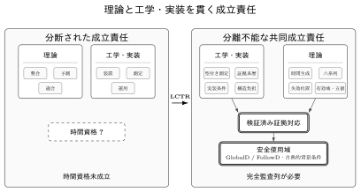